第29章電子格子相互作用 — 虚数振動数を有するフォノンから Cooper 対まで
第13〜14章ではフォノンを「イオンをつなぐバネの振動」として，第15〜18章では電子を「止まったイオンが作る周期ポテンシャルの中の波」として，別々に扱った．この分業は 断熱近似（Born–Oppenheimer（ボルン・オッペンハイマー）近似）に支えられている．電子はイオンよりずっと軽く速いので，イオンの配置が決まれば電子はその配置に合った基底状態にすぐ落ち着く，という近似である．しかし，イオンが動けば電子の感じるポテンシャルが変わり，電子の状態が変われば今度はイオンに働く力が変わる．この「やり取り」が 電子格子相互作用（electron–phonon interaction）である．第22章では，それを電子の散乱（移動度を下げる原因）として扱った．本章では，電子格子相互作用がもっと劇的なこと——結晶の形を変えることと，電子どうしを引き合わせること——を引き起こす様子を見る．
本章の背骨は，電子格子相互作用の 2 つの顔 である．一つは 静的な電子格子相互作用：原子を少しずらして止めておくと，電子が新しい配置に合わせて組み替わり，全エネルギーが下がる．この下がり方が格子の復元力に勝つと，高対称な構造のまま計算したフォノンの振動数の 2 乗が負になる．これが第一原理計算でしばしば現れる 虚数振動数を有するフォノン（imaginary-frequency phonon mode）の正体であり，強誘電体，ペロブスカイトの八面体回転，Jahn–Teller（ヤーン・テラー）歪み，Peierls（パイエルス）転移という構造相転移の共通の起源である．もう一つは 動的な電子格子相互作用：原子が振動している最中に電子がフォノンを出したり吸ったりする．電子は「フォノンの衣」を着て重くなり，有限の寿命をもつ．さらに，フォノンを仲立ちにして 電子どうしに引力 が生まれ，Fermi 面の上の 2 個の電子が束縛された対——Cooper（クーパー）対——を作る．これが超伝導の出発点になる．一言でまとめると，静的な電子格子相互作用の行き着く先は「虚数振動数を有するフォノン」（高対称な構造の不安定）であり，動的な電子格子相互作用の行き着く先は「Cooper 対」（超伝導）である．
この 2 つは同じハミルトニアンの 2 つの極限である．違いは時間の尺度にある．格子がゆっくり変形して電子がそれに瞬時に追随するとき（静的）は，電子の組み替えが格子のバネを軟らかくする．Fermi 面のすぐ近くの電子が，振動している格子とフォノンを実際に（または仮想的に）やり取りするとき（動的）は，重いイオンの応答が遅れる．速い電子が通り過ぎたあとにイオンの寄り集まり（正電荷の跡）が残り，それがあとから来る電子を引き寄せる．遅れるのは電子ではなく，イオンの側である．本章ではまず 2 準位＋格子の小さな模型で静的な場合を完全に解き（29.2 節），それを第一原理フォノン計算の読み方につなげる（29.3 節）．金属の場合を Kohn（コーン）異常としてまとめたあと（29.4 節），動的な場合に移り，電子の質量増強と電気抵抗（29.5 節），フォノン交換による引力（29.6 節），Cooper 対（29.7 節），結合の強さの測り方と計算の仕方（29.8 節）を順に導く．
前後の章とのつながりを述べておく．第27章で導入した生成・消滅演算子とファインマン図の読み方，自己エネルギーの意味を，本章では電子とフォノンの場合に具体的に使う．第28章の電子間相互作用（Hubbard 模型）と本章の電子格子相互作用は，第V部の 2 本柱である．格子の非調和性が虚数振動数を有するフォノンを高温で安定化させる話は第30章 30.8 節で，電荷が格子の歪みをまとうポーラロンは第31章で，1 次元の Peierls 転移と電荷密度波は第35章で，多数の Cooper 対が凝縮した超伝導状態（BCS 理論）は第37章で扱う．
- 電子格子相互作用のハミルトニアン $H_{\rm ep}=\sum g_{\kk\qq}\,c^\dagger_{\kk+\qq}c_\kk(a_\qq+a^\dagger_{-\qq})$ の読み方と，結合の種類（変形ポテンシャル，Fröhlich，圧電）
- 静的と動的の 2 つの顔：時間の尺度（電子 $\sim\mathrm{fs}$，格子 $\sim0.1\,\mathrm{ps}$）による区別
- 2 準位＋格子の模型 $E_\pm(Q)=\tfrac12KQ^2\pm\sqrt{\Delta_0^2+g^2Q^2}$ の完全な解：有効な力定数 $K_{\rm eff}=K-g^2/\Delta_0$，二重井戸，擬 Jahn–Teller 効果と Jahn–Teller 効果
- 2 次摂動の一般式 $K_{\rm eff}=K_0-2\sum_n\abs{\bra{n}\partial H/\partial Q\ket{0}}^2/(E_n-E_0)$：電子の組み替えは必ず力定数を下げる
- 虚数振動数を有するフォノンの意味と第一原理フォノン計算の読み方（$\Gamma$ 点・ゾーン境界・$2k_F$），計算の不備で出る場合の見分け方
- 金属のフォノンのくりこみ，Kohn 異常，Peierls 不安定性が 2 準位模型と同じ構造をもつこと
- 電子の自己エネルギー：質量増強 $m^*=m_b(1+\lambda)$，分散のキンク，電気抵抗の $T$ と $T^5$
- フォノン交換による有効相互作用 $V_{\rm eff}(\qq,\omega)$ の 2 次摂動による導出と，遅延した引力，同位体効果
- Cooper 問題の完全な解：どんなに弱い引力でも Fermi 面の上に束縛対ができる
- Eliashberg（エリアシュベルグ）関数 $\alpha^2F(\omega)$，結合定数 $\lambda$，McMillan（マクミラン）の式と水素化物の高温超伝導
29.1 電子格子相互作用とは何か
本章で扱う現象の全体像を先に図29.1 に示す．左が「静的な電子格子相互作用」，右が「動的な電子格子相互作用」である．この 2 つがどこで分かれるのかは 29.1.6 項で説明する．
29.1.1 断熱近似 — 電子とイオンの分業
固体は電子とイオン（原子核と内殻電子）からできている．全体のハミルトニアンは，イオンの運動エネルギー，電子の運動エネルギー，それにすべての粒子どうしの Coulomb 相互作用の和である．電子の座標をまとめて $\rr$，イオンの座標をまとめて $\RR$ と書くと
$$ H=T_{\rm ion}+T_{\rm el}+U(\rr,\RR) $$である．電子の質量 $m$ とイオンの質量 $M$ の比は $m/M\sim10^{-4}$〜$10^{-6}$ と小さい（Li で $8\times10^{-5}$，Cu で $9\times10^{-6}$，Pb で $3\times10^{-6}$）．同じ大きさの力を受けたときの加速度は $M/m$ 倍（$10^4$ 倍以上）違い，同じ程度のエネルギーをもつときの速さは $\sqrt{M/m}$ 倍（$10^2$〜$10^3$ 倍）違う．電子はイオンよりずっと機敏に動く．そこで次のように 2 段階に分けて考える．
- イオンを $\RR$ に止めたまま，電子の Schrödinger 方程式 $\bigl[T_{\rm el}+U(\rr,\RR)\bigr]\Psi_n(\rr;\RR)=E_n(\RR)\Psi_n(\rr;\RR)$ を解く．固有値 $E_n(\RR)$ はイオンの配置の関数になる．
- 電子は基底状態 $n=0$ にいるとし，$E_0(\RR)$ をイオンにとっての位置エネルギーとみなして，イオンの運動 $T_{\rm ion}+E_0(\RR)$ を解く．
これが 断熱近似（adiabatic approximation），または Born–Oppenheimer 近似 である．$E_0(\RR)$ を 断熱ポテンシャル（Born–Oppenheimer 面）という．第12章の結合エネルギーも，第13章の力定数も，じつはこの $E_0(\RR)$ を平衡位置 $\RR_0$ のまわりで展開したものである：
$$ E_0(\RR_0+\uu)=E_0(\RR_0)+\frac12\sum_{l,l'}\sum_{\alpha,\beta}\Phi^{(2)}_{l\alpha,l'\beta}\,u_{l\alpha}u_{l'\beta}+\cdots, \qquad \Phi^{(2)}_{l\alpha,l'\beta}=\frac{\partial^2E_0}{\partial u_{l\alpha}\partial u_{l'\beta}}\bigg|_{\uu=0} $$（$l$ はイオンの番号，$\alpha,\beta$ は $x,y,z$．1 次の項は平衡位置で 0）．ここで大事なのは，力定数 $\Phi^{(2)}$ の中に電子の寄与がすでに入っていることである．$E_0$ は「イオンどうしの Coulomb 反発」と「イオンを動かしたときに組み替わった電子のエネルギー」の和だからである．これが 29.2〜29.4 節の「静的な電子格子相互作用」の出発点になる．
断熱近似が捨てたものは何か．イオンが動いている最中には，電子は厳密には基底状態に追随しきれず，励起状態 $n\ne0$ に移る確率がわずかに残る．この「追随の遅れ」をきちんと扱うのが 29.5〜29.7 節の「動的な電子格子相互作用」である．断熱近似の誤差の目安は，電子の励起エネルギーに比べたフォノンのエネルギーの比 $\hbar\omega/\Delta E_{\rm el}$ である．絶縁体では $\Delta E_{\rm el}$ はバンドギャップなので比は小さい．金属では Fermi 面のすぐ上に空いた状態があり，いくらでも小さなエネルギーで電子を励起できる．金属では断熱近似の「その先」が必ず問題になる．超伝導が金属で起こるのは偶然ではない．
29.1.2 原子が動くと電子の感じるポテンシャルが変わる
電子が感じるポテンシャルを，イオン 1 個のポテンシャル $v(\rr)$（遮蔽を含めた有効なもの）の和で書く．イオン $l$ が平衡位置 $\RR_l$ から $\uu_l$ だけずれると
$$ V(\rr)=\sum_l v(\rr-\RR_l-\uu_l)\simeq\sum_l v(\rr-\RR_l)-\sum_l\uu_l\cdot\nabla v(\rr-\RR_l) $$である（Taylor 展開の 1 次まで）．第 1 項は第16章の周期ポテンシャルで，バンドを作る．第 2 項
が，格子の変位が電子に与える摂動である．$\uu_l$ は変位なので，$\delta V$ は「電子の座標」と「イオンの座標」の両方を含む．これが電子と格子を結びつける．
$\delta V$ は電子の状態をどう変えるか．波数 $\qq$ の格子波 $\uu_l\propto\ee^{i\qq\cdot\RR_l}$ を考える．このとき $\delta V(\rr)$ も波数 $\qq$ で変調され，平面波（Bloch 波）$\ket{\kk}$ を $\ket{\kk+\qq}$ に移す．運動量（結晶運動量）の保存則：電子の波数の変化はフォノンの波数に等しい．この行列要素を計算し，フォノンの量子化（第13章 13.8 節，第22章 22.1.3 項）と組み合わせると，電子格子相互作用のハミルトニアンが得られる．
記号の約束：第27章 27.4 節の生成・消滅演算子
$c^\dagger_{\kk\sigma}$ は「波数 $\kk$，スピン $\sigma$ の電子を 1 個作る」，$c_{\kk\sigma}$ は「1 個消す」演算子である．$a^\dagger_\qq$，$a_\qq$ は波数 $\qq$ のフォノンを 1 個作る・消す（第27章 27.4 節）．$c^\dagger_{\kk+\qq}c_\kk$ は「電子を $\kk$ から $\kk+\qq$ へ移す」と読む．1 電子の演算子 $A$ は $\sum_{\kk,\kk'}\bra{\kk'}A\ket{\kk}\,c^\dagger_{\kk'}c_\kk$ と書ける（行列要素を係数にして「移す」演算子を足す）．本章では，スピンを変えない過程ではスピンの添字を省くことがある．
導出：電子格子相互作用のハミルトニアン
簡単のため，単位胞に原子が 1 個（質量 $M$），フォノンの分枝を 1 本とし，電子は体積 $\mathcal V=N\Omega_c$ の結晶の中の平面波 $\langle\rr|\kk\rangle=\ee^{i\kk\cdot\rr}/\sqrt{\mathcal V}$ で近似する（$N$ は単位胞の数，$\Omega_c$ は単位胞の体積）．
ステップ1：変位を量子化する．第13章 13.8 節のとおり，各基準振動は独立な調和振動子で，変位は「フォノンを 1 個消す部分」と「1 個作る部分」の和になる：
$$ \uu_l=\sum_\qq\sqrt{\frac{\hbar}{2NM\omega_\qq}}\;\hat{\bm e}_\qq\,\bigl(a_\qq+a^\dagger_{-\qq}\bigr)\,\ee^{i\qq\cdot\RR_l} $$$\hat{\bm e}_\qq$ は振動の向きを表す単位ベクトル（偏極ベクトル），$\sqrt{\hbar/2NM\omega_\qq}$ は 1 個のモードの零点振動の振幅（を $\sqrt N$ で割ったもの）である．$a^\dagger_{-\qq}$ が $\ee^{i\qq\cdot\RR_l}$ と組になるのは，$\uu_l$ が実数（エルミート演算子）であるためで，$\qq\to-\qq$ の項とあわせて $\uu_l^\dagger=\uu_l$ になる．
ステップ2：$\nabla v$ の行列要素．$v_\pp\equiv\int\ee^{-i\pp\cdot\bm s}v(\bm s)\,\dd^3s$（イオン 1 個のポテンシャルの Fourier 変換）とおく．$\bm s=\rr-\RR_l$ と変数を変えると
$$ \bra{\kk'}\nabla v(\rr-\RR_l)\ket{\kk} =\frac{1}{\mathcal V}\int\ee^{-i\kk'\cdot\rr}\,\nabla v(\rr-\RR_l)\,\ee^{i\kk\cdot\rr}\,\dd^3r =\frac{\ee^{-i(\kk'-\kk)\cdot\RR_l}}{\mathcal V}\int\ee^{-i(\kk'-\kk)\cdot\bm s}\,\nabla v(\bm s)\,\dd^3s $$最後の積分を部分積分する（$v\to0$ が遠方で速く 0 になるので表面項は消える）．$\nabla\ee^{-i\pp\cdot\bm s}=-i\pp\,\ee^{-i\pp\cdot\bm s}$ だから，$\pp=\kk'-\kk$ として
$$ \int\ee^{-i\pp\cdot\bm s}\,\nabla v(\bm s)\,\dd^3s=-\int v(\bm s)\,\nabla\ee^{-i\pp\cdot\bm s}\,\dd^3s=i\pp\,v_\pp $$ステップ3：イオンについて和をとる．式 \eqref{eq:29-dV} にステップ1を入れると，$\qq$ の成分の係数に
$$ \sum_l\ee^{i\qq\cdot\RR_l}\,\ee^{-i(\kk'-\kk)\cdot\RR_l}=N\,\delta_{\kk',\kk+\qq} $$が現れる（逆格子ベクトルだけずれた $\kk'=\kk+\qq+\GG$ の項，すなわち Umklapp 過程はここでは省く）．これが結晶運動量の保存則である．$N/\mathcal V=1/\Omega_c$ を使ってまとめると
$$ \bra{\kk+\qq}\delta V\ket{\kk}=-\sqrt{\frac{\hbar}{2NM\omega_\qq}}\;\frac{i\,(\qq\cdot\hat{\bm e}_\qq)\,v_\qq}{\Omega_c}\;\bigl(a_\qq+a^\dagger_{-\qq}\bigr) $$ステップ4：第二量子化の形に書く．記号の約束の箱の規則で，行列要素を係数にして $c^\dagger_{\kk+\qq}c_\kk$ を掛けて足す．∎
式 \eqref{eq:29-Hep} は電子格子相互作用の 一般形 である．単純な模型では $g_{\kk\qq}$ は $\qq$ だけによるが，実際の固体では Bloch 関数の形を反映して $\kk$ にもバンドにも分枝にもよる．第一原理計算では $g_{mn\nu}(\kk,\qq)$（$m,n$ はバンド，$\nu$ はフォノンの分枝）と書き，密度汎関数摂動論で計算する（29.8 節）．$g_{\kk\qq}$ はエネルギーの次元をもち，原子が零点振動の振幅だけ動いたときに，電子のエネルギーがどれだけ揺さぶられるかを表す．式 \eqref{eq:29-Hep} の単純な模型では，$\qq\cdot\hat{\bm e}_\qq$ のために縦波（$\hat{\bm e}_\qq\parallel\qq$）だけが電子と結合する．横波は密度を変えないからである．また $H_{\rm ep}$ がエルミートであるためには $g_{\kk+\qq,-\qq}=g_{\kk\qq}^*$ が必要で，上の式はこれを満たしている（$v_{-\qq}=v_\qq^*$，$\hat{\bm e}_{-\qq}=\hat{\bm e}_\qq$ とする）．
注意：遮蔽を二重に数えない
式 \eqref{eq:29-Hep} の $v(\rr)$ は「伝導電子に遮蔽された」イオンのポテンシャル，$\omega_\qq$ は「電子の応答まで含めた」実際のフォノンの振動数である．第27章 27.3.2 項で注意したように，断熱ポテンシャルの力定数（29.1.1 項の $\Phi^{(2)}$）には電子がイオンについていく効果（遮蔽）がすでに入っている．したがって，実測や第一原理計算のフォノン $\omega_\qq$ と遮蔽された $g$ を使うときは，電子による振動数の変化をもう一度足してはいけない．逆に 29.4 節では，電子の応答を除いた「裸の」振動数 $\Omega_\qq$ から出発して，電子の応答による軟化をあらためて計算する．どちらの出発点に立っているかを，式ごとに確かめる必要がある．
29.1.3 ハミルトニアンの読み方 — 基本の頂点
式 \eqref{eq:29-Hep} の 1 つの項 $g_{\kk\qq}c^\dagger_{\kk+\qq}c_\kk(a_\qq+a^\dagger_{-\qq})$ は，2 つの過程の和である．
- $c^\dagger_{\kk+\qq}c_\kk\,a_\qq$：フォノン $\qq$ を吸収して，電子が $\kk$ から $\kk+\qq$ に移る．
- $c^\dagger_{\kk+\qq}c_\kk\,a^\dagger_{-\qq}$：フォノン $-\qq$ を放出して，電子が $\kk$ から $\kk+\qq$ に移る．
どちらの過程でも，電子の波数の増え $\qq$ は，フォノンの系から電子の系へ渡った結晶運動量に等しい．ファインマン図（第27章 27.4 節）では，電子を矢印つきの実線，フォノンを波線で描き，線の出会う点（頂点）に係数 $g_{\kk\qq}$ を割り当てる（図29.2）．以後の節の図は，すべてこの頂点を 2 つ以上つないで作る．
29.1.4 結合の種類
$g_{\kk\qq}$ の大きさと $q$ への依存の仕方は，結合の仕組みで決まる．第22章で散乱の原因として扱った 3 つと，金属のイオンのポテンシャルによる結合を表にまとめる．
| 種類 | 相手のフォノン | 仕組み | $\abs{g_\qq}^2$ の $q$ 依存 | 本書の該当箇所 |
|---|---|---|---|---|
| 変形ポテンシャル | 音響（縦波） | 格子の伸び縮み（歪み $\propto q u$）でバンドの端が上下する | $\propto q$ | 22.1.2 項 |
| 光学的変形ポテンシャル | 光学（無極性） | 副格子どうしの相対変位でバンドが割れる・ずれる | $\propto q^0$ | 22.3.2 項 |
| Fröhlich（フレーリッヒ） | 縦波光学（LO，極性結晶） | 正負のイオンの相対変位が作る巨視的な分極の電場 | $\propto 1/q^2$ | 22.3.1 項，32 章 |
| 圧電 | 音響（圧電結晶） | 歪みが分極を生み，その電場が電子を押す | $\propto 1/q$ | 22.1.7 項 |
| 遮蔽されたイオンのポテンシャル | 縦波音響（金属） | 式 \eqref{eq:29-Hep}．$v_\qq$ は伝導電子に遮蔽されて $q\to0$ で有限 | $\propto q$ | 29.6 節（ジェリウム模型） |
変形ポテンシャルと金属の場合に $\abs{g_\qq}^2\propto q$ となるのは，式 \eqref{eq:29-Hep} の $(\qq\cdot\hat{\bm e}_\qq)^2/\omega_\qq\propto q^2/(c_sq)=q/c_s$（$c_s$ は音速）による．Fröhlich 相互作用の $1/q^2$ は，長距離の Coulomb 力 $1/q^2$ の名残りである（第32章で LO–TO 分裂として現れる同じ電場）．
29.1.5 無次元の結合定数 $\lambda$ — 予告
結合の「強さ」を比べるには，次元のない数が便利である．本章では
$$ \lambda\sim\frac{2N(0)\,\langle\abs{g}^2\rangle}{\hbar\omega} \qquad\left(\frac{\text{電子が格子の歪みから得るエネルギー}}{\text{格子を歪ませるのに要るエネルギー}}\right) $$の形の量を 電子格子結合定数 とよぶ（$N(0)$ は Fermi 準位での 1 スピンあたりの状態密度，$\langle\abs{g}^2\rangle$ は Fermi 面の上で平均した結合の 2 乗，$\omega$ は代表的なフォノンの角振動数）．分子の $N(0)\abs{g}^2$ は「電子がどれだけ歪みに応答して得をするか」，分母の $\hbar\omega$ は「格子がどれだけ硬いか」の目安である．正確な定義は 29.5 節（質量増強）と 29.8 節（Eliashberg 関数）で与える．単純金属では $\lambda\approx0.1$〜$0.5$，Pb や Hg のような軟らかい金属では $\lambda\approx1.5$ 程度になる．第35章 35.1.5 項の Peierls 転移の結合定数も同じ考え方の量である．
29.1.6 静的と動的 — 時間の尺度で分ける
同じハミルトニアン \eqref{eq:29-Hep} から，まったく違う 2 種類の現象が出てくる（図29.1）．分かれ目は，電子の応答の速さと，格子の動きの速さの比である．
電子の側の時間の尺度は $\hbar/E_F$（Fermi エネルギーで決まる），格子の側は $1/\omega_D$（Debye 振動数で決まる）である．例題29.1 で見るように，前者は $0.1\,\mathrm{fs}$，後者は $20\,\mathrm{fs}$ 程度（振動の周期 $2\pi/\omega_D$ にすると $0.1\,\mathrm{ps}$）で，2 桁以上違う．
- 静的な電子格子相互作用：格子の変形を「止まったもの」とみなし，電子はそれに瞬時に追随する．電子の基底状態のエネルギーが変位 $Q$ の関数として下がり，格子の力定数が変わる．励起に要るエネルギー（エネルギー差）がフォノンのエネルギー $\hbar\omega$ よりずっと大きい電子の組み替えは，この描像に従う．
- 動的な電子格子相互作用：Fermi 面から $\hbar\omega_D$ 以内の電子では，励起に要るエネルギーがフォノン 1 個のエネルギーと同じ程度しかない．エネルギーと時間の不確定性の関係でいえば，この電子のエネルギーを $\hbar\omega_D$ より細かく決めるには $1/\omega_D$ より長い時間がかかる．つまり，この電子にとっては格子の振動は「止まった歪み」ではなく，1 個ずつ数えられる量子（フォノン）である．電子はフォノンを実際に（または仮想的に）出し入れし，その結果，電子の質量と寿命が変わり，電子どうしの引力が生まれる．このとき遅れるのは重いイオンの応答の側で，速い電子が通り過ぎたあとに格子の歪み（正電荷の跡）が残る（29.6.2 項）．
つまり，静的と動的の違いは「同じ結合 $g$ を，エネルギー差の大きい電子の組み替え（格子の硬さを変える）として見るか，Fermi 面のすぐ近くの電子とフォノンのやり取り（電子の性質と電子どうしの相互作用を変える）として見るか」の違いである．本章の 2 本柱はここから分かれる．
物理的意味：本章の 2 本柱 — 静的と動的
- 静的（29.2〜29.4 節）：原子をずらして止める → 電子が組み替わってエネルギーが下がる → 力定数が $K$ から $K_{\rm eff}=K_0-(\text{電子の組み替えによる軟化})$ に下がる（定理29.1）．軟化が勝つと $\omega^2=K_{\rm eff}/M\lt0$，すなわち虚数振動数を有するフォノンになり，高対称な構造は歪む（強誘電，八面体回転，Jahn–Teller 歪み，Peierls 転移）．第一原理フォノン計算では，この軟化が「電子の応答の項」として力定数に入っている．
- 動的（29.5〜29.8 節）：電子がフォノンを出し入れする → 電子は「フォノンの衣」を着て重くなり（$m^*=m_b(1+\lambda)$），寿命をもつ（電気抵抗）→ 2 個の電子がフォノンを 1 個やり取りすると引力が生まれ（$V_{\rm eff}\lt0$），Fermi 面の上の 2 個の電子は弱い引力でも Cooper 対を作る → 多数の対が凝縮して超伝導（第37章）．
- 2 つは同じ結合 $g$ の 2 つの極限：例題29.12 で見るように，フォノン交換の引力の $\omega\to0$ の極限 $-2\abs{g_\qq}^2/\hbar\omega_\qq$ は，「電子が格子を歪ませ，その歪みが別の電子を引きつける」静的なエネルギーそのものである．また 29.8.4 項で見るように，結合を強くすると $\lambda$（超伝導）が増える一方で，フォノンが軟らかくなりすぎると虚数振動数（構造の不安定）が現れる．2 本柱は背中合わせの関係にある．
例題29.1 電子と格子の時間の尺度を比べる
銅（Cu）の Fermi エネルギーは $E_F=7.0\,\mathrm{eV}$，Debye 温度は $\Theta_D=343\,\mathrm{K}$ である．(1) $\hbar/E_F$ を求めよ．(2) Debye 振動数 $\omega_D=k_B\Theta_D/\hbar$ と $1/\omega_D$，振動の周期 $2\pi/\omega_D$ を求めよ．(3) $(1/\omega_D)/(\hbar/E_F)$ を，質量比 $\sqrt{M/m}$ と比べよ（Cu の原子量 63.55）．
解答．(1) $\hbar=6.582\times10^{-16}\,\mathrm{eV\,s}$ を使うと
$$ \frac{\hbar}{E_F}=\frac{6.582\times10^{-16}\,\mathrm{eV\,s}}{7.0\,\mathrm{eV}}=9.4\times10^{-17}\,\mathrm{s}\approx0.1\,\mathrm{fs} $$(2) $$k_B\Theta_D=1.381\times10^{-23}\,\mathrm{J/K}\times343\,\mathrm{K}=4.736\times10^{-21}\,\mathrm{J}$$ なので
$$ \omega_D=\frac{4.736\times10^{-21}\,\mathrm{J}}{1.0546\times10^{-34}\,\mathrm{J\,s}}=4.49\times10^{13}\,\mathrm{s^{-1}} $$ $$ \frac1{\omega_D}=2.23\times10^{-14}\,\mathrm{s}=22\,\mathrm{fs}, \qquad \frac{2\pi}{\omega_D}=0.14\,\mathrm{ps} $$(3) 比は $22\,\mathrm{fs}/0.094\,\mathrm{fs}=2.4\times10^2$．一方，$$M=63.55\times1.6605\times10^{-27}\,\mathrm{kg}=1.055\times10^{-25}\,\mathrm{kg}$$ から $$\sqrt{M/m}=\sqrt{1.055\times10^{-25}/9.109\times10^{-31}}=3.4\times10^2$$．同じ桁である．
∎ 電子は格子より 2 桁以上速く応答する．この比が $\sqrt{M/m}$ と同じ桁になるのは偶然ではなく，イオンの振動数が「電子が作るバネ（$\sim E_F/a^2$）」と「イオンの質量 $M$」で決まるからである（$\hbar\omega_D/E_F\sim\sqrt{m/M}$）．断熱近似の誤差がこの比で小さいことが，静的な描像の根拠である．逆に Fermi 面から $\hbar\omega_D=k_B\Theta_D=30\,\mathrm{meV}$ 以内の電子については，この比が成り立たず，動的な扱いが必要になる．
29.2 静的な電子格子相互作用 I — 格子が歪むと電子のエネルギーが下がる
29.2.1 現象 — 対称性の高い構造をわざわざ崩す結晶
結晶はふつう，対称性の高い構造をとろうとするように見える．ところが，対称性の高い構造が「わざわざ」崩れる例がたくさんある．
- $\mathrm{BaTiO_3}$ は約 $120\,{}^\circ\mathrm{C}$ より上では立方晶のペロブスカイトだが，それより下では $\mathrm{Ti}$ が酸素八面体の中心からずれ，自発分極をもつ（強誘電体，第19章 19.9 節）．
- $\mathrm{LaMnO_3}$ や $\mathrm{KCuF_3}$ では，$\mathrm{Mn^{3+}}$ や $\mathrm{Cu^{2+}}$ を囲む八面体が一方向に伸び，Mn–O 結合は長いもの（約 $2.2\,\text{Å}$）と短いもの（約 $1.9\,\text{Å}$）に分かれる（Jahn–Teller 歪み，第10章 10.3 節）．
- ポリアセチレンの炭素の鎖は，等間隔ではなく，長い結合と短い結合が交互に並ぶ（Peierls 歪み，第35章 35.1 節）．
どの例でも，原子をずらすと電子のエネルギーが下がり，その得が格子を歪ませる損より大きいことが原因である．本節では，この「電子の得」と「格子の損」の勝負を，最も簡単な模型で完全に解く．模型は小さいが，結論（電子の組み替えは必ず力定数を下げる）は一般的に成り立ち，29.3 節の虚数振動数を有するフォノン，29.4 節の Kohn 異常と Peierls 転移，第31章の小さなポーラロンの土台になる．
29.2.2 2 準位＋格子の模型
格子の歪みを 1 つの座標 $Q$ で表す（$Q=0$ が対称性の高い構造）．$Q$ は，たとえば八面体の中心の $\mathrm{Ti}$ のずれ，あるいはある基準振動の振幅（基準座標，配位座標）である．$Q$ だけを考えたときの格子のエネルギーは，調和近似で $\frac12KQ^2$（$K\gt0$ はバネ定数）とする．
電子の側は，エネルギーの近い 2 つの状態 $\ket{a}$，$\ket{b}$ だけを考える．$Q=0$ でのエネルギーを $-\Delta_0$，$+\Delta_0$ とする（間隔 $2\Delta_0$）．たとえば，Ti の位置を中心とする空間反転（$\rr\to-\rr$．この反転で歪みは $Q\to-Q$ になる）で符号を変えない（偶の）状態を $\ket{a}$，符号を変える（奇の）状態を $\ket{b}$ とする（図29.3(a) の「a（偶）」「b（奇）」）．Ti の例では，$\ket{a}$ は酸素の $2p$ 軌道が主の詰まった状態，$\ket{b}$ は $\mathrm{Ti}$ の $3d$ 軌道が主の空の状態にあたる．歪み $Q$ は電子のポテンシャルを $Q\,(\partial H/\partial Q)$ だけ変える．$\partial H/\partial Q$ は $Q$ と同じく反転で符号を変えるので，同じ偶奇の状態のあいだの行列要素 $\bra{a}\partial H/\partial Q\ket{a}$，$\bra{b}\partial H/\partial Q\ket{b}$ は 0 になり，異なる偶奇の状態のあいだの $\bra{a}\partial H/\partial Q\ket{b}\equiv g$ だけが残る（$g$ は実数にとれる）．したがって，基底 $\{\ket{a},\ket{b}\}$ で電子のハミルトニアンは
となる．電子は 1 個で，低いほうの準位に入るとする．
ここで「電子 1 個」は，スピンを区別した 1 本の準位に 1 個という意味である．Ti の例の O $2p$ 準位のように，下の準位に上向きと下向きのスピンの電子が 2 個入っている場合は，2 個がそれぞれ同じだけ得をするので，以下の電子の寄与（$-g^2/\Delta_0$ など）を 2 倍に読み替えればよい（$g^2\to2g^2$）．上の準位にも電子がいると話が変わることは，29.2.4 項の最後で述べる．
記号の約束：この章の $\Delta_0$，$g$，$\lambda$，$\xi$ と，二重に使う記号
- $\Delta_0$ は 2 準位の間隔の半分である．超伝導のエネルギーギャップ $\Delta$（第37章）とは別の量である．本章で超伝導のギャップに触れるときは「超伝導ギャップ $\Delta$」と明記する．
- 29.2〜29.3 節の $g$ は「単位の歪みあたりの行列要素」で，次元はエネルギー／長さ（$\mathrm{eV/Å}$）である．式 \eqref{eq:29-Hep} の $g_{\kk\qq}$（次元はエネルギー）とは，零点振動の振幅 $\sqrt{\hbar/2M\omega}$ を掛けるかどうかだけが違う．第31章の Holstein 模型の $g$ はエネルギーの次元（$a+a^\dagger$ あたり）で，本章の $g$ に当たるのは第31章 31.8.3 項の 2 サイト模型の $g'=A/\sqrt2$（単位の変位あたり）である．
- $\lambda$ は無次元の電子格子結合定数である．超伝導の磁場侵入長 $\lambda_L$，$\lambda(T)$（第37章）とは添字や引数で区別する．第37章では同じ量を $\lambda_{\rm ep}$ と書いている．
- $\xi_\kk=E(\kk)-\mu$ は化学ポテンシャル（Fermi 準位）から測った電子のエネルギーで，必ず添字 $\kk$ を付ける．超伝導のコヒーレンス長 $\xi_0$，$\xi(T)$ とは別の量である．
- $T_c$ は 2 つの意味で使う．29.3 節（例題29.6，例題29.7 を含む）と演習29.2 では構造相転移の転移温度，29.6〜29.8 節では超伝導の転移温度である．シミュレーター「超伝導」の虚数振動数を有するフォノンのタブでは，構造相転移の温度を $T_0$ と書いている．Peierls 転移の温度は $T_P$ と書く．
- $\mu$ は化学ポテンシャル（$\xi_\kk$ の定義）である．Coulomb 斥力の強さは $\mu_{\rm C}$，Coulomb 擬ポテンシャルは $\mu^*$ と添字・肩の印で区別する（29.6.6 項）．抵抗率の単位の $\mu\Omega\,\mathrm{cm}$ の $\mu$ は $10^{-6}$ である．
- $\Omega$ の付く量：$\Omega_c$ は単位胞の体積，$\Omega_q$（$\Omega_{2k_F}$）は電子の応答を除いた「裸の」フォノンの振動数（29.4 節），$\Omega_p$ はイオンのプラズマ振動数（29.6.5 項），$\Omega$（添字なし）は 29.9.1 項の有効なフォノンの振動数である．$\omega_\qq$ はつねに電子の応答まで含めた実際のフォノンの振動数を表す（29.4 節では「くりこまれた振動数」，29.6.5 項では「電子に遮蔽されたイオンの振動」と呼ぶが同じ意味である）．
- $\alpha$ の付く量：$\alpha,\beta$ は直交座標の添字（29.1 節，29.3.2 項），$\alpha^2F(\omega)$ は Eliashberg 関数（29.8 節．$\alpha^2$ 全体で 1 つの記号），$\alpha$ は同位体効果の指数（式 \eqref{eq:29-isotope}），$\alpha_V$，$\beta_V$ は Varshni の式の定数，$\alpha_F$ は Fröhlich の結合定数である．
- $N$ は単位胞の数，$N(0)$ は Fermi 準位での 1 スピンあたりの状態密度である（どの体積あたりかは式ごとに断る）．
導出1：2 準位＋格子の模型の断熱ポテンシャル
ステップ1：電子の固有値．式 \eqref{eq:29-2lev} の行列の固有値 $E$ は，永年方程式
$$ \det\begin{pmatrix}-\Delta_0-E & gQ\\ gQ & \Delta_0-E\end{pmatrix}=(-\Delta_0-E)(\Delta_0-E)-g^2Q^2=0 $$を満たす．$(-\Delta_0-E)(\Delta_0-E)=E^2-\Delta_0^2$ なので $E^2=\Delta_0^2+g^2Q^2$，すなわち $E=\pm\sqrt{\Delta_0^2+g^2Q^2}$．
ステップ2：全エネルギー．これに格子のエネルギーを足すと，2 枚の断熱ポテンシャルが得られる．
電子が下の準位にいるときの全エネルギーは $E_-(Q)$ である．∎
29.2.3 対称な構造での曲率 — 有効な力定数
$Q=0$ の近くで $E_-(Q)$ がどんな形をしているかを調べる．$\abs{gQ}\ll\Delta_0$ として平方根を展開する．$\sqrt{1+x}=1+\frac x2-\frac{x^2}8+\cdots$ で $x=g^2Q^2/\Delta_0^2$ とおくと
$$ \sqrt{\Delta_0^2+g^2Q^2}=\Delta_0\sqrt{1+\frac{g^2Q^2}{\Delta_0^2}}=\Delta_0+\frac{g^2Q^2}{2\Delta_0}-\frac{g^4Q^4}{8\Delta_0^3}+\cdots $$したがって
$$ E_-(Q)=-\Delta_0+\frac12\left(K-\frac{g^2}{\Delta_0}\right)Q^2+\frac{g^4}{8\Delta_0^3}Q^4+\cdots $$$Q^2$ の係数の 2 倍が，対称な構造での実際のバネ定数（断熱ポテンシャルの曲率）である．
第 2 項 $-g^2/\Delta_0$ が電子の寄与である．電子が下の準位にいる限り，この寄与は必ず負で，格子を軟らかくする．結合 $g$ が強いほど，また 2 準位の間隔 $2\Delta_0$ が狭いほど（状態が混ざりやすいほど）軟らかくなる．$Q^4$ の係数 $g^4/8\Delta_0^3$ は正なので，$Q$ が大きいところでは電子の寄与は弱まる（下の準位が $\abs{gQ}$ の割合でしか下がらなくなる）．
29.2.4 二重井戸 — 臨界の結合，安定な歪み，エネルギーの下がり
式 \eqref{eq:29-Keff2} から，結合の強さで 2 つの場合に分かれる．
- $g^2\lt K\Delta_0$：$K_{\rm eff}\gt0$．$Q=0$ がエネルギーの極小で，対称な構造が安定（単一の井戸）．ただし，振動数は電子のいない場合より下がっている．
- $g^2\gt K\Delta_0$：$K_{\rm eff}\lt0$．$Q=0$ はエネルギーの極大（山の頂上）で，対称な構造は不安定．$E_-(Q)$ は $Q=\pm Q_0$ に 2 つの谷をもつ（二重井戸）．
境目の $g_c=\sqrt{K\Delta_0}$ が臨界の結合である．$g\gt g_c$ のとき，安定な歪みとエネルギーの下がりを求めよう．
導出2：安定な歪み $Q_0$ と二重井戸の深さ
ステップ1：極値の条件．式 \eqref{eq:29-Epm} の $E_-(Q)$ を $Q$ で微分する．$\dfrac{\dd}{\dd Q}\sqrt{\Delta_0^2+g^2Q^2}=\dfrac{g^2Q}{\sqrt{\Delta_0^2+g^2Q^2}}$ なので
$$ \frac{\dd E_-}{\dd Q}=KQ-\frac{g^2Q}{\sqrt{\Delta_0^2+g^2Q^2}}=Q\left[K-\frac{g^2}{\sqrt{\Delta_0^2+g^2Q^2}}\right] $$$Q=0$ 以外の極値は，角かっこが 0 になるところ：
$$ \sqrt{\Delta_0^2+g^2Q_0^2}=\frac{g^2}{K} $$ステップ2：$Q_0$ を解く．両辺を 2 乗して $\Delta_0^2+g^2Q_0^2=g^4/K^2$．$g^2$ で割って
$$ Q_0^2=\frac{g^2}{K^2}-\frac{\Delta_0^2}{g^2}=\frac{g^2}{K^2}\left[1-\left(\frac{K\Delta_0}{g^2}\right)^2\right] $$右辺が正であるためには $g^2\gt K\Delta_0$ が必要で，これは前の分類と一致する．
ステップ3：谷の底のエネルギー．$E_-(Q_0)$ にステップ1・2を入れる．
$$ E_-(Q_0)=\frac12K\left(\frac{g^2}{K^2}-\frac{\Delta_0^2}{g^2}\right)-\frac{g^2}{K} =-\frac{g^2}{2K}-\frac{K\Delta_0^2}{2g^2} $$ステップ4：深さ．対称な構造のエネルギー $E_-(0)=-\Delta_0$ からの下がりは
$$ E_-(0)-E_-(Q_0)=-\Delta_0+\frac{g^2}{2K}+\frac{K\Delta_0^2}{2g^2} =\frac{g^2}{2K}\left[1-\frac{2K\Delta_0}{g^2}+\frac{K^2\Delta_0^2}{g^4}\right] $$角かっこは $(1-K\Delta_0/g^2)^2$ である．∎
$g$ が臨界値 $g_c$ を少し超えたところでは，$1-K\Delta_0/g^2$ が小さいので $Q_0$ も $E_b$ も 0 から連続的に育つ（2 次の相転移と同じ振る舞い）．結合が十分強い（$g^2\gg K\Delta_0$）と $Q_0\to g/K$，$E_b\to g^2/2K$ となり，29.2.6 項の Jahn–Teller の結果に近づく．図29.4 に，$g$ を変えたときの $E_-(Q)$ の形の変化を示す．
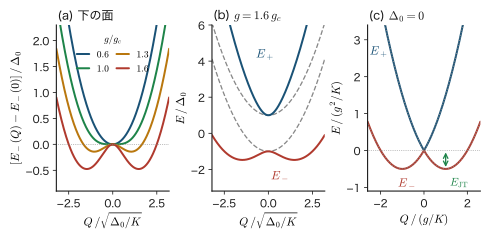
図29.4(b) の見方を言葉にしておく．歪みを入れると，下の面は下に，上の面は上に押される．これは量子力学の 準位反発（2 つの状態が混ざると互いに遠ざかる）である．電子が下の状態だけにいれば，全エネルギーは下がる．格子のバネが十分に硬ければ（$K$ が大きい），この下がりは格子の損に負けて対称な構造が残る．軟らかければ構造は歪む．上の状態にも電子がいると，その分の得は打ち消されるので，歪む傾向は弱まる．温度が上がって上の準位に電子が熱的に励起されると対称な構造に戻る，という構造相転移の簡単な模型がここから作れる（演習29.2）．
例題29.2 2 準位模型の臨界結合と安定な歪み
2 準位の模型で $\Delta_0=0.5\,\mathrm{eV}$，$K=10\,\mathrm{eV/Å^2}$，$g=3\,\mathrm{eV/Å}$ とする．(1) 臨界の結合 $g_c$ を求め，対称な構造が安定か不安定かを判定せよ．(2) $K_{\rm eff}$ を求めよ．(3) 安定な歪み $Q_0$ と二重井戸の深さ $E_b$ を求めよ．
解答．(1) $$g_c=\sqrt{K\Delta_0}=\sqrt{10\times0.5}\,\mathrm{eV/Å}=\sqrt5\,\mathrm{eV/Å}=2.24\,\mathrm{eV/Å}$$．$g=3\gt g_c$ なので対称な構造は不安定．
(2) 式 \eqref{eq:29-Keff2} より
$$ K_{\rm eff}=10\,\mathrm{eV/Å^2}-\frac{(3\,\mathrm{eV/Å})^2}{0.5\,\mathrm{eV}}=10-18=-8\,\mathrm{eV/Å^2} $$(3) $K\Delta_0/g^2=5/9=0.556$．式 \eqref{eq:29-Q0} より
$$ Q_0=\frac{3}{10}\,\text{Å}\times\sqrt{1-0.556^2}=0.300\,\text{Å}\times\sqrt{0.6914}=0.300\times0.8315\,\text{Å}=0.249\,\text{Å} $$ $$ E_b=\frac{9}{2\times10}\,\mathrm{eV}\times\left(1-0.556\right)^2=0.450\,\mathrm{eV}\times0.1975=0.089\,\mathrm{eV} $$（$E_-(Q)$ を数値的に最小化しても $Q_0=0.2494\,\text{Å}$，$E_b=0.0889\,\mathrm{eV}$ になる．）
∎ 格子だけなら $Q=0$ のバネ定数は $+10\,\mathrm{eV/Å^2}$ なのに，電子の組み替えが $-18\,\mathrm{eV/Å^2}$ を加えて，差し引き負になった．歪みは $0.25\,\text{Å}$（結合の長さの 1 割程度），エネルギーの得は $0.09\,\mathrm{eV}\approx1000\,\mathrm{K}$ で，室温の熱エネルギーよりずっと大きい．
動かして確かめる：結合を強くすると単一の井戸が二重井戸に変わる
下のシミュレーターは，式 \eqref{eq:29-Epm} の 2 準位＋格子の模型を描く．つまみは結合 $g$（$\mathrm{eV/Å}$），準位の間隔の半分 $\Delta_0$（$\mathrm{eV}$），ばね定数 $K$（$\mathrm{eV/Å^2}$）の 3 本で，読み出しには比 $r\equiv g^2/K\Delta_0=(g/g_c)^2$ が大きく表示される．既定値（$\Delta_0=0.5\,\mathrm{eV}$，$K=10\,\mathrm{eV/Å^2}$，$g=1.5\,\mathrm{eV/Å}$，$r=0.45$）は単一の井戸である．結合 $g$ のつまみを右に動かすと，下の面 $E_-(Q)$ の $Q=0$ での曲率（$\omega^2$ に比例）が減り，$r=1$（$g=g_c$）で 0，$r\gt1$ で負になって二重井戸ができる（図29.4(a)）．大きな図の下の左の小さな図は $\omega^2/\omega_0^2=1-r$ で，$r\gt1$ では「虚数振動数を有するフォノン」と表示される（図29.6(a)）．図の中の玉（歪み $Q$）をドラッグして放すと，$r\lt1$ では $Q=0$ のまわりで振動し，$r\gt1$ では $Q=0$ から指数関数的に離れて谷 $\pm Q_0$ へ転がる（29.3.1 項）．「本文の例」のボタンで例題29.2，$g=g_c$，例題29.4 の数値に切り替えられる．$\Delta_0$ を小さくすると臨界の結合が下がり，模型を「縮退（$\Delta_0=0$：Jahn–Teller）」に切り替えると図29.4(c) の場合になることも確かめてほしい．
29.2.5 2 次摂動の一般式 — 電子の組み替えは必ず力定数を下げる
2 準位の模型の結論は一般化できる．電子が多くの状態をもつ場合でも，歪み $Q$ に対する断熱ポテンシャルの曲率は 2 次摂動論で求められる．
導出3：有効な力定数の一般式
ステップ1：ハミルトニアンを $Q$ で展開する．イオンを $Q$ だけ動かしたときの全系（電子＋イオンの Coulomb 相互作用）のハミルトニアンを
$$ H(Q)=H_0+Q\,H_1+\frac12Q^2H_2+\cdots, \qquad H_1=\frac{\partial H}{\partial Q}\bigg|_0,\quad H_2=\frac{\partial^2H}{\partial Q^2}\bigg|_0 $$と書く．$H_0$ の固有状態を $\ket{n}$，固有値を $E_n$ とし，基底状態を $\ket{0}$ とする．イオンどうしの直接の相互作用は電子の状態によらない数なので，$H_2$ の期待値の中に含めておく．
ステップ2：エネルギーを $Q^2$ まで求める．摂動 $W=QH_1+\frac12Q^2H_2$ に対する基底状態のエネルギーの変化は，1 次と 2 次の摂動論から
$$ E_0(Q)=E_0+\bra{0}W\ket{0}+\sum_{n\ne0}\frac{\abs{\bra{n}W\ket{0}}^2}{E_0-E_n}+\cdots $$$Q^2$ の項だけを拾う．1 次の項からは $\frac12Q^2\bra{0}H_2\ket{0}$，2 次の項からは $W$ の $QH_1$ の部分だけが $Q^2$ を与えるので $Q^2\sum_n\abs{\bra{n}H_1\ket{0}}^2/(E_0-E_n)$．$Q$ の 1 次の項 $Q\bra{0}H_1\ket{0}$ は，$Q=0$ が平衡位置（力が 0）であるためにここでは 0 とする．
ステップ3：2 階微分をとる．
$$ \frac{\dd^2E_0}{\dd Q^2}\bigg|_{Q=0}=\bra{0}H_2\ket{0}+2\sum_{n\ne0}\frac{\abs{\bra{n}H_1\ket{0}}^2}{E_0-E_n} $$$K_0\equiv\bra{0}H_2\ket{0}$ とおき，$E_0-E_n=-(E_n-E_0)$ と書き直せば次の式を得る．∎
定理29.1 電子の組み替えは力定数を下げる
式 \eqref{eq:29-Keff} の第 2 項は，基底状態のまわりでは常に負または 0 である．なぜなら，分子 $\abs{\bra{n}\partial H/\partial Q\ket{0}}^2$ は 0 以上，分母 $E_n-E_0$ は基底状態の定義により正だからである．
したがって，構造の安定性は「電子の分布を変えずにイオンを動かしたときの硬さ」$K_0$（正）と，「電子が励起状態を混ぜて組み替わることによる軟化」（負）の勝負で決まる．後者が前者を上回ると $K_{\rm eff}\lt0$ となり，対称な構造は不安定になる．
$K_0$ を 剛体イオン的な項（電子の波動関数を変えずにイオンを動かしたときの曲率），第 2 項を 緩和の項（電子が新しい配置に合わせて組み替わることによる下がり）とよぶことがある．式 \eqref{eq:29-Keff} は，第19章で $\mathrm{Ti^{4+}}$ がずれたがる理由として導いた式（19.9.2 項の 2 次の Jahn–Teller 効果の式）と同じものである．第19章ではそれを強誘電体の文脈で使ったが，ここで見たように，それは「静的な電子格子相互作用」の一般的な表現である．
例題29.3 2 次摂動の一般式を 2 準位模型に当てはめる
式 \eqref{eq:29-Keff} を 2 準位＋格子の模型（式 \eqref{eq:29-2lev}）に当てはめ，式 \eqref{eq:29-Keff2} が出ることを確かめよ．
解答．$Q=0$ では $H_{\rm el}$ は対角で，基底状態 $\ket{0}=\ket{a}$（$E_0=-\Delta_0$），励起状態 $\ket{1}=\ket{b}$（$E_1=+\Delta_0$）．全エネルギーは $\frac12KQ^2+H_{\rm el}(Q)$ なので
$$ \frac{\partial H}{\partial Q}=KQ+\begin{pmatrix}0&g\\ g&0\end{pmatrix}\ \xrightarrow{Q=0}\ \begin{pmatrix}0&g\\ g&0\end{pmatrix}, \qquad \frac{\partial^2H}{\partial Q^2}=K\cdot\mathbb{1} $$（$\mathbb 1$ は単位行列）．よって $K_0=\bra{a}K\mathbb 1\ket{a}=K$，$\bra{b}\partial H/\partial Q\ket{a}=g$，$E_1-E_0=2\Delta_0$．式 \eqref{eq:29-Keff} は
$$ K_{\rm eff}=K-2\times\frac{g^2}{2\Delta_0}=K-\frac{g^2}{\Delta_0} $$となり，式 \eqref{eq:29-Keff2} と一致する．
∎ 一般式の「2 倍」と，分母の「2 準位の間隔 $2\Delta_0$」の 2 が打ち消し合って $g^2/\Delta_0$ になる．多くの状態がある場合は，各励起状態からの寄与 $2\abs{g_n}^2/(E_n-E_0)$ が足し合わされるので，エネルギーの近い状態ほど，結合の強い状態ほど大きく効く．
補足：擬 Jahn–Teller 効果・2 次の Jahn–Teller 効果という名前
基底状態に縮退がないのに，近くの励起状態との混ざり（式 \eqref{eq:29-Keff} の第 2 項）によって対称な構造が不安定になることを，擬 Jahn–Teller 効果（pseudo Jahn–Teller effect），または 2 次の Jahn–Teller 効果（second-order Jahn–Teller effect）という．「2 次」は，エネルギーが $Q$ の 2 次の摂動で下がることを指す．これに対して次項の Jahn–Teller 効果は，縮退した状態のエネルギーが $Q$ の 1 次で割れることから来るので「1 次」の効果である．分子化学では，$\mathrm{NH_3}$ のピラミッド形や，$d^0$ の遷移金属イオン（$\mathrm{Ti^{4+}}$，$\mathrm{Nb^{5+}}$）と孤立電子対をもつイオン（$\mathrm{Pb^{2+}}$，$\mathrm{Bi^{3+}}$）の配位の歪みが，この効果で説明される（Bersuker の教科書）．
29.2.6 縮退がある場合 — Jahn–Teller 効果
2 準位の間隔が 0（$\Delta_0=0$），すなわち $Q=0$ で 2 つの電子状態が縮退している場合を考える．式 \eqref{eq:29-Epm} は
になる．下の面は $Q\gt0$ では $\frac12KQ^2-gQ$（$g\gt0$ とする）で，$Q=0$ での傾きは $-g\ne0$ である．傾きが 0 でないのだから，$Q=0$ は極小になりえない．どんなに弱い結合でも，必ず歪む．$Q\gt0$ の側の極小は $\dd E_-/\dd Q=KQ-g=0$ から
$$ Q_0=\frac gK, \qquad E_-(Q_0)=\frac12K\frac{g^2}{K^2}-\frac{g^2}{K}=-\frac{g^2}{2K} $$で，このエネルギーの下がりを Jahn–Teller エネルギー という：
$$ E_{\rm JT}=\frac{g^2}{2K} $$これは式 \eqref{eq:29-Q0} で $\Delta_0\to0$ とした極限と一致する．式 \eqref{eq:29-Keff2} で $\Delta_0\to0$ とすると $K_{\rm eff}\to-\infty$ になるのは，$Q=0$ で面が尖っている（微分できない）ことの表れである．
定理29.2 Jahn–Teller の定理（1937）
軌道が縮退した電子状態にある非直線の分子や結晶中の錯体は，その縮退を解く向きの歪みに対して必ず不安定である（直線分子と，スピンだけによる Kramers の 2 重縮退は除く）．
証明の要点は，(i) 縮退した準位を 1 次の摂動で割る歪み $Q$（すなわち $\bra{a}\partial H/\partial Q\ket{a}$ などが 0 でない向き）が，直線分子以外では対称性から必ず存在すること，(ii) その歪みでは式 \eqref{eq:29-JT} のように全エネルギーが $Q$ の 1 次で下がること，の 2 つである．(i) は群論（「縮退した既約表現の対称積に，全対称でない振動の既約表現が含まれる」）で示される．詳しくは第10章 10.3 節の定理10.1 とその導出を見よ．
典型的な例は，八面体の中の $\mathrm{Cu^{2+}}$（$d^9$）と高スピンの $\mathrm{Mn^{3+}}$（$d^4$）である．どちらも $e_g$ 軌道（$d_{x^2-y^2}$ と $d_{3z^2-r^2}$ の 2 重縮退）に電子が 1 個（$\mathrm{Mn^{3+}}$）または正孔が 1 個（$\mathrm{Cu^{2+}}$）入っている．八面体を $z$ 方向に伸ばすと（$Q_3$ 型の歪み），$z$ 方向の配位子が遠ざかるので $d_{3z^2-r^2}$ が下がり，$d_{x^2-y^2}$ が上がる．下がった準位に電子が入れば，伸びた分だけエネルギーが得になる（図29.5）．$\mathrm{LaMnO_3}$ と $\mathrm{KCuF_3}$ では，この歪みが隣どうしで向きをそろえて（または互い違いに）結晶全体に並ぶ．これを 協力的 Jahn–Teller 効果（cooperative Jahn–Teller effect）といい，歪みの並び方は $e_g$ 軌道の並び方（軌道秩序）と一体になっている．
補足：本当の $e_g$ の問題では面がメキシコ帽の形になる
八面体の $e_g$ 軌道を割る歪みは，実際には 2 つある（$z$ 方向に伸ばす $Q_3$ と，$x$ を伸ばし $y$ を縮める $Q_2$）．両方を考えると，下の面は $(Q_2,Q_3)$ の平面の上で $\frac12K\rho^2-g\rho$（$\rho=\sqrt{Q_2^2+Q_3^2}$）となり，原点を中心とする円周状の谷をもつ「メキシコ帽」の形になる（$E\otimes e$ 問題）．谷の底は円周なので，非調和項や結晶の環境が谷の中の 3 つの位置（$x$，$y$，$z$ のどれかの方向に伸びた八面体）を選ぶ．この「円周状の谷」は，超伝導の秩序変数の自由エネルギー（第37章）や，シミュレーター「超伝導」のタブ ④（虚数振動数を有するフォノン）で U(1) を選んだときに見える 2 成分の秩序変数の場合と同じ形である．
例題29.4 Jahn–Teller エネルギーと歪みの大きさ
$\mathrm{Cu^{2+}}$ の八面体で，$Q_3$ 型の歪みに対する結合を $g=1.5\,\mathrm{eV/Å}$，バネ定数を $K=10\,\mathrm{eV/Å^2}$ とする（模型の値）．(1) 安定な歪み $Q_0$ と Jahn–Teller エネルギー $E_{\rm JT}$ を求めよ．(2) 歪んだ構造での $e_g$ 準位の割れ $2gQ_0$ を求め，$E_{\rm JT}$ と比べよ．(3) $E_{\rm JT}$ を温度に換算せよ．
解答．(1) $Q_0=g/K=1.5/10\,\text{Å}=0.15\,\text{Å}$．$$E_{\rm JT}=g^2/2K=(1.5)^2/(2\times10)\,\mathrm{eV}=2.25/20\,\mathrm{eV}=0.1125\,\mathrm{eV}$$．
(2) $2gQ_0=2g^2/K=2\times2.25/10\,\mathrm{eV}=0.45\,\mathrm{eV}$．これは $4E_{\rm JT}$ に等しい．
(3) $$E_{\rm JT}/k_B=0.1125\,\mathrm{eV}/(8.617\times10^{-5}\,\mathrm{eV/K})=1.3\times10^3\,\mathrm{K}$$．
∎ 準位の割れ（光で測れる $d$–$d$ 遷移のずれ）は $4E_{\rm JT}$ で，エネルギーの得 $E_{\rm JT}$ の 4 倍になる．電子は $2gQ_0$ の割れの半分 $gQ_0=2E_{\rm JT}$ を得るが，そのうち半分 $E_{\rm JT}$ を格子の弾性エネルギーに払うからである（$\frac12KQ_0^2=g^2/2K=E_{\rm JT}$）．得が $10^3\,\mathrm{K}$ 程度と大きいので，$\mathrm{LaMnO_3}$ の Jahn–Teller 歪みは室温よりずっと高い温度（約 $750\,\mathrm{K}$）まで保たれる．
29.3 静的な電子格子相互作用 II — 虚数振動数を有するフォノン
29.3.1 振動数の 2 乗が負になる
29.2 節の結果を振動の言葉に直す．歪み $Q$ に付随する有効な質量を $M$ とする（$\mathrm{Ti}$ だけが動くなら $\mathrm{Ti}$ の質量，一般には基準振動の有効質量）．$Q=0$ のまわりの小さな振動は，運動方程式
$$ M\ddot Q=-\frac{\dd E_-}{\dd Q}\simeq-K_{\rm eff}\,Q $$に従う．$Q=A\,\ee^{-i\omega t}$ を入れると $-M\omega^2=-K_{\rm eff}$，すなわち
である．これは調和近似の振動数（第13章の $\omega^2=K/M$）に，電子の組み替えの寄与を含めたものである．
$K_{\rm eff}\gt0$ なら $\omega$ は実数で，$Q$ はふつうに振動する．$K_{\rm eff}\lt0$ なら $\omega^2\lt0$ で，$\omega=\pm i\abs{\omega}$（$\abs{\omega}=\sqrt{\abs{K_{\rm eff}}/M}$）は純虚数になる．このとき運動方程式 $M\ddot Q=+\abs{K_{\rm eff}}Q$ の一般解は
$$ Q(t)=A\,\ee^{+\abs{\omega}t}+B\,\ee^{-\abs{\omega}t} $$である（$\ddot Q=\abs{\omega}^2Q$ を代入して確かめられる）．どんなに小さな初期の変位でも，$\ee^{+\abs{\omega}t}$ の項があるので指数関数的に増えていく．$Q=0$ は振動の中心ではなく，エネルギー面の山の頂上（多次元では鞍点）であり，構造はその向きの変位に対して不安定である．この意味で，$\omega^2\lt0$ となる振動のモードを 虚数振動数を有するフォノン（imaginary-frequency phonon mode）という．
定義：虚数振動数を有するフォノン
ある結晶構造で調和近似の力定数行列（動力学行列）を対角化したとき，固有値 $\omega^2$ が負になる固有モードを，虚数振動数を有するフォノンという．その構造が，そのモードの固有ベクトルの向きの微小な変位に対してエネルギーの極小ではなく，極大または鞍点にあることを意味する．
2 準位の模型では，式 \eqref{eq:29-Keff2} から $\omega^2=\omega_0^2\left[1-(g/g_c)^2\right]$（$\omega_0^2=K/M$ は電子のいないときの値，$g_c=\sqrt{K\Delta_0}$）となる．結合を強くしていくと，振動数はまず下がり（ソフト化，softening），$g=g_c$ で 0 になり，$g\gt g_c$ で 2 乗が負になる（図29.6(a)）．
注意：静的な電子格子相互作用があれば必ず虚数振動数になるわけではない
定理29.1 が言うのは「電子の組み替えは力定数を下げる」ことまでである．力定数を下げる寄与（緩和の項）が，電子の分布を変えずにイオンを動かしたときの硬さ（$K_0$）を上回ったときに初めて，$\omega^2\lt0$ になる．ほとんどの結晶では前者が後者に負けていて，静的な電子格子相互作用はフォノンの振動数を少し下げるだけである．金属のフォノンは，同じ原子どうしの力だけから見積もった値より軟らかいのがふつうで，これも静的な電子格子相互作用の効果である．
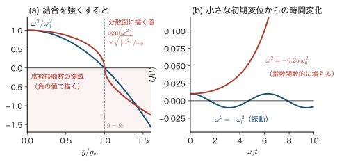
例題29.5 虚数振動数から不安定の速さを読む
付録C の機械学習ポテンシャルによる計算（C.7 節）では，立方晶 $\mathrm{SrTiO_3}$ の $R$ 点の八面体回転のモードに $\nu=1.09i\,\mathrm{THz}$（図では $-1.09\,\mathrm{THz}$）の虚数振動数が出る．(1) $\abs{\omega}=2\pi\abs{\nu}$ と，変位が $\ee$ 倍になる時間 $1/\abs{\omega}$ を求めよ．(2) 変位が $10^{-3}$ 倍の大きさから $1$ 倍まで育つのにかかる時間を見積もれ（$\ee^{-\abs{\omega}t}$ の項は無視する）．
解答．(1) $$\abs{\omega}=2\pi\times1.09\times10^{12}\,\mathrm{s^{-1}}=6.85\times10^{12}\,\mathrm{s^{-1}}$$，$$1/\abs{\omega}=1.46\times10^{-13}\,\mathrm{s}=0.15\,\mathrm{ps}$$．
(2) $\ee^{\abs{\omega}t}=10^3$ より $$t=\ln(10^3)/\abs{\omega}=6.91/(6.85\times10^{12}\,\mathrm{s^{-1}})=1.0\times10^{-12}\,\mathrm{s}=1.0\,\mathrm{ps}$$．
∎ 虚数振動数の大きさは「不安定の速さ」である．$1\,\mathrm{ps}$ のうちに変位は $1000$ 倍に育つ．ただしこれは $0\,\mathrm{K}$ の調和近似での話で，実際の $\mathrm{SrTiO_3}$ は約 $105\,\mathrm{K}$ より上では立方晶のまま安定である（29.3.4 項）．
29.3.2 第一原理フォノン計算の読み方
実際の結晶では，歪みの座標は 1 つではない．すべての原子の変位 $u_{l\alpha}$ に対して，断熱ポテンシャルの 2 階微分（力定数）$\Phi^{(2)}_{l\alpha,l'\beta}=\partial^2E_0/\partial u_{l\alpha}\partial u_{l'\beta}$ を求め，第13章のとおり 動力学行列（dynamical matrix）
$$ D_{\kappa\alpha,\kappa'\beta}(\qq)=\frac{1}{\sqrt{M_\kappa M_{\kappa'}}}\sum_{l'}\Phi^{(2)}_{0\kappa\alpha,\,l'\kappa'\beta}\,\ee^{i\qq\cdot(\RR_{l'}-\RR_0)} $$（$\kappa$ は単位胞の中の原子の番号）を対角化する．固有値が $\omega^2_{\qq\nu}$，固有ベクトル $\bm e_{\qq\nu}$ が振動のパターン（各原子の動く向きと振幅比）である．式 \eqref{eq:29-Keff} を多自由度に広げると，力定数は 2 つの部分に分けられる．
第 2 項は，ある原子を動かしたとき電子が組み替わり，その組み替わった電子が別の原子に力を及ぼす，という「電子を介した力」である．第一原理計算では，有限変位法（原子を少し動かして力を計算する）でも，密度汎関数摂動論（DFPT．電子の応答を線形応答として直接計算する）でも，この 2 つの項はまとめて計算される．計算の中身は，電子の応答の項＝静的な電子格子相互作用である．
第一原理フォノン計算の結果（フォノン分散図）を読むときの約束と要点を図29.7 にまとめる．
- 描き方の慣習：$\omega^2\lt0$ のモードは，$-\sqrt{\abs{\omega^2}}$ と負の値で描く（phonopy（有限変位法でフォノンを計算する代表的なプログラム）などの既定）．分散図の 0 より下の線は「虚数振動数」と読む．
- 固有ベクトルが歪み方を教える：虚数振動数のモードの固有ベクトルの向きに原子をずらすと，エネルギーが下がる．ずらしたまま構造を緩和させると，低温相（歪んだ構造）が得られることが多い．
- 波数が超周期を教える：$\Gamma$ 点（$\qq=0$）なら単位胞は変わらず，ゾーン境界の点なら単位胞が倍（$X$，$M$，$R$ 点の場合）になる．一般の $\qq$ なら，周期 $2\pi/q$ の変調構造ができる．
- 既約表現が対称性を教える：虚数振動数のモードがどの既約表現に属するかで，低温相の空間群（同位部分群，isotropy subgroup）が決まる（第11章の群論）．
29.3.3 どの波数に出るかで何が起こるか
虚数振動数がどの $\qq$ に，どんな固有ベクトルで現れるかで，どんな構造相転移が起こるかがわかる．代表的な場合を図29.8 と表29.2 にまとめる．
| 波数 | モード | 起こること | 例 | 電子の側の原因 |
|---|---|---|---|---|
| $\Gamma$（$\qq=0$） | 極性の光学（横波） | 強誘電（自発分極） | $\mathrm{BaTiO_3}$，$\mathrm{PbTiO_3}$，$\mathrm{KNbO_3}$ | $d^0$ の $d$ と O $2p$ の混成（2 次の Jahn–Teller） |
| $\Gamma$ | 極性モード（孤立電子対） | 強誘電・反強誘電 | $\mathrm{PbTiO_3}$，$\mathrm{BiFeO_3}$ | $6s^2$ 孤立電子対と O $2p$ の混成 |
| $R$，$M$（ゾーン境界） | 八面体の回転 | 単位胞が倍の反強的な歪み | $\mathrm{SrTiO_3}$（約 $105\,\mathrm{K}$），$\mathrm{CaTiO_3}$，$\mathrm{LaAlO_3}$ | 主にイオンの大きさの不釣り合い（許容因子 $t\lt1$．下の注） |
| $2k_F$（Fermi 面で決まる） | 縦波音響・光学 | Peierls 転移，電荷密度波 | ポリアセチレン，KCP，$\mathrm{NbSe_3}$ | Fermi 面の nesting（入れ子．29.4.2 項） |
| 縮退した点の特定のモード | Jahn–Teller 型 | 協力的 Jahn–Teller 歪み，軌道秩序 | $\mathrm{LaMnO_3}$，$\mathrm{KCuF_3}$ | 縮退した $e_g$ 軌道（29.2.6 項） |
（注）許容因子（tolerance factor）$t=(r_A+r_O)/[\sqrt2\,(r_B+r_O)]$ は，A，B，O のイオン半径 $r_A$，$r_B$，$r_O$ から決まる数で，立方晶のペロブスカイトの中で A イオンと B イオンがちょうど隙間なく収まるとき 1 になる．$t\lt1$（A イオンが小さすぎる）だと八面体が傾いて隙間を埋めようとする．nesting は，Fermi 面の一部をある波数だけ平行移動すると別の部分にぴったり重なることで，29.4.2 項で説明する．
$\Gamma$ 点の極性モード — 強誘電．$\mathrm{BaTiO_3}$ や $\mathrm{PbTiO_3}$ では，$\mathrm{Ti^{4+}}$（$3d^0$）の空の $3d$ 軌道と，詰まった O $2p$ 軌道のエネルギーが近い．$\mathrm{Ti}$ が中心からずれると，両者の混成が強まって占有された状態が下がる（図29.3 の「籠の中の Ti」はこの状況の模式図）．これが式 \eqref{eq:29-Keff} の緩和の項であり，第19章で「2 次の Jahn–Teller 効果」として説明したもの（19.9.2 項）にほかならない．第19章の Cochran の描像（19.6.4 項）では，同じことを「短距離の斥力」と「長距離の双極子引力」の打ち消し合いとして見た．どちらの見方でも，大きな 2 つの寄与の差が負になることが強誘電の原因である．
ゾーン境界のモード — 八面体回転．$\mathrm{SrTiO_3}$ は約 $105\,\mathrm{K}$ で立方晶から正方晶に転移する．これは $R$ 点 $(\tfrac12,\tfrac12,\tfrac12)$ のモード（隣り合う八面体が $c$ 軸のまわりに互い違いに回る）が凍結したもので，単位胞は 2 倍になる．付録C（C.7 節）の計算では，このモードの振動数が $-1.09\,\mathrm{THz}$（虚数）として現れ，$M$ 点の回転（$c$ 方向にそろって回る）は $+1.72\,\mathrm{THz}$（実数）である．回転の不安定は主にイオンの大きさの不釣り合い（A サイトのイオンが小さいと八面体が傾いて隙間を埋める）から来るので，強誘電の場合ほど電子の混成の寄与ははっきりしない．それでも，「高対称構造の力定数行列の固有値が負」という意味は同じである．
$2k_F$ のモード — Peierls 転移と電荷密度波．金属では，Fermi 面の差し渡しの波数 $2k_F$ のフォノンが特に強く軟らかくなる．1 次元ではそれが必ず虚数振動数に達する（Peierls 不安定性）．これは次の 29.4 節で扱う．
孤立電子対．$\mathrm{Pb^{2+}}$（$6s^2$）や $\mathrm{Bi^{3+}}$（$6s^2$）を含む酸化物では，詰まった $6s$ 軌道と O $2p$ 軌道の反結合状態が，空の $6p$ 軌道と混ざって配位が片寄る．$\mathrm{PbTiO_3}$ の正方晶の大きな歪みや，$\mathrm{BiFeO_3}$ の強誘電はこの効果による．これも式 \eqref{eq:29-Keff} の型（占有状態と空の状態の混ざり）である．
29.3.4 虚数振動数があっても高温相が実在する理由
第一原理計算は，ふつう $0\,\mathrm{K}$ の調和近似で行われる．そこで高対称構造に虚数振動数が出たとしても，高温ではその構造が実際に安定に存在することが多い．立方晶 $\mathrm{BaTiO_3}$（約 $120\,{}^\circ\mathrm{C}$ 以上），立方晶 $\mathrm{SrTiO_3}$（約 $105\,\mathrm{K}$ 以上），体心立方の Ti や Zr（高温相）がその例である．
これを理解するには，二重井戸のポテンシャルに 4 次の項を入れて考える．$Q$ の 1 自由度で
$$ E(Q)=\frac12M\omega_0^2Q^2+\frac14BQ^4,\qquad \omega_0^2\lt0,\ B\gt0 $$とする（$\omega_0^2$ が $0\,\mathrm{K}$ の調和近似の値，すなわち第一原理計算の虚数振動数の 2 乗）．二重井戸の谷は $\dd E/\dd Q=M\omega_0^2Q+BQ^3=0$ から $Q_0^2=M\abs{\omega_0^2}/B$，深さは
$$ E(0)-E(Q_0)=-\frac12M\omega_0^2Q_0^2-\frac14BQ_0^4=\frac12M\abs{\omega_0^2}Q_0^2-\frac14M\abs{\omega_0^2}Q_0^2=\frac14M\abs{\omega_0^2}\,Q_0^2 $$である（2 番目の等号で $BQ_0^2=M\abs{\omega_0^2}$ を使った）．温度が上がって原子が大きく揺れると，4 次の項が「揺れの 2 乗平均」$\langle Q^2\rangle$ を通じて実効的な 2 次の係数を押し上げる．おおまかには
$$ M\omega^2(T)\simeq M\omega_0^2+3B\langle Q^2\rangle_T $$で，古典的な高温では等分配則から $\langle Q^2\rangle_T\propto k_BT$ である．係数 3 は次のように出てくる：$Q$ を平均 $\langle Q\rangle=0$ のまわりで揺れているとみなし，$Q^4$ の中の 4 つの $Q$ のうち 2 つを平均 $\langle Q^2\rangle$ で置き換える選び方が ${}_4C_2=6$ 通りあるので $Q^4\to6\langle Q^2\rangle Q^2$，したがって $\frac14BQ^4\to\frac14B\cdot6\langle Q^2\rangle Q^2=\frac12\,(3B\langle Q^2\rangle)\,Q^2$ となり，2 次の係数 $\frac12M\omega_0^2$ に $\frac12\cdot3B\langle Q^2\rangle$ が加わる（きちんとした扱いは第30章 30.8 節）．揺れが大きいほど，4 次の壁が谷底を押し上げて実効的な曲率が正に近づく．すると $\omega^2(T)$ は温度に比例して増え，ある温度 $T_c$ で負から正に変わる：
これが第19章の ソフトモード（19.6 節の Cochran 則）である．$T_c$ より上では高対称構造が（揺れながら）平均として安定で，$T_c$ に向かって振動数が 0 に近づく．$T_c$ より下では二重井戸の一方の谷に落ち，歪んだ構造の中の新しい振動（振幅モード）が実の振動数で現れる．4 次の項による安定化の導出（$Q^4$ を $6\langle Q^2\rangle Q^2$ に分解する平均場の扱い）は第30章 30.8 節で行う（30.8 節）．例題29.6 の井戸をこの平均場で扱うと，転移温度は古典的には約 $190\,\mathrm{K}$，零点振動を入れると約 $160\,\mathrm{K}$ になる（第30章 例題30.16）．図29.9 にこの様子を示す．
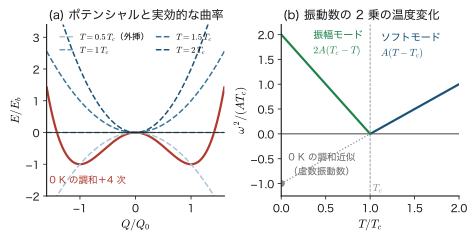
例題29.6 虚数振動数と歪みから二重井戸の深さを見積もる
ある立方晶ペロブスカイトの第一原理計算で，$\Gamma$ 点の極性モードに $\nu_0=6i\,\mathrm{THz}$ の虚数振動数が出たとする．固有ベクトルはほぼ B サイトの $\mathrm{Ti}$（質量 $47.87\,\mathrm{u}$）だけが動くものとし，その向きに構造を緩和させると $\mathrm{Ti}$ が $Q_0=0.10\,\text{Å}$ ずれた構造に落ち着いた（模型の値）．(1) 二重井戸の深さを $\frac14M\abs{\omega_0^2}Q_0^2$ で求め，meV と K で表せ．(2) 4 次の係数 $B$ を求めよ．(3) この深さと，$\mathrm{BaTiO_3}$ の立方晶–正方晶の転移温度（約 $400\,\mathrm{K}$）を比べよ．
解答．(1) $$\abs{\omega_0}=2\pi\times6\times10^{12}\,\mathrm{s^{-1}}=3.77\times10^{13}\,\mathrm{s^{-1}}$$，$$M=47.87\times1.6605\times10^{-27}\,\mathrm{kg}=7.949\times10^{-26}\,\mathrm{kg}$$ なので
$$ M\abs{\omega_0^2}=7.949\times10^{-26}\times(3.77\times10^{13})^2\,\mathrm{J/m^2}=1.130\times10^{2}\,\mathrm{J/m^2}=7.05\,\mathrm{eV/Å^2} $$ $$ E_b=\frac14\times7.05\,\mathrm{eV/Å^2}\times(0.10\,\text{Å})^2=0.0176\,\mathrm{eV}=17.6\,\mathrm{meV} $$$k_B$ で割って $$E_b/k_B=0.0176/(8.617\times10^{-5})\,\mathrm{K}=2.0\times10^2\,\mathrm{K}$$．
(2) $$B=M\abs{\omega_0^2}/Q_0^2=7.05\,\mathrm{eV/Å^2}/(0.10\,\text{Å})^2=7.1\times10^2\,\mathrm{eV/Å^4}$$．
(3) 深さ（$200\,\mathrm{K}$）と転移温度（$400\,\mathrm{K}$）は同じ桁である．
∎ 虚数振動数の大きさと歪みの大きさがわかれば，二重井戸の深さ，したがって転移温度の桁が見積もれる．ただし $T_c$ は井戸の深さだけでは決まらない．隣どうしの単位胞の歪みがどれだけそろいたがるか（単位胞間の結合）にもよる．井戸が深く単位胞間の結合が弱いと，各胞の歪みは高温でもすでに $\pm Q_0$ のどちらかに落ちていて，その向きが乱れているだけになる（秩序–無秩序型，第19章 19.4 節）．浅い井戸と強い結合のときに，図29.9 の変位型のソフトモードがきれいに見える．
例題29.7 ソフトモードの測定から転移温度を外挿する
ある物質の $\Gamma$ 点の横波光学フォノンの振動数を Raman 散乱で測ったところ，$300\,\mathrm{K}$ で $2.0\,\mathrm{THz}$，$200\,\mathrm{K}$ で $1.5\,\mathrm{THz}$ だった（模型の値）．式 \eqref{eq:29-soft} が成り立つとして，係数 $A$ と転移温度 $T_c$ を求めよ．$150\,\mathrm{K}$ での振動数を予言せよ．
解答．$\nu^2=A'(T-T_c)$（$A'=A/4\pi^2$）とおく．2 つの温度の差をとると
$$ A'=\frac{(2.0)^2-(1.5)^2}{300-200}\,\mathrm{THz^2/K}=\frac{4.00-2.25}{100}\,\mathrm{THz^2/K}=0.0175\,\mathrm{THz^2/K} $$$300\,\mathrm{K}$ の値から $$T_c=300\,\mathrm{K}-\dfrac{4.00\,\mathrm{THz^2}}{0.0175\,\mathrm{THz^2/K}}=300-229=71\,\mathrm{K}$$．$150\,\mathrm{K}$ では $$\nu=\sqrt{0.0175\times(150-71)}\,\mathrm{THz}=\sqrt{1.38}\,\mathrm{THz}=1.17\,\mathrm{THz}$$．
∎ 振動数ではなく，振動数の 2 乗を温度に対して描くと直線になり，0 との交点が $T_c$ を与える．これが実験でソフトモードを解析するときの標準的なやり方である．
動かして確かめる：二重井戸とソフトモードの温度変化
下に埋め込んだのは，シミュレーター「超伝導」のタブ ④「虚数振動数を有するフォノン ― 格子系の対称性の破れ」で，図29.9 の Landau 型の模型 $E(Q)=\frac12A(T-T_0)Q^2+\frac14BQ^4$ を動かせるようにしたものである（シミュレーターでは構造相転移の温度を $T_0$ と書く．本文の $T_c$ と同じものである）．温度 $T/T_0$ のつまみを動かすと，ポテンシャルの形（$T\gt T_0$ で単一の井戸，$T\lt T_0$ で二重井戸）と，振動数の 2 乗の温度変化（ソフトモード $\omega^2\propto T-T_0$ と振幅モード）が連動して変わる．秩序パラメーターの成分数の切り替えで「Z₂（1 成分）」を選ぶと本文の二重井戸，「U(1)（2 成分）」を選ぶと 29.2.6 項の補足のメキシコ帽の形になる．「量子ゆらぎ $T_1/T_0$」のつまみで零点振動の効果を入れると，低温で $\omega^2$ の直線が寝てきて，転移が起こらなくなる場合（$\mathrm{SrTiO_3}$ の量子常誘電．29.3.5 項）も見られる．超伝導との対応の表は，シミュレーターの解説ページの §9 にある．
29.3.5 注意 — 虚数振動数の正しい読み方と，計算の不備
注意：虚数振動数は「物質が壊れる」という意味ではない
虚数振動数が意味するのは，「計算した高対称構造は，調和近似（$0\,\mathrm{K}$，微小変位）でエネルギーの極小になっていない」ということだけである．物質が崩壊するわけでも，その相が実在しないわけでもない．実際には (i) 歪んだ低対称構造が本当の基底状態である，(ii) 高温では非調和性で高対称構造が平均として安定になる（29.3.4 項），(iii) 零点振動が大きく，量子的に高対称構造にとどまる（$\mathrm{SrTiO_3}$ の量子常誘電），のどれかである．
注意：計算の不備でも虚数振動数は出る
物理的な不安定ではないのに虚数振動数が出ることがある．次の点を確かめるまでは，物理的な結論を出さない．
- 収束不足：$\kk$ 点の網目が粗い，カットオフエネルギーが低い，構造の緩和（力と応力）が不十分．金属では Fermi 面の扱い（スメアリングの幅．Fermi 準位の占有数を少しなまらせて計算を安定にする数値的な工夫）にも敏感で，29.4 節の Kohn 異常の近くでは特に注意が要る．
- 音響総和則の破れ：結晶全体を平行移動しても力は生じないので，$\Gamma$ 点の音響モードの振動数は厳密に 0 でなければならない（音響総和則，acoustic sum rule）．数値誤差でこれが破れると，$\Gamma$ 点のごく近くで音響分枝がわずかに負になる（図29.7 の丸で囲んだ灰色の破線）．総和則を課す処理で消える．
- スーパーセルの大きさ：有限変位法では，スーパーセルに収まらない長距離の力定数が切れてしまい，補間した分散図の途中に偽の虚数振動数が出ることがある．スーパーセルを大きくして変わらないかを確かめる．
- 格子定数や汎関数：格子定数を実験値に固定したか，計算で緩和したかで結果が変わる．交換相関汎関数の選び方で，浅い二重井戸は出たり消えたりする．
確かめる一番確実な方法は，虚数振動数のモードの固有ベクトルに沿って原子をずらし，全エネルギー $E(Q)$ を直接計算することである．エネルギーが下がり二重井戸が見えれば本物，見えなければ計算の不備を疑う（シミュレーター「超伝導」の解説ページ §9 の「DFT で虚数振動数を有するフォノンを扱う手順」）．
以上が「静的な電子格子相互作用は，第一原理計算では虚数振動数を有するフォノンとして現れる」という本章の第 1 の柱である．もっと計算の具体的な手順を知りたい読者は，姉妹編『マテリアル計算科学』第1章 1.7 節（虚数振動数と二重井戸，新規強誘電体の探索）を参照してほしい．
29.4 金属の場合 — 電子感受率，Kohn 異常，Peierls 不安定性
29.4.1 組み替えは Fermi 面で起こる
29.2 節の 2 準位模型では，電子の組み替えは「詰まった準位 $\ket a$」と「空の準位 $\ket b$」の混ざりだった．金属では，詰まった状態と空の状態の境目が Fermi 面である．波数 $\qq$ の格子の歪み（静的なフォノン）は，詰まった状態 $\kk$（$E(\kk)\lt E_F$）と空の状態 $\kk+\qq$（$E(\kk+\qq)\gt E_F$）を混ぜる．混ぜ合わされる組は無数にあり，それぞれが式 \eqref{eq:29-Keff} の第 2 項のような「力定数を下げる」寄与をする．その分母は 2 つの状態のエネルギー差 $E(\kk+\qq)-E(\kk)$ である．Fermi 面のすぐ近くにはエネルギー差がいくらでも小さい組があるので，金属では電子の組み替えの効果が特に大きくなりうる．
これを計算したのが第35章 35.4 節である（35.4.2 項の導出）．結果を第35章の記号のまま再掲する．1 次元の鎖（格子定数 $a$，イオンの質量 $M$）で，電子の応答を除いた「裸の」振動数を $\Omega_q$，電子の応答まで含めた「くりこまれた」振動数を $\omega_q$ とすると
である．記号を 1 つずつ説明する．
- $L=N_sa$ は鎖の長さ（$N_s$ はサイトの数）である．$\chi(q)$ は $\frac1L$ を付けて「単位長さあたり」の量として定義してある．
- $\sum_{k,\sigma}$ は電子の波数 $k$ とスピン $\sigma$ についての和である．格子の歪みはスピンを区別しないので，上向きと下向きの電子が同じように応答し，スピンの和は因子 2 を与える．
- $f$ は Fermi 分布である．分子 $f(E_k)-f(E_{k+q})$ と分母 $E_{k+q}-E_k$ はいつも同じ符号をもつ（$E_{k+q}\gt E_k$ なら $f(E_k)\gt f(E_{k+q})$）ので，各項は正で，$\chi(q)\gt0$ である．
- $g$ は第35章で定義した電子格子結合の行列要素（原子が零点振動の振幅だけ動いたときの電子のエネルギーの変化）である．$\chi$ の次元は「1/(エネルギー×長さ)」なので，$2g^2\chi/\hbar\Omega_q$ が無次元になるには，$g^2$ は「エネルギー$^2$×長さ」の次元をもつ（第35章では $g^2\equiv a\hbar\mathcal{G}^2/2M\Omega_q$ と，格子定数 $a$ を 1 つ含めて定義している）．
$\chi(q)$ は 電子感受率（静的な Lindhard（リンドハルト）関数）である．$\chi(q)$ は「波数 $q$ のポテンシャルをかけたとき，電子の密度がどれだけ応答するか」を表す（ポテンシャル $V_q$ に対して密度が $\delta n_q=-\chi(q)V_q$ だけ変わる）．
物理的意味：Kohn 異常の式は 2 準位模型の式と同じ構造をもつ
式 \eqref{eq:29-kohn} を 2 準位模型の式 \eqref{eq:29-Keff2} と並べると，表29.3 のように対応する．どちらも「格子の硬さ」から「電子の組み替えによる軟化（2 次摂動，必ず負）」を引いたものである．金属では，軟化の大きさが $\chi(q)$ という 1 つの関数にまとめられ，その $q$ 依存性がどのフォノンが軟らかくなるかを決める．
| 2 準位模型 | 金属 | |
|---|---|---|
| 格子の硬さ | $K$ | $M\Omega_q^2$ |
| 混ざる組 | $\ket a$ と $\ket b$ の 1 組 | 詰まった $k$ と空の $k+q$ のすべての組 |
| エネルギー差 | $2\Delta_0$ | $E_{k+q}-E_k$（Fermi 面の近くで 0 に近づく） |
| 電子の寄与 | $-g^2/\Delta_0$ | $\chi(q)$ に比例して負 |
| 不安定の条件 | $g^2\gt K\Delta_0$ | $2g^2\chi(q)/\hbar\Omega_q\gt1$ |
注意：教材によって符号と記号が違う
本書（第35章と本節）は $\chi(q)\gt0$ とし，裸の振動数を $\Omega_q$，くりこまれた振動数を $\omega_q$ と書く．姉妹編『線形応答理論』の第10章（10.1 節）では静的な Lindhard 関数を $\chi^0(q,0)=-N(\epsilon_F)F(x)\lt0$ と負の量として定義し，第14章ではフォノンの裸の振動数を $\omega$，くりこまれた振動数を $\Omega$ と，本書と逆の文字で書いている．両方を読むときは，符号と文字を読み替えてほしい．
29.4.2 $2k_F$ の特異性 — Fermi 面の差し渡し
$\chi(q)$ の $q$ 依存性で決定的なのは，$q=2k_F$（Fermi 球の直径）での特異性である．$q\lt2k_F$ なら，Fermi 面の上の点 $\kk$ と Fermi 面の上の点 $\kk+\qq$ を結ぶことができるので，エネルギー差がいくらでも小さい組（詰まった状態と空の状態の組）が見つかる．$q\gt2k_F$ ではそのような組がなく，どの組にも有限のエネルギー差が要る．この境目で $\chi(q)$ の振る舞いが急に変わる．どれだけ急に変わるかは次元による（図29.10(c)）．
- 3 次元：$\chi(q)$ は $q=2k_F$ で連続だが，傾き $\dd\chi/\dd q$ が対数的に発散する．$q=2k_F$ でエネルギー差の小さい組をつくれるのは，Fermi 球の「直径の両端」の付近だけだからである．
- 1 次元：Fermi 面は 2 点 $\pm k_F$ だけで，$q=2k_F$ だけずらすと左の Fermi 点が右の Fermi 点にぴったり重なる．Fermi 点の近くのすべての状態が，エネルギー差 0 に近い組を作る（nesting，入れ子）．その結果 $\chi(2k_F)$ そのものが対数的に発散する（$T=0$）．
図29.10(c) に，自由電子の $\chi(q)$ を 1・2・3 次元で並べる．第35章 35.5 節（35.5.2 項）に完全な計算がある．ここではその結果の形だけを使う．$\chi(q)$ が大きい波数ほど，式 \eqref{eq:29-kohn} の角かっこが小さくなり，フォノンが軟らかくなる（図29.10(d)）．1 次元では $q=2k_F$ で $\chi$ が発散するので，結合がどんなに弱くても角かっこが 0 を切る．3 次元では $\chi$ は有限のままで，分散曲線に折れが残るだけである．
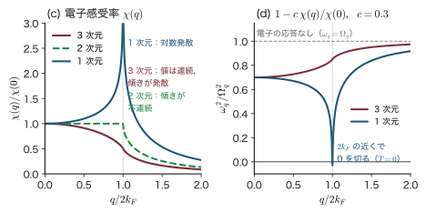
29.4.3 3 次元の金属 — Kohn 異常
Kohn は 1959 年，金属のフォノンの分散曲線は $\chi(q)$ の特異性を映して $q=2k_F$ で折れをもつはずだと指摘した．これを Kohn 異常（Kohn anomaly）という．実際の金属の Fermi 面は球ではないので，折れは「$\qq+\GG$（$\GG$ は逆格子ベクトル）が Fermi 面の上の，接平面が平行な 2 点を結ぶ」波数に現れる．1960 年代の初めに Brockhouse（ブロックハウス）らが Pb の中性子非弾性散乱（第13章 13.9 節）でこの折れを観測し，フォノンの分散が Fermi 面の形を映すことが確かめられた．
例題29.8 Pb で Kohn 異常が現れる波数
Pb は面心立方（格子定数 $a=4.95\,\text{Å}$）で，原子 1 個あたり 4 個の価電子を出す．(1) 自由電子模型で $k_F$ と $2k_F$ を求め，$2\pi/a$ を単位に表せ．(2) $[100]$ 方向の波数 $\qq=\zeta(2\pi/a)(1,0,0)$（$0\le\zeta\le1$．$\zeta=1$ が $X$ 点）のうち，$\abs{\qq+\GG}=2k_F$ となる $\zeta$ を求めよ．逆格子ベクトルは $\GG=(2\pi/a)(h,k,l)$ で，面心立方では $h,k,l$ がすべて偶数かすべて奇数のものである．
解答．(1) 単位胞（体積 $a^3$）に原子 4 個なので，電子密度は $$n=4\times4/a^3=16/(4.95\times10^{-10}\,\mathrm{m})^3=1.319\times10^{29}\,\mathrm{m^{-3}}$$．
$$ k_F=(3\pi^2n)^{1/3}=(3\times9.870\times1.319\times10^{29})^{1/3}\,\mathrm{m^{-1}}=(3.906\times10^{30})^{1/3}\,\mathrm{m^{-1}}=1.575\,\text{Å}^{-1} $$$2k_F=3.150\,\text{Å}^{-1}$．$2\pi/a=6.2832/4.95\,\text{Å}^{-1}=1.269\,\text{Å}^{-1}$ なので，$2k_F=2.481\times(2\pi/a)$．
(2) $2k_F$ は第 1 Brillouin 域（$\Gamma$ から $X$ まで $1\times2\pi/a$）より大きいので，$\GG$ を足した $\abs{\qq+\GG}$ で探す．$\GG=(2\pi/a)(2,0,0)$ では $\abs{\qq+\GG}=(2\pi/a)(\zeta+2)$ なので $\zeta+2=2.481$，$\zeta=0.48$．$\GG=(2\pi/a)(1,1,1)$ では $\abs{\qq+\GG}=(2\pi/a)\sqrt{(\zeta+1)^2+2}$ なので $(\zeta+1)^2=2.481^2-2=4.156$，$\zeta=1.04$ で，範囲（$\zeta\le1$）のわずかに外になる．
∎ 自由電子模型では，$[100]$ 方向の $\Gamma$–$X$ のほぼ中央 $\zeta\approx0.48$ に Kohn 異常が期待される．1 つの方向にも，異なる $\GG$ に対応して複数の折れが現れうる．実測の折れの位置と比べることで，自由電子模型からの Fermi 面のずれがわかる．
29.4.4 1 次元の金属 — Peierls 不安定性
1 次元では $\chi(2k_F)$ が温度 $T$ で丸められた対数 $\chi(2k_F,T)=N(0)\ln(1.134\Lambda/k_BT)$ になる（第35章 35.4.4 項．$N(0)$ はこの章の 1 次元の 1 スピンあたり・単位長さあたりの状態密度，$\Lambda$ はバンドを線形化できるエネルギーの幅）．これを式 \eqref{eq:29-kohn} に入れると，結合定数 $\lambda\equiv2g^2N(0)/\hbar\Omega_{2k_F}$ を使って
$$ \omega_{2k_F}^2(T)=\Omega_{2k_F}^2\left[1-\lambda\ln\frac{1.134\Lambda}{k_BT}\right]=\lambda\,\Omega_{2k_F}^2\ln\frac{T}{T_P}, \qquad k_BT_P=1.134\,\Lambda\,\ee^{-1/\lambda} $$となる（第35章 35.4.4 項の導出）．温度を下げると $2k_F$ のフォノンはどんどん軟らかくなり，$T=T_P$ でちょうど 0 になる．$T_P$ より下では $2k_F$ のフォノンが凍りついて，周期 $\pi/k_F$ の静的な歪み（電荷密度波，CDW）ができ，Fermi 面にギャップが開いて金属は絶縁体になる．これが Peierls 転移である．$\ln(1/T)$ は $T\to0$ でいくらでも大きくなるので，$\lambda$ がどんなに小さくても，どこかの温度で必ず不安定になる（Peierls の定理，第35章 定理35.1）．
この結論を 29.2 節の言葉で言い直すと次のようになる．1 次元の金属では，Fermi 点 $k_F$ と $-k_F$ の状態がエネルギーの等しい（縮退した）組を作っている．$2k_F$ の歪みはこの縮退を 1 次で割る．これは 縮退した準位の Jahn–Teller 効果（$\Delta_0\to0$ の極限）と同じ状況である．Fermi 点から少し離れた組は「準位の間隔 $2\Delta_0$ が小さい 2 準位」で，擬 Jahn–Teller 効果で寄与する．間隔の小さい組が一定の密度 $N(0)$ で並んでいるので，それぞれの寄与 $\propto1/\Delta_0$ を足し上げると $\int\dd\varepsilon/\varepsilon$ の対数になる．静的な電子格子相互作用の 3 つの例——擬 Jahn–Teller，Jahn–Teller，Peierls——は，電子の組み替えが力定数を下げる（定理29.1）という 1 つの原理の 3 つの現れである．
29.4.5 2 次元・3 次元の電荷密度波と，強い結合によるフォノンの軟化
2 次元の電荷密度波．層状の $2H$-$\mathrm{NbSe_2}$（約 $33\,\mathrm{K}$ で格子のほぼ 3 倍の周期の CDW）や $1T$-$\mathrm{TaS_2}$ では，層の中に CDW ができる（第35章 35.5.6 項）．2 次元の Fermi 面の nesting は 1 次元ほど完全ではなく，第一原理計算で $\chi(\qq)$ を求めても CDW の波数に目立ったピークがないことがある．このとき CDW の波数を決めるのは，$\chi(\qq)$ よりも結合 $g_\qq$ の波数依存性であるという議論がある（Johannes と Mazin，2008 年など）．式 \eqref{eq:29-kohn} の「$g^2\times\chi$」の両方の因子が効くということで，「CDW は nesting で決まる」という描像は 1 次元では正しいが，2・3 次元では目安にとどまる．
強い結合によるフォノンの軟化．3 次元の金属でも，結合が特に強いフォノンは目立って軟らかくなる．超伝導体の $\mathrm{MgB_2}$ では，ホウ素の面内の伸縮振動（$E_{2g}$ モード）がホウ素の $\sigma$ 結合のバンドと強く結合し，その振動数は結合を除いた値よりかなり低く，線幅も大きい．この 1 つのモードが $\mathrm{MgB_2}$ の高い $T_c$（約 $39\,\mathrm{K}$）の主な担い手である（29.8 節）．超伝導に有利な「強い電子格子結合」は，同時にフォノンを軟らかくし，行き過ぎれば虚数振動数（構造不安定）を生む．強い結合による高い $T_c$ と構造の安定性は，互いに競合する（29.8.4 項）．
29.5 動的な電子格子相互作用 I — 電子がフォノンの衣を着る
29.5.1 現象 — 金属の電子は少し重い
ここからは本章の第 2 の柱，動的な電子格子相互作用に移る．まず実験事実を 3 つ挙げる．
- 電子比熱：金属の低温の比熱 $C=\gamma T$ の係数 $\gamma$ は Fermi 準位の状態密度に比例する（第15章 15.5 節）．実測の $\gamma$ は，バンド計算の状態密度から予想される値より大きいことが多い．Pb では約 2.5 倍，Hg や Nb でも 2 倍前後になる（表29.4 の $1+\lambda$．例題29.9）．
- de Haas–van Alphen 効果の質量：磁場中の振動の温度依存性から求めた有効質量（サイクロトロン質量．第18章 18.6 節）も，バンド計算の値より大きい．
- ARPES のキンク：角度分解光電子分光（ARPES，第18章 18.8 節）でバンドの分散 $E(\kk)$ を Fermi 準位の近くまで測ると，Fermi 準位から数十 meV（フォノンのエネルギー）のところで分散の傾きが急に変わる「折れ」（キンク，kink）が見える．Fermi 準位のすぐ近くでは分散が寝ていて（速度が遅く，質量が重く），フォノンのエネルギーより深いところでは本来のバンドの傾きに戻る．
3 つとも「Fermi 準位の近くの電子は，バンド計算が予言するより重い」ことを示している．しかも重くなるのは，Fermi 準位からフォノンのエネルギー程度以内の電子だけである．これが電子格子相互作用による 質量増強（mass enhancement）である．
29.5.2 仮想的なフォノンの放出と再吸収 — 自己エネルギー
電子が結晶の中を進むとき，式 \eqref{eq:29-Hep} の結合によってフォノンを出し，すぐにそれを吸い戻す，という過程が絶えず起こる（図29.11）．途中の状態（電子 $\kk-\qq$ とフォノン $\qq$）はエネルギーを保存しない「仮想的な」状態でもよい．量子力学の 2 次摂動論では，こうした仮想過程が状態のエネルギーをずらす．第27章 27.5 節で導入した言葉では，このずれが 自己エネルギー（self-energy）$\Sigma$ で，その実部がエネルギーのずれ，虚部が寿命の逆数を与える（第27章 27.5 節）．
- 実部 $\mathrm{Re}\,\Sigma$：途中の状態が仮想的な場合．2 次摂動のエネルギーのずれ「$\abs{\text{行列要素}}^2/(\text{エネルギー差})$」の和．電子の分散を変え，質量を増やす．
- 虚部 $\mathrm{Im}\,\Sigma$：途中の状態にエネルギーを保存して実際に移れる場合（実際にフォノンを放出・吸収して別の状態に散乱される）．Fermi の黄金律の遷移確率で，状態の寿命 $\tau$ を決める（$\abs{\mathrm{Im}\,\Sigma}=\hbar/2\tau$）．電気抵抗の原因になる．
電子が「フォノンの雲をまとって進む」ので，これを「電子がフォノンの衣を着る」と表現する．衣を着た電子が 準粒子（quasiparticle）である．
29.5.3 質量増強 $m^*=m_b(1+\lambda)$ の導出
最も簡単な模型で $\mathrm{Re}\,\Sigma$ を計算する．フォノンはすべて同じ角振動数 $\omega_E$ をもつ（Einstein 模型），結合 $\abs{g}^2$ は一定，電子の状態密度は Fermi 準位の近くで一定値 $N(0)$（1 スピンあたり，結晶全体）とする．温度は $T=0$ とする．
導出：Einstein 模型の電子の自己エネルギー
ステップ1：電子を 1 個足したときのエネルギーの 2 次摂動．Fermi 海（$\xi_{\kk'}\lt0$ の状態がすべて詰まった状態）に，エネルギー $\xi_\kk\gt0$ の電子を 1 個足す．この電子のエネルギーのずれには 2 種類の寄与がある．
(i) 電子 $\kk$ 自身がフォノンを放出して空いた状態 $\kk'$（$\xi_{\kk'}\gt0$）へ仮想的に移る過程．途中の状態のエネルギーは $\xi_{\kk'}+\hbar\omega_E$ なので，2 次摂動のずれは
$$ \sum_{\kk'}\frac{\abs{g}^2\,(1-f_{\kk'})}{\xi_\kk-\xi_{\kk'}-\hbar\omega_E} $$（$1-f_{\kk'}$ は $\kk'$ が空いているときだけ移れることを表す．$T=0$ では $\xi_{\kk'}\gt0$ で 1，$\xi_{\kk'}\lt0$ で 0）．
(ii) Fermi 海の電子 $\kk'$（$\xi_{\kk'}\lt0$）がフォノンを放出して状態 $\kk$ に仮想的に移る過程．電子 $\kk$ を足す前は，この過程が Fermi 海のエネルギーを $\abs{g}^2/(\xi_{\kk'}-\xi_\kk-\hbar\omega_E)$ だけ下げていた．電子 $\kk$ を足すと，状態 $\kk$ が埋まるので Pauli 原理でこの過程が禁じられ，その分だけエネルギーが上がる．上がり分を電子 $\kk$ のエネルギーに含めると
$$ -\sum_{\kk'}\frac{\abs{g}^2\,f_{\kk'}}{\xi_{\kk'}-\xi_\kk-\hbar\omega_E}=\sum_{\kk'}\frac{\abs{g}^2\,f_{\kk'}}{\xi_\kk-\xi_{\kk'}+\hbar\omega_E} $$(i) と (ii) を足したものが自己エネルギーの実部である．
$$ \mathrm{Re}\,\Sigma(\xi_\kk)=\abs{g}^2\sum_{\kk'}\left[\frac{1-f_{\kk'}}{\xi_\kk-\xi_{\kk'}-\hbar\omega_E}+\frac{f_{\kk'}}{\xi_\kk-\xi_{\kk'}+\hbar\omega_E}\right] $$（$\xi_\kk\lt0$ の正孔についても同じ式になる．フォノンはスピンを変えないので $\kk'$ の和にスピンは含めない．）(i) と (ii) の 2 つの過程の図を図29.11(a)(b) に並べた．
ステップ2：エネルギーの積分に直す．$\sum_{\kk'}\to N(0)\int\dd\xi'$ とし，バンドの幅の目安 $W$ で $-W\lt\xi'\lt W$ に切る．$\xi\equiv\xi_\kk$，$\hbar\omega_E\equiv\varepsilon_E$ と略記する．
$$ \frac{\mathrm{Re}\,\Sigma(\xi)}{\abs{g}^2N(0)}=\int_0^W\frac{\dd\xi'}{\xi-\xi'-\varepsilon_E}+\int_{-W}^0\frac{\dd\xi'}{\xi-\xi'+\varepsilon_E} $$ステップ3：積分する．$\dfrac{\dd}{\dd\xi'}\ln\abs{\xi'-\xi+\varepsilon_E}=\dfrac{1}{\xi'-\xi+\varepsilon_E}$ なので，第 1 項は
$$ \int_0^W\frac{\dd\xi'}{\xi-\xi'-\varepsilon_E}=-\Bigl[\ln\abs{\xi'-\xi+\varepsilon_E}\Bigr]_0^W=-\ln\left|\frac{W-\xi+\varepsilon_E}{\varepsilon_E-\xi}\right| $$同様に $\dfrac{\dd}{\dd\xi'}\ln\abs{\xi-\xi'+\varepsilon_E}=\dfrac{-1}{\xi-\xi'+\varepsilon_E}$ なので，第 2 項は
$$ \int_{-W}^0\frac{\dd\xi'}{\xi-\xi'+\varepsilon_E}=-\Bigl[\ln\abs{\xi-\xi'+\varepsilon_E}\Bigr]_{-W}^0=\ln\left|\frac{\xi+W+\varepsilon_E}{\xi+\varepsilon_E}\right| $$ステップ4：まとめる．2 つを足して対数の中身を整理すると
$$ \frac{\mathrm{Re}\,\Sigma(\xi)}{\abs{g}^2N(0)}=\ln\frac{W+\varepsilon_E+\xi}{W+\varepsilon_E-\xi}+\ln\left|\frac{\varepsilon_E-\xi}{\varepsilon_E+\xi}\right| $$第 1 項は $\abs{\xi}\ll W$ で $2\xi/W$ 程度の小さな量で，バンドの形をわずかに変えるだけである（バンド計算に含まれているとみなす）．第 2 項が Fermi 準位の近くで効く本質的な部分である．∎
なぜ：自己エネルギーが波数 $\kk$ によらず，エネルギー $\xi$ だけで決まってよいのか（Migdal の議論）
上の導出では，$\mathrm{Re}\,\Sigma$ を電子のエネルギー $\xi$ だけの関数として求めた．これは，フォノンのエネルギー $\hbar\omega_D$ が Fermi エネルギー $E_F$ よりずっと小さい（$\hbar\omega_D/E_F\sim10^{-2}$，例題29.1）ことによる．$\Sigma$ はエネルギーの方向には $\hbar\omega_D$ 程度の幅で大きく変わるが，波数の方向に変わるには，電子のエネルギーにして $E_F$ 程度の距離を動かなければならない（第27章 27.5.4 項）．Migdal（ミグダル）は 1958 年，同じ理由で，図29.11 の頂点そのものに対する補正（頂点補正）も $\hbar\omega_D/E_F\sim\sqrt{m/M}$ の程度に小さいことを示した．このため，金属の電子格子相互作用は，結合 $\lambda$ が 1 を超える強結合でも，図29.11 の形の自己エネルギーだけでよく記述できる（Migdal の定理．29.8 節の Eliashberg 理論の土台）．逆に，$\hbar\omega_D$ が $E_F$ と同じ程度になる系（キャリアの少ない半導体のポーラロン，第31章）では，この簡単化は使えない．
式 \eqref{eq:29-ReSigma} の $\lambda$ が，29.1.5 項で予告した無次元の電子格子結合定数である（Einstein 模型の場合．第27章 27.5.4 項と 27.7.1 項の $\lambda$ と同じ定義である）．この式から次のことがわかる．
- Fermi 準位のすぐ近く（$\abs\xi\ll\hbar\omega_E$）：$\ln\dfrac{1-x}{1+x}\simeq-2x$（$x=\xi/\hbar\omega_E$）より $\mathrm{Re}\,\Sigma\simeq\dfrac{\lambda\hbar\omega_E}{2}\times\left(-\dfrac{2\xi}{\hbar\omega_E}\right)=-\lambda\xi$．自己エネルギーは $\xi$ に比例し，向きは常に Fermi 準位に引き寄せる側である．
- Fermi 準位から遠く（$\abs\xi\gg\hbar\omega_E$）：$\ln\abs{(1-x)/(1+x)}\simeq-2/x\to0$．自己エネルギーは消え，バンドは本来の分散に戻る．
準粒子のエネルギー $E$ は，もとのバンドのエネルギー $\xi_\kk$ に自己エネルギーを足したものだが，自己エネルギーは準粒子自身のエネルギーで評価する：$E=\xi_\kk+\mathrm{Re}\,\Sigma(E)$．Fermi 準位の近くで $\mathrm{Re}\,\Sigma(E)\simeq-\lambda E$ を入れると
$$ E=\xi_\kk-\lambda E\qquad\Longrightarrow\qquad E=\frac{\xi_\kk}{1+\lambda} $$である．分散の傾き（速度）が $1/(1+\lambda)$ 倍になるので，有効質量は $(1+\lambda)$ 倍になる．
ここで $m_b$，$\gamma_b$ はバンド計算（電子格子相互作用を含まない）の質量と比熱係数である．状態密度が $(1+\lambda)$ 倍になるのは，同じエネルギーの幅に詰まる $\kk$ の数が $(1+\lambda)$ 倍になるからで，そのまま電子比熱の係数 $\gamma$ を $(1+\lambda)$ 倍にする．この質量増強は Fermi 準位から $\hbar\omega_E$（一般には $\hbar\omega_D$）以内でだけ起こり，それより深いところではバンドの傾きは元に戻る．その境目が ARPES で見える キンク である（図29.12）．
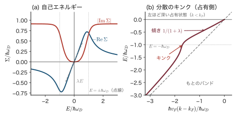
実際の物質の $\lambda$ の目安を表29.4 に示す．比熱の増強，超伝導の転移温度（29.8 節），トンネル分光などから求めた値で，求め方によって 1〜2 割の幅がある（求め方は 29.8.2 項）．
| 物質 | $\lambda$ | $T_c$（K） | 備考 |
|---|---|---|---|
| Na，K | $0.1$〜$0.2$ 程度 | —（超伝導にならない） | アルカリ金属．結合が弱い |
| Cu，Ag，Au | $0.1$〜$0.15$ 程度 | —（超伝導にならない） | 貴金属．電気抵抗は小さい |
| Al | 約 $0.4$ | $1.14$ | 弱結合の BCS 超伝導体の代表 |
| Sn，In | $0.7$〜$0.8$ 程度 | $3.72$，$3.40$ | |
| Nb | $0.8$〜$1.2$ 程度 | $9.50$ | 常圧の元素で最も高い $T_c$ |
| Pb，Hg | 約 $1.5$ | $7.19$，$4.15$ | 軟らかい格子．強結合 |
| $\mathrm{MgB_2}$ | 約 $0.7$（平均） | $39$ | 特定のモードに強く結合（29.8 節） |
例題29.9 結合定数から質量と比熱の増強を見積もる
Pb は原子 1 個あたり 4 個の価電子をもつ．(1) 例題29.8 の電子密度 $n=1.319\times10^{29}\,\mathrm{m^{-3}}$（Fermi 波数 $k_F=1.575\,\text{Å}^{-1}$）を使って自由電子模型の Fermi エネルギー $E_F$ と電子比熱係数 $\gamma_{\rm free}=\dfrac{\pi^2}{2}\dfrac{zN_Ak_B^2}{E_F}$（1 mol の原子あたり．$z=4$ は原子 1 個あたりの電子数）を求めよ．(2) 実測の $\gamma$ は約 $3.0\,\mathrm{mJ/(mol\,K^2)}$ である．$\lambda=1.55$ とすると，電子格子相互作用を除いた「バンドの」比熱係数 $\gamma_b$ はいくらか．(3) Fermi 準位での準粒子の速度は，バンドの速度の何倍か．
解答．(1) $k_F=1.575\times10^{10}\,\mathrm{m^{-1}}$（例題29.8）より
$$ E_F=\frac{\hbar^2k_F^2}{2m}=\frac{(1.0546\times10^{-34})^2\times(1.575\times10^{10})^2}{2\times9.109\times10^{-31}}\,\mathrm{J}=1.514\times10^{-18}\,\mathrm{J}=9.45\,\mathrm{eV} $$ $$ \gamma_{\rm free}=\frac{\pi^2}{2}\times\frac{4\times6.022\times10^{23}\times(1.381\times10^{-23})^2}{1.514\times10^{-18}}\,\mathrm{J/(mol\,K^2)}=1.50\times10^{-3}\,\mathrm{J/(mol\,K^2)} $$(2) 式 \eqref{eq:29-mstar} より $$\gamma_b=\gamma/(1+\lambda)=3.0/2.55\,\mathrm{mJ/(mol\,K^2)}=1.18\,\mathrm{mJ/(mol\,K^2)}$$．
(3) $v^*/v_b=1/(1+\lambda)=1/2.55=0.39$．
∎ 実測の $\gamma$ は自由電子の値の約 2 倍だが，その中身は「バンド構造による状態密度の変化（$\gamma_b/\gamma_{\rm free}\approx0.8$）」と「電子格子相互作用による増強（$1+\lambda=2.55$）」の積である．比熱だけではこの 2 つを分けられないので，バンド計算（$\gamma_b$）と比べて初めて $\lambda$ が求まる．Fermi 準位の近くの Pb の電子は，フォノンの衣のためにバンドの速度の 4 割の速さでしか進まない．
29.5.4 虚部 — 寿命と電気抵抗
途中の状態にエネルギーを保存して移れるときは，電子は実際にフォノンを放出・吸収して別の状態に散乱される．その頻度は Fermi の黄金律で与えられる．Einstein 模型で，Fermi 準位の上の電子の散乱率を求めよう．
導出：高温の散乱率 $\hbar/\tau=2\pi\lambda k_BT$
ステップ1：放出と吸収．Fermi の黄金律（姉妹編『量子力学』第51章 51.2 節）より，状態 $\kk$ の電子がフォノンを吸収して $\kk'$ に移る率は，フォノンの数 $n=n(\omega_E)$ に比例して
$$ \frac{2\pi}{\hbar}\sum_{\kk'}\abs{g}^2\,n\,(1-f_{\kk'})\,\delta(\xi_{\kk'}-\xi_\kk-\hbar\omega_E) $$フォノンを放出して移る率は，$n+1$ に比例して（誘導放出と自然放出）
$$ \frac{2\pi}{\hbar}\sum_{\kk'}\abs{g}^2\,(n+1)\,(1-f_{\kk'})\,\delta(\xi_{\kk'}-\xi_\kk+\hbar\omega_E) $$である．$\abs g^2$ の前の因子 $n$ と $n+1$ は，フォノンの生成・消滅演算子の行列要素 $\bra{n-1}a\ket{n}=\sqrt n$，$\bra{n+1}a^\dagger\ket{n}=\sqrt{n+1}$ の 2 乗から来る（第27章 27.4 節）．
ステップ2：$\kk'$ の和をとる．$\sum_{\kk'}\to N(0)\int\dd\xi'$ とするとデルタ関数で積分が終わり，Fermi 準位の電子（$\xi_\kk=0$）では
$$ \frac1\tau=\frac{2\pi}{\hbar}\abs{g}^2N(0)\Bigl[n\,\bigl(1-f(\hbar\omega_E)\bigr)+(n+1)\bigl(1-f(-\hbar\omega_E)\bigr)\Bigr] $$$1-f(-x)=f(x)$ を使うと，角かっこは $n\bigl(1-f(\hbar\omega_E)\bigr)+(n+1)f(\hbar\omega_E)=n+f(\hbar\omega_E)$．これが状態 $\kk$ から「出ていく」率 $1/\tau_{\rm out}$ である．高温（ステップ4）ではこれは $\hbar/\tau_{\rm out}\simeq\pi\lambda k_BT$ になる．
ステップ3：入ってくる率を足す．ステップ2の「出ていく率」だけでは，最後の答えはその半分になってしまう．状態 $\kk$ の占有数のずれ（平衡からのずれ）が元に戻る率には，他の状態の電子が $\kk$ に「入ってくる」率も同じように効く（Boltzmann 方程式の衝突項を平衡のまわりで 1 次まで展開すると，出ていく率と入ってくる率の和が緩和率になる．第21章 21.4 節）．$\xi_\kk=0$ に入ってくるのは，$\hbar\omega_E$ 上の電子がフォノンを放出して落ちてくる過程（$f(\hbar\omega_E)(n+1)$）と，$\hbar\omega_E$ 下の電子がフォノンを吸収して上がってくる過程（$f(-\hbar\omega_E)\,n=(1-f(\hbar\omega_E))\,n$）で，和は $n+f(\hbar\omega_E)$ になる．出ていく率と合わせて
$$ \frac1\tau=\frac{2\pi}{\hbar}\abs{g}^2N(0)\cdot2\bigl[n+f(\hbar\omega_E)\bigr] $$自己エネルギーの言葉でいえば，$\abs{\mathrm{Im}\,\Sigma}$ には「電子が出ていく過程」と「電子が入ってくる過程（正孔が出ていく過程）」の両方が入っていて，高温で $\abs{\mathrm{Im}\,\Sigma}\simeq\pi\lambda k_BT$ である．29.5.2 項の関係 $\abs{\mathrm{Im}\,\Sigma}=\hbar/2\tau$ の $\tau$ は，このように出入りの両方を合わせた寿命で，$\hbar/\tau=2\abs{\mathrm{Im}\,\Sigma}\simeq2\pi\lambda k_BT$ となる．以下のステップ4はこれを確かめる計算である．
$T=0$ では $n=0$，$f(\hbar\omega_E)=0$ なので，Fermi 準位の電子は散乱されない（$\abs{\xi_\kk}\lt\hbar\omega_E$ の電子は，放出できるフォノンも吸収できるフォノンもない）．
ステップ4：高温の極限．$k_BT\gg\hbar\omega_E$ では $n=1/(\ee^{\hbar\omega_E/k_BT}-1)\simeq k_BT/\hbar\omega_E\gg1$ で，$f(\hbar\omega_E)\simeq\frac12$ は $n$ に比べて無視できる．
$$ \frac1\tau\simeq\frac{2\pi}{\hbar}\abs{g}^2N(0)\cdot\frac{2k_BT}{\hbar\omega_E}=\frac{2\pi}{\hbar}\cdot\frac{2N(0)\abs{g}^2}{\hbar\omega_E}\cdot k_BT $$$\lambda=2N(0)\abs g^2/\hbar\omega_E$（式 \eqref{eq:29-ReSigma}）を使うと次の式を得る．∎
式 \eqref{eq:29-tau} は Einstein 模型で導いたが，一般のフォノンでも $k_BT\gg\hbar\omega_D$ なら同じ形になる（$\lambda$ は式 \eqref{eq:29-lambda} の一般の定義）．この式は，質量増強を決める $\lambda$ と，高温の散乱率を決める $\lambda$ が同じ量であることを示している．自己エネルギーの実部と虚部は，同じ図29.11 から出てくるからである．電気抵抗を決めるのは，散乱で「運動量がどれだけ失われるか」の重み $1-\cos\theta$（$\theta$ は散乱角．第22章 22.1.5 項）を付けた輸送の散乱率で，そのとき $\lambda$ は輸送の結合定数 $\lambda_{\rm tr}$ に置き換わる．多くの金属では $\lambda_{\rm tr}\approx\lambda$ である．Drude の式（第15章 15.6 節）$\rho=m_b/ne^2\tau$ に入れると，高温の抵抗率は
$$ \rho(T)=\frac{m_b}{ne^2}\cdot\frac{2\pi\lambda_{\rm tr}k_BT}{\hbar}\ \propto\ T $$となり，温度に比例する．金属の抵抗率が室温付近で温度にほぼ比例して増えるのはこのためである．
例題29.10 銅の室温の散乱率と抵抗率
銅の電子密度は $n=8.47\times10^{28}\,\mathrm{m^{-3}}$，$m_b\approx m$，輸送の結合定数は $\lambda_{\rm tr}\approx0.13$ である．(1) $300\,\mathrm{K}$ での $\hbar/\tau$ と $\tau$ を求めよ．(2) 抵抗率を求め，実測の約 $1.7\,\mu\Omega\,\mathrm{cm}$ と比べよ．(3) Fermi 速度 $v_F=1.57\times10^6\,\mathrm{m/s}$ を使って平均自由行程を求めよ．
解答．(1) $k_BT=25.85\,\mathrm{meV}$ なので $$\hbar/\tau=2\pi\times0.13\times25.85\,\mathrm{meV}=21.1\,\mathrm{meV}$$．
$$ \frac1\tau=\frac{2\pi\lambda_{\rm tr}k_BT}{\hbar}=\frac{0.8168\times4.142\times10^{-21}\,\mathrm{J}}{1.0546\times10^{-34}\,\mathrm{J\,s}}=3.21\times10^{13}\,\mathrm{s^{-1}},\qquad\tau=3.1\times10^{-14}\,\mathrm{s} $$(2)
$$ \rho=\frac{m}{ne^2\tau}=\frac{9.109\times10^{-31}\times3.21\times10^{13}}{8.47\times10^{28}\times(1.602\times10^{-19})^2}\,\Omega\,\mathrm{m}=1.34\times10^{-8}\,\Omega\,\mathrm{m}=1.3\,\mu\Omega\,\mathrm{cm} $$実測の約 $1.7\,\mu\Omega\,\mathrm{cm}$ と 2 割ほどの違いで一致する．
(3) $$\ell=v_F\tau=1.57\times10^6\,\mathrm{m/s}\times3.12\times10^{-14}\,\mathrm{s}=4.9\times10^{-8}\,\mathrm{m}=49\,\mathrm{nm}$$．
∎ $\lambda_{\rm tr}=0.13$ という小さな結合でも，室温の銅の抵抗の大部分を説明できる．Cu・Ag・Au が電気をよく通すのは，電子が少ないからではなく（電子密度は大きい），電子格子結合が弱いからである．逆に結合の強い Pb の室温の抵抗率（約 $21\,\mu\Omega\,\mathrm{cm}$）は銅の 10 倍以上ある．「よい導体は超伝導になりにくい」という経験則の一つの説明である．
29.5.5 低温の抵抗率 — Bloch–Grüneisen の $T^5$
$T\ll\Theta_D$ では，熱的に励起されているのは $\hbar\omega_\qq\lesssim k_BT$ の長波長の音響フォノンだけになる．そのとき抵抗率は $T$ よりずっと速く，$T^5$ に比例して減る．これを Bloch–Grüneisen（ブロッホ・グリュナイゼン）の法則という．$T^5$ の 5 乗は，次の 4 つの因子の積として数えられる．
導出：$\rho\propto T^5$ を数える
輸送の散乱率は，黄金律に運動量の失われ方の重みを掛けて
$$ \frac{1}{\tau_{\rm tr}}\propto\sum_\qq\abs{g_\qq}^2\,n(\omega_\qq)\,(1-\cos\theta)\,\delta(\xi_{\kk+\qq}-\xi_\kk\mp\hbar\omega_\qq) $$である．低温で効くのは $q\lesssim q_T\equiv k_BT/\hbar c_s$（$c_s$ は音速）のフォノンだけなので，各因子の $q$ 依存性を拾って $q$ の何乗になるかを数える．
- 使えるフォノンの数（位相空間．図29.13(c)）：$\sum_\qq$ は 3 次元の積分 $\int q^2\dd q\,\dd\Omega_q$ だが，デルタ関数（散乱後も Fermi 面の上にいる）が向きの積分を 1 つ消す．Fermi 面の上で $\kk+\qq$ が Fermi 面に乗る $\qq$ は，Fermi 面に接する 2 次元の円板の上にあり，その数は $\int q\,\dd q$ に比例する（デルタ関数を $\cos\theta_q$ で積分すると $1/(\hbar v_Fq)$ が出て $q^2\dd q\to q\,\dd q$）．
- 結合の強さ：音響フォノンの変形ポテンシャル型の結合では $\abs{g_\qq}^2\propto q$（表29.1）．
- 運動量の失われ方：小さな $q$ では散乱角 $\theta\approx q/k_F$ が小さく，$1-\cos\theta\simeq\theta^2/2\propto q^2$．
- フォノンの数：$n(\omega_\qq)$ は $q\lesssim q_T$ で 1 程度以上，それより大きい $q$ で指数関数的に小さい．
1〜3 をまとめると被積分関数は $q\,\dd q\times q\times q^2=q^4\dd q$ で，4 が積分を $q\lesssim q_T\propto T$ に限るので，
$$ \frac{1}{\tau_{\rm tr}}\propto\int_0^{\sim q_T}q^4\,\dd q\propto q_T^5\propto T^5 $$∎ ちなみに高温では 4 の因子が $n\simeq k_BT/\hbar c_sq$ になって $q\,\dd q\times q\times q^2\times\dfrac{T}{q}=Tq^3\dd q$ を $0$ から Debye 波数まで積分するので，$T$ に比例する（式 \eqref{eq:29-tau}）．
きちんと積分すると，抵抗率の温度依存性は次の Bloch–Grüneisen の式で表される．
$\Theta_R$ は抵抗率から決めた Debye 温度程度の温度で，$\rho_1$ は高温の直線 $\rho_{\rm ph}\simeq\rho_1T/\Theta_R$ の傾きを決める定数である．高温（$\Theta_R/T\ll1$）では被積分関数が $x^5/(x\cdot x)=x^3$ になるので積分は $(\Theta_R/T)^4/4$，全体で $\rho_{\rm ph}\simeq\rho_1T/\Theta_R$ になる．低温では積分の上限を $\infty$ にでき，その値は $5!\,\zeta(5)=124.4$ なので $\rho_{\rm ph}\simeq498\,\rho_1(T/\Theta_R)^5$ になる（$\zeta$ は Riemann のゼータ関数．付録A の A.5 節）．
実際の金属の抵抗率は，フォノンによる部分 $\rho_{\rm ph}(T)$ と，不純物や格子欠陥による温度によらない部分 $\rho_0$（残留抵抗）の和になる．
$$ \rho(T)=\rho_0+\rho_{\rm ph}(T) $$これを Matthiessen（マティーセン）則という．異なる散乱の機構が独立なら，散乱率 $1/\tau$ が足し算になるからである（導出と，成り立たなくなる場合は第22章 22.3.8 項．半導体の移動度での使い方は第17章 17.8 節）．図29.13 に $\rho(T)$ の形を示す．
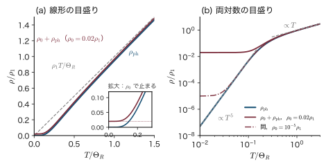
29.6 動的な電子格子相互作用 II — フォノンが仲立ちする電子間引力
29.6.1 なぜ電子どうしの引力が問題になるのか
1911 年，Kamerlingh Onnes（カメルリング・オネス）は水銀（Hg）の電気抵抗が約 $4.2\,\mathrm{K}$ で突然 0 になることを発見した．これが 超伝導（superconductivity）である（詳しい実験事実は第37章 37.1 節）．超伝導状態では，電子が 2 個ずつ組になって（Cooper 対），その対が一斉に同じ量子状態に凝縮している．2 個の電子が組になるには，電子どうしに引力が働かなければならない．しかし電子は負電荷どうしで，Coulomb 力は斥力である．引力はどこから来るのか．答えは格子（フォノン）である．本節ではその仕組みを，実空間の絵（29.6.2 項）と運動量空間の計算（29.6.3〜29.6.5 項）の両方で見る．
まず Coulomb 斥力の側の事情を確認しておく．金属の中では，2 個の電子の間の Coulomb 斥力は，まわりの伝導電子が瞬時に集まったり散ったりすることで 遮蔽 される（第21章 21.3.4 項）．Thomas–Fermi 近似では，遮蔽された斥力は
$$ V_{\rm C}(r)=\frac{e^2}{4\pi\epsilon_0r}\ee^{-k_{TF}r}, \qquad V_{\rm C}(\qq)=\frac{e^2}{\epsilon_0(q^2+k_{TF}^2)} $$（右は Fourier 変換）で，遮蔽の長さ $1/k_{TF}$ は金属では $0.05$〜$0.1\,\mathrm{nm}$ 程度，格子定数より短い．したがって，2 個の電子が同じ場所に同時に来なければ，Coulomb 斥力はほとんど効かない．フォノンによる引力は，ちょうどこの条件を満たす形で働く．
29.6.2 実空間の絵 — 正電荷の跡
図29.14 の時間の順に考える．
- 電子 1 が通る：Fermi 速度 $v_F\sim10^6\,\mathrm{m/s}$ で走る電子 1 が近くを通ると，正イオンは電子 1 に引かれて動き始める．
- イオンは遅れて寄り集まる：イオンは電子の数万〜数十万倍重く，振動の周期は $2\pi/\omega_D\sim0.1\,\mathrm{ps}$ と長い．電子 1 が近くにいる時間（$\sim a/v_F\sim0.3\,\mathrm{fs}$）はこれよりずっと短いので，イオンは電子 1 から短い「ひと押し」を受けるだけで，その後は自分の固有振動数で動く．ひと押しを受けた振動子の変位は $\sin\omega t$ の形で増え，最大になるのは周期の $1/4$ ほどたったとき，すなわち電子 1 がとっくに通り過ぎたあとである．このあいだ電子 1 はイオンの間隔の $10^2$〜$10^3$ 倍も先へ進んでいる．寄り集まった場所は正電荷が濃くなり，正電荷の跡が電子 1 の後ろに長く残る．
- 電子 2 が跡に引き寄せられる：あとから来た電子 2 は，この正電荷の跡に引き寄せられる．電子 2 は電子 1 から時間的にも空間的にも遠く離れているので，Coulomb 斥力（遮蔽されて $0.1\,\mathrm{nm}$ しか届かない）は効かない．格子の「記憶」を通した引力だけが働く．
これが 遅延した引力（retarded attraction）である．遅れるのは電子ではなく，重いイオンの応答の側であることに注意してほしい．跡が残る時間は振動の周期の程度（$1/4$ 周期で最も濃くなり，その後もしばらく振動しながら残る）なので，引力の届く距離の目安を，イオンが 1 回振動する間に電子 1 が進む距離
で表す（係数の 1 や $1/4$ は目安で，桁が大事である）．これは数百 nm になる（例題29.11）．遮蔽の長さ $0.1\,\mathrm{nm}$ より 3 桁以上長い．「遅い格子」と「速い電子」の時間の尺度の違い（29.1.6 項）が，斥力を避けて引力だけを働かせる鍵である．
例題29.11 正電荷の跡はどれだけ長いか
(1) Pb（$v_F=1.83\times10^6\,\mathrm{m/s}$，$\Theta_D=105\,\mathrm{K}$）と (2) Al（$v_F=2.03\times10^6\,\mathrm{m/s}$，$\Theta_D=428\,\mathrm{K}$）について，式 \eqref{eq:29-ell} の $\ell$ を求めよ．(3) 遮蔽の長さ $1/k_{TF}\approx0.06\,\mathrm{nm}$ と比べよ．
解答．$\omega_D=k_B\Theta_D/\hbar$ より $2\pi/\omega_D=2\pi\hbar/k_B\Theta_D=h/k_B\Theta_D$．$h/k_B=4.799\times10^{-11}\,\mathrm{K\,s}$ を使う．
(1) Pb：$$2\pi/\omega_D=4.799\times10^{-11}/105\,\mathrm{s}=4.57\times10^{-13}\,\mathrm{s}$$，$$\ell=1.83\times10^6\times4.57\times10^{-13}\,\mathrm{m}=8.4\times10^{-7}\,\mathrm{m}=0.84\,\mu\mathrm{m}$$．
(2) Al：$$2\pi/\omega_D=4.799\times10^{-11}/428\,\mathrm{s}=1.12\times10^{-13}\,\mathrm{s}$$，$$\ell=2.03\times10^6\times1.12\times10^{-13}\,\mathrm{m}=2.3\times10^{-7}\,\mathrm{m}=0.23\,\mu\mathrm{m}$$．
(3) $\ell/(1/k_{TF})$ は Pb で $840/0.06\approx1\times10^4$，Al で $230/0.06\approx4\times10^3$．
∎ 跡は遮蔽の長さの $10^3$〜$10^4$ 倍の長さにわたって残る．重い元素（Pb）ほど格子がゆっくり振動するので跡は長い．一方，引力が働くエネルギーの窓 $\hbar\omega_D$ は重い元素ほど狭くなる（29.7 節）．
動かして確かめる：格子がつくる正電荷の跡
このシミュレーターは，ばねでつながれたイオンの格子の中を電子 1 と電子 2 が走る様子をアニメーションで描く．イオンの寄り集まりの濃さ（正電荷の濃さ）を色で示す．イオンの質量 $M$ のつまみを重くすると格子の振動がゆっくりになり，跡が電子の後方に長く延びる（式 \eqref{eq:29-ell}）．軽くするとイオンが電子にすぐ追随して跡は短くなる．電子の速さ，減衰，結合の強さのつまみも動かして，電子 2 が受ける引力の変化を見てほしい．背景の物理は解説ページの §2 にまとめてある．
29.6.3 運動量空間の絵 — フォノンを 1 個やり取りする
実空間の絵を量子力学の言葉に直す．電子 1 がフォノンを放出し，電子 2 がそれを吸収する．結果として 2 個の電子は運動量（結晶運動量）$\hbar\qq$ をやり取りし，散乱される．これは式 \eqref{eq:29-Hep} の頂点（図29.2）を 2 つつないだ過程で，$g$ について 2 次の摂動である．途中の状態ではフォノンが 1 個存在する．フォノンを放出するのが電子 1 か電子 2 かで，時間の順序の違う 2 つの過程がある（図29.15）．
導出：フォノン交換による有効相互作用
ステップ1：始め・終わり・途中の状態．始めの状態 $\ket{i}$ は，電子 $\kk_1$，$\kk_2$ があってフォノンのない状態（$T=0$）とする．終わりの状態 $\ket{f}$ は電子 $\kk_1-\qq$，$\kk_2+\qq$ でフォノンのない状態である．エネルギーをそれぞれ
$$ E_i=E(\kk_1)+E(\kk_2),\qquad E_f=E(\kk_1-\qq)+E(\kk_2+\qq) $$とし，電子 1 が失うエネルギーを $\hbar\omega\equiv E(\kk_1)-E(\kk_1-\qq)$ と書く．散乱の前後でエネルギーが保存する（$E_i=E_f$）とき，電子 2 が得るエネルギー $E(\kk_2+\qq)-E(\kk_2)$ も $\hbar\omega$ に等しい．
ステップ2：2 次摂動の有効な行列要素．$\ket i$ から $\ket f$ へ直接移る行列要素は（$H_{\rm ep}$ がフォノンの数を 1 だけ変えるので）0 だが，途中の状態 $\ket m$ を経て 2 段で移ることはできる．2 次摂動論の有効な行列要素は
$$ V_{\rm eff}=\sum_m\frac{\bra{f}H_{\rm ep}\ket{m}\bra{m}H_{\rm ep}\ket{i}}{E_i-E_m} $$である（姉妹編『量子力学』の 2 次摂動論）．途中の状態は図29.15 の 2 つである．
ステップ3：過程 (a)．途中の状態は「電子 $\kk_1-\qq$，$\kk_2$，フォノン $\qq$」で，エネルギーは $E_m^{(a)}=E(\kk_1-\qq)+E(\kk_2)+\hbar\omega_\qq$．最初の頂点（電子 1 がフォノン $\qq$ を放出して $\kk_1\to\kk_1-\qq$）に使う項を式 \eqref{eq:29-Hep} から探す．式 \eqref{eq:29-Hep} の 1 つの項 $g_{\kk\qq}c^\dagger_{\kk+\qq}c_\kk(a_\qq+a^\dagger_{-\qq})$ で，和の変数 $\kk$ を $\kk_1$ に，$\qq$ を $-\qq$ に置くと
$$ g_{\kk_1,-\qq}\,c^\dagger_{\kk_1-\qq}c_{\kk_1}\bigl(a_{-\qq}+a^\dagger_{\qq}\bigr) $$となる．その第 2 項 $g_{\kk_1,-\qq}c^\dagger_{\kk_1-\qq}c_{\kk_1}a^\dagger_{\qq}$ が「電子を $\kk_1$ から $\kk_1-\qq$ へ移し，フォノン $\qq$ を 1 個作る」項である．2 番目の頂点（電子 2 がフォノン $\qq$ を吸収して $\kk_2\to\kk_2+\qq$）は，$\kk\to\kk_2$ とした項の第 1 項 $g_{\kk_2,\qq}c^\dagger_{\kk_2+\qq}c_{\kk_2}a_\qq$ である．フォノンを 0 個から 1 個に，1 個から 0 個にする行列要素はどちらも 1 なので，分子は $g_{\kk_2,\qq}\,g_{\kk_1,-\qq}$．分母は
$$ E_i-E_m^{(a)}=E(\kk_1)-E(\kk_1-\qq)-\hbar\omega_\qq=\hbar\omega-\hbar\omega_\qq $$ステップ4：過程 (b)．途中の状態は「電子 $\kk_1$，$\kk_2+\qq$，フォノン $-\qq$」で，$E_m^{(b)}=E(\kk_1)+E(\kk_2+\qq)+\hbar\omega_{-\qq}$．$\omega_{-\qq}=\omega_\qq$（時間反転対称性）を使うと，分母は
$$ E_i-E_m^{(b)}=E(\kk_2)-E(\kk_2+\qq)-\hbar\omega_\qq=-\hbar\omega-\hbar\omega_\qq $$分子は，電子 2 がフォノン $-\qq$ を放出する $g_{\kk_2,\qq}c^\dagger_{\kk_2+\qq}c_{\kk_2}a^\dagger_{-\qq}$ と，電子 1 がそれを吸収する $g_{\kk_1,-\qq}c^\dagger_{\kk_1-\qq}c_{\kk_1}a_{-\qq}$ の積で，(a) と同じ $g_{\kk_2,\qq}\,g_{\kk_1,-\qq}$ である．
ステップ5：足す．結合が $\qq$ だけによる簡単な場合，エルミート性 $g_{-\qq}=g_\qq^*$（29.1.2 項）から $g_{\kk_2,\qq}\,g_{\kk_1,-\qq}=g_\qq g_\qq^*=\abs{g_\qq}^2$ である．したがって
$$ V_{\rm eff}=\abs{g_\qq}^2\left[\frac{1}{\hbar\omega-\hbar\omega_\qq}+\frac{1}{-\hbar\omega-\hbar\omega_\qq}\right] =\abs{g_\qq}^2\left[\frac{1}{\hbar\omega-\hbar\omega_\qq}-\frac{1}{\hbar\omega+\hbar\omega_\qq}\right] $$通分すると，分子は $(\hbar\omega+\hbar\omega_\qq)-(\hbar\omega-\hbar\omega_\qq)=2\hbar\omega_\qq$，分母は $(\hbar\omega)^2-(\hbar\omega_\qq)^2$ になる．∎
補足：有限温度と，有効相互作用という見方
有限温度で始めからフォノンが $n$ 個いる場合も，誘導放出・吸収による $n$ に比例する項は (a) と (b) で打ち消し合い，式 \eqref{eq:29-Veff} はそのまま成り立つ．また，式 \eqref{eq:29-Veff} の分母 $(\hbar\omega)^2-(\hbar\omega_\qq)^2$ と分子 $2\hbar\omega_\qq$ の組は，フォノンの伝わり方（伝播関数）そのものである．ファインマン図の言葉では「2 本の電子の線を，フォノンの波線 1 本でつないだ図」が有効相互作用で，この波線に式 \eqref{eq:29-Veff} の因子が付く（第27章 27.4.6 項の図27.15(d)「フォノンの交換」．もっと知りたい読者は姉妹編『線形応答理論』第14章 14.12 節の電子とフォノンの対応表を参照．ただしそこでは裸とくりこまれた振動数の文字が本書と逆である）．
29.6.4 引力になる条件 — $\abs{\hbar\omega}\lt\hbar\omega_\qq$
式 \eqref{eq:29-Veff} の符号を調べる．分子 $2\hbar\omega_\qq\abs{g_\qq}^2$ は正なので，符号は分母 $(\hbar\omega)^2-(\hbar\omega_\qq)^2$ で決まる．
- $\abs{\hbar\omega}\lt\hbar\omega_\qq$（やり取りするエネルギーがフォノンのエネルギーより小さい）：分母が負で $V_{\rm eff}\lt0$，引力．
- $\abs{\hbar\omega}\gt\hbar\omega_\qq$：分母が正で $V_{\rm eff}\gt0$，斥力．
図29.16(a) にこの形を示す．$\hbar\omega\to\hbar\omega_\qq$ で発散するのは，格子をその固有振動数で揺すると共鳴するからである．やり取りするエネルギーが小さい，ゆっくりした過程でだけ引力になる——これが実空間の「遅延」の，エネルギー（振動数）の言葉での表現である．格子は固有振動数より遅い揺さぶりには素直についていき（電子 1 に引き寄せられて正電荷を集める），速い揺さぶりには逆位相でしかついていけない．強制振動子の位相が共鳴を境に反転するのと同じ理由である（姉妹シミュレーター「減衰振動と共鳴」の強制振動）．
Fermi 面の近くの電子どうしでは，やり取りするエネルギーは $\abs{\hbar\omega}\lesssim\abs{\xi_{\kk_1}}+\abs{\xi_{\kk_2}}$ 程度である．したがって，Fermi 準位から $\hbar\omega_D$ 程度以内にいる電子どうしには引力が働く．BCS 理論ではこれを単純化して，「$\abs{\xi_\kk}\lt\hbar\omega_D$ の電子どうしにだけ一定の引力 $-V$ が働く」とする（29.7 節）．
例題29.12 有効相互作用の符号と大きさ
式 \eqref{eq:29-Veff} を $\abs{g_\qq}^2/\hbar\omega_\qq$ を単位として表し，$\hbar\omega/\hbar\omega_\qq=0$，$0.5$，$0.9$，$1.1$，$2$ のときの値を求めよ．$\omega\to0$ の値は何を意味するか．
解答．$x=\omega/\omega_\qq$ とおくと $V_{\rm eff}=\dfrac{\abs{g_\qq}^2}{\hbar\omega_\qq}\cdot\dfrac{2}{x^2-1}$．
- $x=0$：$2/(0-1)=-2$．
- $x=0.5$：$2/(0.25-1)=2/(-0.75)=-2.67$．
- $x=0.9$：$2/(0.81-1)=2/(-0.19)=-10.5$．
- $x=1.1$：$2/(1.21-1)=2/0.21=+9.5$．
- $x=2$：$2/(4-1)=+0.67$．
∎ $x\lt1$ ではすべて負（引力）で，$x\to1$ で大きくなる．$x\gt1$ では正（斥力）に変わり，$x\to\infty$ で 0 に近づく．$\omega\to0$ の値 $-2\abs{g_\qq}^2/\hbar\omega_\qq$ は，2 個の電子を止めておいたときの「静的な」引力で，29.2 節と同じく「電子が格子を歪ませ，その歪みが別の電子を引きつける」エネルギーである．$2\abs g^2/\hbar\omega$ の形は，29.5 節の $\lambda=2N(0)\abs g^2/\hbar\omega_E$ の中身にほかならない．
29.6.5 遮蔽された Coulomb 斥力と合わせる — Bardeen–Pines の有効相互作用
電子どうしには，フォノンによる引力のほかに遮蔽された Coulomb 斥力も働く．両者を同じ土俵で扱うには，最も簡単な ジェリウム模型（正電荷を一様な「ゼリー」とみなす模型）に，動ける点状のイオンを入れて考える．Bardeen と Pines（1955 年）はこの模型で，2 つを合わせた有効相互作用を導いた．
導出（概略）：Bardeen–Pines の有効相互作用
ステップ1：誘電関数の 2 つの部分．2 個の電子の間の Coulomb 相互作用 $e^2/\epsilon_0q^2$ は，まわりの電荷の応答で $\epsilon(\qq,\omega)$ 分の 1 に弱められる（遮蔽）．応答する電荷は 2 種類ある．
- 伝導電子：軽くて速いので，$\omega\ll v_Fq$ の遅い変化には瞬時に追随し，Thomas–Fermi の遮蔽 $k_{TF}^2/q^2$ を与える．
- イオン：重いので，イオンだけを考えると自由な荷電粒子として $-\Omega_p^2/\omega^2$ の応答を与える．$\Omega_p^2=n_iZ^2e^2/\epsilon_0M$ はイオンのプラズマ振動数（$n_i$ はイオンの密度，$Ze$ はイオンの電荷）である（自由電子のプラズマ振動数の式 第21章 21.3.2 項で $m\to M$，$e\to Ze$ としたもの）．
ステップ2：遮蔽された相互作用．$V(\qq,\omega)=\dfrac{e^2}{\epsilon_0q^2\epsilon(\qq,\omega)}$ に入れて分母を整理する：
$$ V(\qq,\omega)=\frac{e^2}{\epsilon_0\left(q^2+k_{TF}^2-q^2\Omega_p^2/\omega^2\right)} =\frac{e^2}{\epsilon_0(q^2+k_{TF}^2)}\cdot\frac{1}{1-\omega_\qq^2/\omega^2}, \qquad \omega_\qq^2\equiv\frac{q^2\Omega_p^2}{q^2+k_{TF}^2} $$ステップ3：形を整える．$$\dfrac{1}{1-\omega_\qq^2/\omega^2}=\dfrac{\omega^2}{\omega^2-\omega_\qq^2}=1+\dfrac{\omega_\qq^2}{\omega^2-\omega_\qq^2}$$ より，次の式を得る．∎
$\omega_\qq$ は，電子に遮蔽されたイオンの振動，すなわち縦波の音響フォノンである．小さい $q$ では $\omega_\qq\simeq(\Omega_p/k_{TF})\,q$ で音速 $c_s=\Omega_p/k_{TF}$ の音波になる（Bohm–Staver（ボーム・ステーバー）の音速，演習29.4）．
式 \eqref{eq:29-BP} の第 1 項は遮蔽された Coulomb 斥力（$\omega$ によらない），第 2 項はフォノンを介した相互作用で，式 \eqref{eq:29-Veff} と同じ形 $\propto\omega_\qq^2/(\omega^2-\omega_\qq^2)$ をしている．係数まで一致することを確かめておく．式 \eqref{eq:29-Veff} を $\hbar\omega$ ではなく $\omega$ で書くと $V_{\rm eff}=\abs{g_\qq}^2\dfrac{2\omega_\qq/\hbar}{\omega^2-\omega_\qq^2}$ である．一方，式 \eqref{eq:29-Hep} の $g_\qq$ にジェリウム模型の遮蔽されたイオンのポテンシャル $v_\qq=Ze^2/\epsilon_0(q^2+k_{TF}^2)$（電荷 $Ze$ のイオンが電子に及ぼすポテンシャルの大きさ）と縦波（$\qq\cdot\hat{\bm e}_\qq=q$）を入れ，$\Omega_c=1/n_i$，$N\Omega_c=\mathcal V$，$\Omega_p^2=n_iZ^2e^2/\epsilon_0M$ を使うと
$$ \begin{aligned} \abs{g_\qq}^2\frac{2\omega_\qq}{\hbar}&=\frac{\hbar}{2NM\omega_\qq}\frac{q^2v_\qq^2}{\Omega_c^2}\cdot\frac{2\omega_\qq}{\hbar} =\frac{q^2Z^2e^4}{NM\Omega_c^2\epsilon_0^2(q^2+k_{TF}^2)^2}\\ &=\frac{1}{\mathcal V}\cdot\frac{e^2}{\epsilon_0(q^2+k_{TF}^2)}\cdot\frac{q^2\Omega_p^2}{q^2+k_{TF}^2} =\frac{1}{\mathcal V}\cdot\frac{e^2\,\omega_\qq^2}{\epsilon_0(q^2+k_{TF}^2)} \end{aligned} $$となる（最後に式 \eqref{eq:29-BP} の $\omega_\qq^2=q^2\Omega_p^2/(q^2+k_{TF}^2)$ を使った）．$1/\mathcal V$ は，式 \eqref{eq:29-Veff} が平面波どうしの行列要素であるのに対し，式 \eqref{eq:29-BP} が Fourier 変換であることによる（$\bra{\kk'}V\ket{\kk}=V(\qq)/\mathcal V$）．こうして，式 \eqref{eq:29-BP} の第 2 項は式 \eqref{eq:29-Veff} そのものであることがわかる．2 つを合わせた形 $\dfrac{e^2}{\epsilon_0(q^2+k_{TF}^2)}\cdot\dfrac{\omega^2}{\omega^2-\omega_\qq^2}$ を見ると，$\abs\omega\lt\omega_\qq$ では全体が負，すなわちCoulomb 斥力に打ち勝って正味で引力になる（図29.16(b)）．ジェリウム模型は大ざっぱだが，「遅い過程ではフォノンの引力が遮蔽された斥力を上回りうる」という要点を正しく表している．
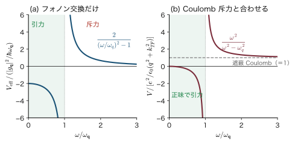
29.6.6 遅延のおかげで斥力が弱まる — Coulomb 擬ポテンシャル $\mu^*$
式 \eqref{eq:29-BP} では，$\omega\to0$ の極限で引力と斥力がちょうど打ち消し合って $V\to0$ になってしまう（$\omega^2/(\omega^2-\omega_\qq^2)\to0$）．それでも実際の金属で引力が勝つのは，引力と斥力の働くエネルギーの範囲（時間の尺度）が違うからである．
- フォノンの引力は，Fermi 準位から $\hbar\omega_D$（数十 meV）以内の電子どうしにしか働かない（遅い）．
- Coulomb 斥力は，Fermi 準位から $E_F$（数 eV）にわたる広い範囲の電子どうしに働く（速い）．
対を作る電子は Fermi 準位の近く（$\hbar\omega_D$ 以内）にいるが，Coulomb 斥力は「いったん高いエネルギーの状態に仮想的に散乱されてから戻ってくる」過程を何度も繰り返すことで弱められる．その結果，対を作るエネルギーの範囲で実際に効く斥力は，裸の値 $\mu_{\rm C}\equiv N(0)\langle V_{\rm C}\rangle$（$\langle V_{\rm C}\rangle$ は 29.6.1 項の遮蔽された Coulomb 斥力 $V_{\rm C}(\qq)$ を Fermi 面の上で平均したもの．Cooper 問題の $V$ と同じく体積の逆数を含めた行列要素として扱う）から
$$ \mu^*=\frac{\mu_{\rm C}}{1+\mu_{\rm C}\ln(E_F/\hbar\omega_D)} $$に減る（結果だけを示す．この対数は，Cooper 問題の式 \eqref{eq:29-cooper1} と同じ形の積分を $\hbar\omega_D$ から $E_F$ まで行ったものである）．これを Coulomb 擬ポテンシャル（Coulomb pseudopotential）という．たとえば $\mu_{\rm C}=0.4$，$E_F/\hbar\omega_D=300$ では $\ln300=5.70$ なので $\mu^*=0.4/(1+2.28)=0.12$ となる．多くの金属で $\mu^*\approx0.1$〜$0.15$ である．電子格子結合 $\lambda$ がこの $\mu^*$ を上回れば，正味で引力が残る．遅延（格子がゆっくり応答すること）は，引力を生むだけでなく，斥力を相対的に弱める働きもしている．
29.6.7 同位体効果 — 格子が関わる証拠
超伝導に格子が関わっていることの決定的な証拠は，同位体効果（isotope effect）である．1950 年，Maxwell（マクスウェル）と，Reynolds（レイノルズ）・Serin（セリン）・Wright（ライト）・Nesbitt（ネスビット）のグループが独立に，水銀の同位体（質量数の違う原子）で作った試料の転移温度を測り，重い同位体ほど $T_c$ が低いことを見つけた．結果は
とまとめられる．同じ 1950 年，Fröhlich は電子格子相互作用が電子どうしに引力を生むという理論を発表し，その中で同位体効果を実験とは独立に予想していた．
なぜ $\alpha=\frac12$ なのか．次の 3 つを組み合わせる．
- 引力が働くエネルギーの窓は $\hbar\omega_D$ で，次節の Cooper 対の束縛エネルギーも，第37章の BCS 理論の $T_c$ も，前因子は $\hbar\omega_D$ に比例する．
- 指数の中の $N(0)V$ は質量によらない．$\abs g^2$ は零点振動の振幅の 2 乗 $\hbar/2M\omega$ に比例するので $N(0)V\propto\abs g^2/\hbar\omega\propto(1/M\omega)\cdot(1/\omega)=1/(M\omega^2)$ で，$M\omega^2$ はバネ定数（電子と原子の間の力で決まり，同位体で変わらない）だからである．
- $\omega_D\propto\sqrt{K/M}\propto M^{-1/2}$．
したがって $T_c\propto\omega_D\propto M^{-1/2}$ になる．実測の $\alpha$ は Hg で約 $0.50$，Pb で約 $0.49$，Sn で約 $0.47$ と $\frac12$ に近い．一方，Ru や Zr などの遷移金属では $\alpha$ がずっと小さい．これは $T_c$ の式に $\mu^*$ が入っていて，$\mu^*$ の中の $\ln(E_F/\hbar\omega_D)$ が質量に依存するためと説明される（29.8 節の McMillan の式を使うと $\alpha$ の $\frac12$ からのずれが計算できる）．
例題29.13 水銀の同位体で転移温度はどれだけ変わるか
質量数 $204$ の水銀の同位体の転移温度が $4.15\,\mathrm{K}$ だったとする．$\alpha=\frac12$ として，質量数 $198$ の同位体の転移温度を予言せよ．
解答．式 \eqref{eq:29-isotope} より $$T_c(198)/T_c(204)=(198/204)^{-1/2}=(204/198)^{1/2}$$．
$$ \left(\frac{204}{198}\right)^{1/2}=(1.0303)^{1/2}=1.0150, \qquad T_c(198)=4.15\,\mathrm{K}\times1.0150=4.21\,\mathrm{K} $$∎ 質量が 3% 違うと，$T_c$ は 1.5%（$0.06\,\mathrm{K}$）違う．差は小さいが，$0.01\,\mathrm{K}$ の精度で測れば十分に検出できる．電子の性質（電子の数や Fermi 面）は同位体でほとんど変わらないから，$T_c$ の変化は格子の振動数の変化によるものと結論できる．これが「超伝導に格子が関わる」ことの決定的な証拠になった．
29.7 Cooper 対 — 弱い引力でも束縛状態ができる
29.7.1 問題の設定
29.6 節で，Fermi 準位から $\hbar\omega_D$ 以内の電子どうしには，フォノンを仲立ちにした弱い引力が働くことを見た．この引力で 2 個の電子は束縛されるだろうか．真空中の 2 個の粒子なら，3 次元では引力がある強さを超えないと束縛状態はできない（浅い井戸には束縛状態がない）．ところが 1956 年，Cooper は，詰まった Fermi 球の上に置かれた 2 個の電子は，どんなに弱い引力でも束縛されることを示した．これが Cooper 問題 で，束縛された 2 個の電子を Cooper 対（Cooper pair）という．
Cooper の設定は次のとおりである（図29.17）．
- $T=0$ の Fermi 球（$\abs\kk\lt k_F$）は電子で詰まっていて，その電子たちは何もしない．ただし Pauli 原理により，追加する 2 個の電子は Fermi 球の内側の状態には入れない．
- Fermi 球の外に電子を 2 個追加する．重心の運動量を 0 とし，2 個の電子は $\kk$ と $-\kk$ の状態を対で占める．スピンは反平行（$\kk\uparrow$，$-\kk\downarrow$）の一重項とする（理由は 29.7.4 項）．
- 2 個の電子の間には，どちらの電子も Fermi 準位から $\hbar\omega_D$ 以内（$0\lt\xi_\kk\lt\hbar\omega_D$）にいるときだけ，一定の引力が働く（29.6.4 項の単純化）．対 $(\kk,-\kk)$ を対 $(\kk',-\kk')$ に移す行列要素を $V_{\kk'\kk}=-V$（$V\gt0$）とする．
記号の約束：Cooper 問題の $V$，$N(0)$，$\varepsilon$
$V\gt0$ は引力の強さで，相互作用は $-V$ である．$V$ には結晶の体積 $\mathcal V$ の逆数 $1/\mathcal V$ が含まれている（行列要素は $\frac1{\mathcal V}\int\ee^{-i(\kk'-\kk)\cdot\rr}V(\rr)\,\dd^3r$ の形なので）．$N(0)$ は Fermi 準位での 1 スピンあたり・結晶全体の状態密度で，$N(0)V$ は無次元の数になる．2 個の電子の全エネルギーを $2E_F+\varepsilon$ と書き，$\varepsilon$ を Fermi 準位 2 個分から測ったエネルギーとする．$\varepsilon\lt0$ なら束縛状態である．
29.7.2 Cooper 問題を解く
導出：Cooper 対の束縛エネルギー
ステップ1：波動関数の形．重心が静止した 2 個の電子の波動関数（空間部分）を，相対座標 $\rr=\rr_1-\rr_2$ の平面波の重ね合わせで書く．
$$ \psi(\rr_1,\rr_2)=\sum_{\kk}{}'\,\phi_\kk\,\ee^{i\kk\cdot(\rr_1-\rr_2)} $$$\sum'$ は Fermi 球の外（$\abs\kk\gt k_F$）だけの和である．各項は「電子 1 が $\kk$，電子 2 が $-\kk$」の状態を表し，$\phi_\kk$ はその振幅（「対の状態 $(\kk,-\kk)$ にいる確率振幅」）である．スピンの部分は一重項 $(\uparrow\downarrow-\downarrow\uparrow)/\sqrt2$ をかける．
ステップ2：Schrödinger 方程式．2 個の電子のハミルトニアンは，それぞれの運動エネルギーと相互作用の和である．$\ee^{i\kk\cdot(\rr_1-\rr_2)}$ は運動エネルギーの固有関数で，固有値は $E(\kk)+E(-\kk)=2E(\kk)$．相互作用は対 $(\kk,-\kk)$ を $(\kk',-\kk')$ に移し，その行列要素が $V_{\kk'\kk}$ である．$H\psi=(2E_F+\varepsilon)\psi$ の両辺の $\ee^{i\kk\cdot(\rr_1-\rr_2)}$ の係数を比べると
$$ 2E(\kk)\,\phi_\kk+\sum_{\kk'}{}'\,V_{\kk\kk'}\,\phi_{\kk'}=(2E_F+\varepsilon)\,\phi_\kk $$$2E(\kk)-2E_F=2\xi_\kk$ を使って書き直すと
$$ (2\xi_\kk-\varepsilon)\,\phi_\kk=-\sum_{\kk'}{}'\,V_{\kk\kk'}\,\phi_{\kk'} $$ステップ3：引力の模型を入れる．$0\lt\xi_\kk,\xi_{\kk'}\lt\hbar\omega_D$ のとき $V_{\kk\kk'}=-V$，それ以外は 0 とする．殻の中の $\kk$ について
$$ (2\xi_\kk-\varepsilon)\,\phi_\kk=V\sum_{\kk'}{}''\,\phi_{\kk'}\equiv V\,C $$（$\sum''$ は殻の中だけの和）．右辺の $C\equiv\sum''_{\kk'}\phi_{\kk'}$ は $\kk$ によらない定数である．殻の外の $\kk$ では右辺が 0 なので，$\varepsilon\ne2\xi_\kk$ である限り $\phi_\kk=0$．
ステップ4：自己無撞着の条件．ステップ3から殻の中では
$$ \phi_\kk=\frac{V\,C}{2\xi_\kk-\varepsilon} $$両辺を殻の中の $\kk$ について足すと，左辺は定義から $C$ になる：
$$ C=V\,C\sum_{\kk}{}''\frac{1}{2\xi_\kk-\varepsilon} $$束縛状態では $C\ne0$（$C=0$ なら $\phi_\kk$ がすべて 0 になってしまう）なので，$C$ で割って
ステップ5：和を積分に直す．殻の中の状態の数は，エネルギーの幅 $\dd\xi$ あたり $N(0)\,\dd\xi$（1 スピンあたりの状態密度．対の相手 $-\kk$ のスピンは決まっているので，スピンの 2 は付けない）なので
$$ 1=N(0)V\int_0^{\hbar\omega_D}\frac{\dd\xi}{2\xi-\varepsilon} $$$\varepsilon\lt0$ を探すので被積分関数は正で，分母は 0 にならない．$\dfrac{\dd}{\dd\xi}\ln(2\xi-\varepsilon)=\dfrac{2}{2\xi-\varepsilon}$ より
$$ \int_0^{\hbar\omega_D}\frac{\dd\xi}{2\xi-\varepsilon}=\frac12\Bigl[\ln(2\xi-\varepsilon)\Bigr]_0^{\hbar\omega_D}=\frac12\ln\frac{2\hbar\omega_D-\varepsilon}{-\varepsilon} $$ステップ6：$\varepsilon$ について解く．$1=\dfrac{N(0)V}{2}\ln\dfrac{2\hbar\omega_D-\varepsilon}{-\varepsilon}$ より $\ln\dfrac{2\hbar\omega_D+\abs\varepsilon}{\abs\varepsilon}=\dfrac{2}{N(0)V}$（$-\varepsilon=\abs\varepsilon$）．指数をとって
$$ \frac{2\hbar\omega_D}{\abs\varepsilon}+1=\ee^{2/N(0)V} \qquad\Longrightarrow\qquad \abs\varepsilon=\frac{2\hbar\omega_D}{\ee^{2/N(0)V}-1} $$∎
定理29.3 Cooper の定理（1956）
詰まった Fermi 球の上の 2 個の電子は，Fermi 面の近くで働く引力 $-V$（$V\gt0$）がどんなに弱くても，エネルギーが $2E_F$ より低い束縛状態を作る．束縛エネルギーは式 \eqref{eq:29-cooper} で与えられる．
証明．式 \eqref{eq:29-cooper} の右辺は，$V\gt0$ でありさえすれば，$\ee^{2/N(0)V}-1\gt0$ なので有限の負の値である．その $\varepsilon$ は導出のステップ5の積分の条件（$\varepsilon\lt0$）を満たし，式 \eqref{eq:29-cooper1} の解になっている．∎
図29.18(a) に束縛エネルギーを $N(0)V$ の関数として示す．$N(0)V$ が小さいと束縛エネルギーは指数関数的に小さくなるが，決して 0 にはならない．金属の典型的な値 $N(0)V\approx0.2$〜$0.5$ では，$\abs\varepsilon$ は $\hbar\omega_D$ の $10^{-4}$〜$10^{-1}$ 倍，すなわち $\mu\mathrm{eV}$ から meV の程度である．
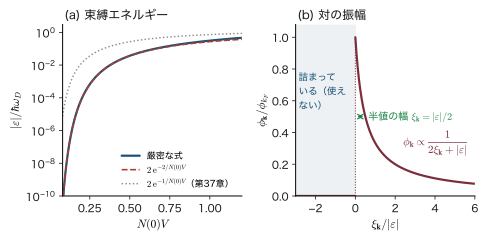
例題29.14 Cooper 対の束縛エネルギーと大きさ
$\hbar\omega_D=30\,\mathrm{meV}$，$N(0)V=0.3$，$v_F=1.5\times10^6\,\mathrm{m/s}$ とする．(1) 式 \eqref{eq:29-cooper} の厳密な形と近似形で $\varepsilon$ を求め，温度に換算せよ．(2) 対の大きさを $\hbar v_F/\abs\varepsilon$ で見積もり，格子定数（約 $0.3\,\mathrm{nm}$）と比べよ．
解答．(1) $2/N(0)V=6.667$，$\ee^{6.667}=785.8$ なので
$$ \abs\varepsilon=\frac{2\times30\,\mathrm{meV}}{785.8-1}=\frac{60\,\mathrm{meV}}{784.8}=0.0765\,\mathrm{meV} $$近似形では $$60\,\mathrm{meV}\times\ee^{-6.667}=60\times1.273\times10^{-3}\,\mathrm{meV}=0.0764\,\mathrm{meV}$$ で，厳密な値との違いは 0.1% である．温度に換算すると $$\abs\varepsilon/k_B=0.0765\times10^{-3}/(8.617\times10^{-5})\,\mathrm{K}=0.89\,\mathrm{K}$$．
(2) $$\hbar v_F=6.582\times10^{-16}\,\mathrm{eV\,s}\times1.5\times10^6\,\mathrm{m/s}=9.87\times10^{-10}\,\mathrm{eV\,m}$$ なので
$$ \frac{\hbar v_F}{\abs\varepsilon}=\frac{9.87\times10^{-10}\,\mathrm{eV\,m}}{7.65\times10^{-5}\,\mathrm{eV}}=1.3\times10^{-5}\,\mathrm{m}=13\,\mu\mathrm{m} $$格子定数の約 $4\times10^4$ 倍である．
∎ 1 対だけの Cooper 問題では，束縛エネルギーは $1\,\mathrm{K}$ 程度で，対の大きさは $10\,\mu\mathrm{m}$ にもなる．実際の超伝導体では，Fermi 面の近くのすべての電子が同時に対を作ることで束縛が強まり（指数が $2/N(0)V$ から $1/N(0)V$ になる），同じパラメータで対の大きさ（コヒーレンス長 $\xi_0$）は $0.1\,\mu\mathrm{m}$ 程度になる（第37章）．それでも格子定数よりはるかに大きい．
29.7.3 なぜどんなに弱い引力でも束縛されるのか
結果の要点を 4 つにまとめる．まず (i) と (ii) を述べる．
(i) Fermi 球があるので，問題は実質的に 2 次元になる．真空中の 2 体問題を同じ方法で解くと，式 \eqref{eq:29-cooper1} の和は $\kk=0$ から始まり，状態密度は $\sqrt{E}$ に比例する（3 次元）．すると $\varepsilon\to0^-$ でも積分 $\int_0\sqrt E\,\dd E/(2E)$ は有限にとどまり，$V$ がある値より小さいと式 \eqref{eq:29-cooper1} を満たす $\varepsilon\lt0$ がない（束縛にしきい値がある．演習29.5）．Fermi 球があると，(a) 和は Fermi 面から始まり，(b) その近くの状態密度はほぼ一定値 $N(0)$ になる．エネルギー $\xi$ の小さい状態が一定の密度で並ぶので，$\int_0\dd\xi/(2\xi+\abs\varepsilon)$ は $\abs\varepsilon\to0$ で $\frac12\ln(1/\abs\varepsilon)$ のように対数的に発散する．右辺がいくらでも大きくなれるので，$V$ がどんなに小さくても等式を満たす $\varepsilon$ が見つかる．「状態密度が一定」は 2 次元の自由粒子の性質で，2 次元では真空中でも弱い引力で必ず束縛状態ができることが知られている．Fermi 球は問題を実質的に 2 次元にしているのである．この対数は，29.4 節の 1 次元の Peierls 不安定性の対数と同じ起源（エネルギーの近い組が一定の密度で並んでいる）をもつ．
(ii) $V$ について展開できない — 摂動論では出ない．$\varepsilon\simeq-2\hbar\omega_D\ee^{-2/N(0)V}$ は，$V\to0$ で 0 に近づくが，$V$ のべき級数で表せない（例題29.15）．引力 $V$ について 1 次，2 次，… と摂動論の項を有限個足しても，束縛状態は決して得られない．超伝導の理論が Kamerlingh Onnes の発見から 46 年もかかった（BCS 理論，1957 年）理由の一つがここにある．
例題29.15 $\ee^{-2/x}$ は $x=0$ のまわりで展開できない
$h(x)=\ee^{-2/x}$（$x\gt0$），$h(0)=0$ とする．(1) $x\to0^+$ で $h(x)$，$h'(x)$，$h''(x)$ がすべて 0 に近づくことを示せ．(2) これから，$\varepsilon(V)$ を $V=0$ のまわりで Taylor 展開すると何が起こるか述べよ．
解答．(1) $y=1/x\to+\infty$ とおく．$h=\ee^{-2y}\to0$．$h'(x)=\dfrac{2}{x^2}\ee^{-2/x}=2y^2\ee^{-2y}\to0$（指数関数の減り方はどんなべきの増え方にも勝つ）．$$h''(x)=\left(\dfrac{4}{x^4}-\dfrac{4}{x^3}\right)\ee^{-2/x}=(4y^4-4y^3)\ee^{-2y}\to0$$．一般に $n$ 階微分は「$y$ の多項式 $\times\ee^{-2y}$」の形なので，すべて 0 に近づく．
(2) $V=0$ での値とすべての微分係数が 0 なので，Taylor 級数は恒等的に 0 になる．一方 $\varepsilon(V)$ 自身は $V\gt0$ で 0 でない．すなわち，$\varepsilon(V)$ は $V=0$ のまわりの Taylor 級数で表せない．
∎ 摂動論は「答えを $V$ のべき級数で求める」方法なので，どこまで高次を計算しても答えは 0 のままである．Cooper 対は，相互作用の効果を無限次まで足し上げて初めて現れる（式 \eqref{eq:29-cooper1} を解くことが，無限次の足し上げに相当する）．
29.7.4 なぜ $(\kk\uparrow,-\kk\downarrow)$ か，対の大きさ
(iii) 重心が静止した，スピンが反平行の対．重心の運動量 $\hbar\bm K$ が 0 でない対 $(\kk+\bm K/2,-\kk+\bm K/2)$ を考えると，2 個の電子が両方とも殻の中（$0\lt\xi\lt\hbar\omega_D$）に入る $\kk$ は，$\bm K=0$ のときより少なくなる（2 つの殻をずらして重ねた共通部分しか使えない）．式 \eqref{eq:29-cooper1} の和の項が減ると束縛は弱くなるので，$\bm K=0$ の対が最も強く束縛される．次にスピンについて．ステップ4の解 $\phi_\kk=VC/(2\xi_\kk-\varepsilon)$ は $\xi_\kk$ だけによるので，$\phi_{-\kk}=\phi_\kk$ である．したがって空間部分 $\psi\propto\sum\phi_\kk\ee^{i\kk\cdot\rr}$ は $\rr\to-\rr$（電子 1 と 2 の入れ替え）で符号を変えない（対称．$s$ 波）．電子は Fermi 粒子なので，全体の波動関数は入れ替えで符号を変えなければならず，スピンの部分は反対称の 一重項（$\uparrow\downarrow-\downarrow\uparrow$）になる．空間部分が対称だと 2 個の電子が近くにいる確率が高く，引力を最も有効に使える．
(iv) 対の大きさは原子間隔よりずっと大きい．図29.18(b) のように，対の振幅 $\phi_\kk\propto1/(2\xi_\kk+\abs\varepsilon)$ は Fermi 準位から $\abs\varepsilon$ 程度の範囲に集中している．これは波数でいえば，Fermi 面から $\delta k\approx\abs\varepsilon/\hbar v_F$ の幅である（$\xi=\hbar v_F(k-k_F)$）．不確定性関係により，実空間での対の広がりはその逆数
$$ r_{\rm pair}\sim\frac{1}{\delta k}\sim\frac{\hbar v_F}{\abs\varepsilon} $$で，例題29.14 で見たように $\mu\mathrm{m}$ にも達する．格子定数（$0.3\,\mathrm{nm}$）や電子どうしの平均間隔よりはるかに大きい．Cooper 対は，空間的に強く重なり合った，ゆるやかな対である．1 つの対の広がりの中に $10^6$ 個以上の他の対の重心が入っている．これが，Cooper 対を「独立な小さな分子（ボース粒子）」とみなす描像が成り立たず，多数の対を一度に扱う理論が必要な理由である（シミュレーター「Cooper 対」の対の大きさのタブ，解説ページの §3）．
29.7.5 1 対の問題から多体の BCS 理論へ
Cooper 問題の結論は衝撃的である．Fermi 球の上に電子を 2 個足すと，エネルギーが $2E_F$ より下がる．それなら，Fermi 球の表面近くの電子を 2 個ずつ取り出して対にすれば，エネルギーが下がり続けるはずである．すなわち，引力があると，詰まった Fermi 球そのもの（通常の金属の基底状態）が不安定になる．これが 1 対の問題からわかる最も重要なことである．
しかし，1 対の問題には大きな近似がある．Fermi 球の電子は「Pauli 原理で状態を塞ぐ」だけの役割に置かれていた．実際には，Fermi 面の近くのすべての電子が同時に対を作ろうとし，互いの対の邪魔をし合いながら，全体として最もエネルギーの低い状態を探す．この多体の問題を解いたのが Bardeen–Cooper–Schrieffer（バーディーン・クーパー・シュリーファー）の BCS 理論（1957 年）で，第37章の 37.5〜37.7 節で扱う（37.5 節）．結果だけ述べると，多体の基底状態では Fermi 準位のまわりにエネルギーギャップが開き，その大きさは指数が $2/N(0)V$ ではなく $1/N(0)V$ の形になって，1 対の束縛エネルギーよりずっと大きくなる（図29.18(a) の灰色の点線）．1 対の Cooper 問題は「Fermi 球が引力に対して不安定であること」を示し，BCS 理論は「では不安定になった後にどんな状態に落ち着くか」を示す，という分担である．
29.8 結合の強さを測る・計算する — Eliashberg 関数と $\lambda$
29.8.1 Eliashberg 関数 $\alpha^2F(\omega)$
29.5 節の Einstein 模型では，フォノンの振動数は 1 つ（$\omega_E$）で，結合の強さも 1 つ（$\abs g^2$）だった．実際の金属にはいろいろな振動数のフォノンがあり，それぞれ結合の強さが違う．「どの振動数のフォノンが，Fermi 面の電子とどれだけ強く結合しているか」をまとめた関数が Eliashberg 関数 $\alpha^2F(\omega)$ である．
考え方は次のとおりである．Einstein 模型の電子は，振動数 $\omega_E$ の 1 本のフォノンとだけ，強さ $N(0)\abs g^2$ で結合していた．これを「振動数の軸の上の 1 本の線（$\delta$ 関数）」と見て，実際の金属ではその線が多数のフォノンの振動数に広がって連続な分布になる，と考える．その分布が $\alpha^2F(\omega)$ で，「振動数 $\omega$ のあたりのフォノンが，Fermi 面の電子とどれだけ強く結合しているか」を表す．Einstein 模型では $\alpha^2F(\omega)=N(0)\abs g^2\,\delta(\hbar\omega-\hbar\omega_E)$ である．29.5 節の $\lambda=2N(0)\abs g^2/\hbar\omega_E$ は「結合の強さ $\div$ フォノンのエネルギー」の形をしていたので，広がった分布では，各振動数の寄与を $1/\omega$ の重みで足し合わせればよい．この $1/\omega$ の重みは，例題29.12 で見た「$2\abs g^2/\hbar\omega$」の形から来ている．低い振動数のフォノンほど $\lambda$ に大きく効く．格子の軟らかい Pb や Hg の $\lambda$ が大きいのはこのためである．以上を式にしたものが次の定義である（図29.19 の模式図と見比べてほしい）．
定義：Eliashberg 関数と結合定数 $\lambda$
Fermi 面の上の電子 $\kk$ が，フォノン $(\qq,\nu)$ によって Fermi 面の上の電子 $\kk+\qq$ に散乱される結合の 2 乗 $\abs{g_{\kk\qq\nu}}^2$ を，Fermi 面の上で平均し，振動数 $\omega$ のフォノンについて集めたもの：
$$ \alpha^2F(\omega)=N(0)\,\Bigl\langle\,\sum_\nu\abs{g_{\kk\qq\nu}}^2\,\delta(\hbar\omega-\hbar\omega_{\qq\nu})\Bigr\rangle_{\text{Fermi 面}} $$（$\langle\cdots\rangle_{\text{Fermi 面}}$ は $\kk$ と $\kk+\qq$ の両方を Fermi 面の上で平均すること）．$\alpha^2F(\omega)$ は無次元で，フォノンの状態密度 $F(\omega)$ に結合の強さ $\alpha^2(\omega)$ の重みを掛けたものと読める（名前の由来）．無次元の電子格子結合定数は
Einstein 模型の $\alpha^2F(\omega)=N(0)\abs g^2\,\delta(\hbar\omega-\hbar\omega_E)$ を式 \eqref{eq:29-lambda} に入れると，$\delta(\hbar\omega-\hbar\omega_E)=\delta(\omega-\omega_E)/\hbar$ より $\lambda=2N(0)\abs g^2/\hbar\omega_E$ となり，式 \eqref{eq:29-ReSigma} の $\lambda$ と一致する．
図29.19 に Pb を念頭においた $\alpha^2F(\omega)$ の模式図を示す．実際の Pb の $\alpha^2F$ も，横波の山（$4\,\mathrm{meV}$ 台）と縦波の山（$8\,\mathrm{meV}$ 台）の 2 つの山をもち，形はフォノンの状態密度 $F(\omega)$ に似ている．ただし $\alpha^2$ の重みのため，山の高さの比は $F(\omega)$ とは違う．
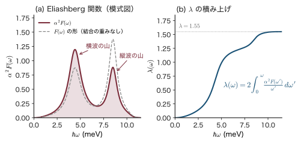
例題29.16 Eliashberg 関数から $\lambda$ を求める
ある金属の $\alpha^2F(\omega)$ を，2 本の鋭い山 $\alpha^2F(\omega)=a_1\delta(\hbar\omega-\varepsilon_1)+a_2\delta(\hbar\omega-\varepsilon_2)$ で近似する．$\varepsilon_1=4.4\,\mathrm{meV}$，$a_1=2.4\,\mathrm{meV}$，$\varepsilon_2=8.5\,\mathrm{meV}$，$a_2=1.5\,\mathrm{meV}$（模型の値）．(1) $\lambda$ を求めよ．(2) それぞれの山の寄与の割合を求めよ．
解答．(1) 式 \eqref{eq:29-lambda} を $\hbar\omega$ を変数として書くと $\lambda=2\int\alpha^2F/(\hbar\omega)\,\dd(\hbar\omega)$．デルタ関数で積分が終わり
$$ \lambda=2\left(\frac{a_1}{\varepsilon_1}+\frac{a_2}{\varepsilon_2}\right)=2\left(\frac{2.4}{4.4}+\frac{1.5}{8.5}\right)=2\,(0.545+0.176)=1.44 $$(2) 横波の山 $0.545/0.721=76\%$，縦波の山 $24\%$．
∎ 山の「面積」は縦波の山のほうがそれほど小さくない（$1.5$ 対 $2.4$）のに，$\lambda$ への寄与は 3 倍違う．$1/\omega$ の重みのためである．$T_c$ を上げるには $\lambda$ を大きくしたいが，低い振動数のフォノンで $\lambda$ を稼ぐと，次項で見るように $T_c$ の前因子（振動数）が小さくなる．
29.8.2 トンネル分光で $\alpha^2F(\omega)$ を測る
$\alpha^2F(\omega)$ は実験で決められる．超伝導体と常伝導金属の間に薄い絶縁膜をはさんだトンネル接合（第23章 23.5 節の超伝導トンネル）で電流–電圧特性を測ると，電圧 $eV$ が超伝導ギャップ $\Delta$ にフォノンのエネルギー $\hbar\omega$ を足したところ（$eV\approx\Delta+\hbar\omega$）に，微分コンダクタンス $\dd I/\dd V$ の小さな構造が現れる．これは，超伝導ギャップの大きさ自体がフォノンによる引力の振動数依存性を反映して，エネルギーとともに変化するためである．McMillan と Rowell（ローウェル）は 1965 年，Pb のトンネルの $\dd I/\dd V$ を Eliashberg の理論（強結合の超伝導理論）の式を使って逆に解き，$\alpha^2F(\omega)$ と $\mu^*$ を決めた．得られた $\alpha^2F(\omega)$ の山の位置は中性子散乱で測ったフォノンの状態密度の山とよく一致し，超伝導がフォノンによることの最も直接的な証拠になった．Pb の $\lambda\approx1.5$ はこうして求められた値である．
そのほかに，(i) 電子比熱の増強 $\gamma/\gamma_b=1+\lambda$（式 \eqref{eq:29-mstar}），(ii) ARPES のキンクの傾きの比，(iii) 高温の抵抗率の傾き（式 \eqref{eq:29-tau}，$\lambda_{\rm tr}$），(iv) 金属のフォノンの線幅（電子を励起して減衰する分）からも $\lambda$ が見積もられる．
29.8.3 McMillan の式と Allen–Dynes の改良
$\lambda$ と $\mu^*$ がわかれば，転移温度を見積もることができる．Eliashberg の方程式を数値的に解いた結果に合うように McMillan（1968 年）がまとめた式が，次の McMillan の式である（結果のみ）．
この式の読み方を述べる．
- 前因子 $\Theta_D$：引力の働くエネルギーの窓 $\hbar\omega_D$（29.6 節）を表す．フォノンの振動数が高いほど $T_c$ は高い．同位体効果 $T_c\propto M^{-1/2}$（式 \eqref{eq:29-isotope}）はここから来る．
- 指数の分子 $1+\lambda$：29.5 節の質量増強．フォノンの衣で電子が重くなり（準粒子の重みが $1/(1+\lambda)$ に減り），対を作る効果が弱められる．
- 指数の分母 $\lambda-\mu^*(\cdots)$：フォノンの引力 $\lambda$ から Coulomb 擬ポテンシャル $\mu^*$（29.6.6 項）を引いた正味の引力．これが 0 以下なら超伝導にならない．
- 弱結合の極限（$\lambda\ll1$，$\mu^*=0$）では $T_c\approx(\Theta_D/1.45)\ee^{-1.04/\lambda}$ で，BCS 理論の形 $k_BT_c\approx1.13\hbar\omega_D\ee^{-1/N(0)V}$（第37章）と同じ構造をしている．指数どうしを比べると，おおよそ $N(0)V\approx(\lambda-\mu^*)/(1+\lambda)$ と読める（第37章 37.7 節の目安．$1+\lambda$ は質量増強による引力の目減り，$-\mu^*$ は Coulomb 斥力の差し引き）．
McMillan の式は $\lambda\lesssim1.5$ で使うように作られている．$\lambda$ がもっと大きい強結合の場合には，Allen（アレン）と Dynes（ダインズ）（1975 年）が前因子を $\Theta_D/1.45$ から $\omega_{\log}/1.2$ に替え，強結合の補正因子 $f_1f_2$ を掛けた式を与えた．
$$ k_BT_c=f_1f_2\,\frac{\hbar\omega_{\log}}{1.2}\exp\!\left[-\frac{1.04\,(1+\lambda)}{\lambda-\mu^*(1+0.62\lambda)}\right], \qquad \omega_{\log}=\exp\!\left[\frac2\lambda\int_0^\infty\ln\omega\,\frac{\alpha^2F(\omega)}{\omega}\,\dd\omega\right] $$$\omega_{\log}$ は $\alpha^2F(\omega)/\omega$ の重みで平均した振動数の対数平均で，Debye 温度よりも $T_c$ に効く振動数をよく表す．$f_1$，$f_2$ は $\lambda$ と $\mu^*$，$\alpha^2F$ の形で決まる 1 より大きい数で，$\lambda\lesssim1$ ではほぼ 1 である．Allen–Dynes の式では，$\lambda$ が大きくなっても $T_c$ は頭打ちにならず，$\lambda$ の平方根程度で増え続ける．McMillan の式では $\lambda\to\infty$ で $T_c\to(\Theta_D/1.45)\exp[-1.04/(1-0.62\mu^*)]$ と頭打ちになる（図29.20）．

例題29.17 McMillan の式で Nb と Pb の転移温度を見積もる
(1) Nb：$\Theta_D=275\,\mathrm{K}$，$\lambda=0.82$，$\mu^*=0.13$．(2) Pb：$\Theta_D=105\,\mathrm{K}$，$\lambda=1.55$，$\mu^*=0.10$．それぞれ式 \eqref{eq:29-mcmillan} で $T_c$ を計算し，実測（Nb $9.50\,\mathrm{K}$，Pb $7.19\,\mathrm{K}$．表29.4）と比べよ．(3) Pb について，Allen–Dynes の式で $\hbar\omega_{\log}=4.8\,\mathrm{meV}$（$\omega_{\log}$ を温度に直して $56\,\mathrm{K}$）とし，$f_1=1.09$，$f_2=1$ として $T_c$ を計算せよ．
解答．(1) 分子：$1.04\times1.82=1.893$．分母：$$0.82-0.13\times(1+0.62\times0.82)=0.82-0.13\times1.508=0.82-0.196=0.624$$．指数 $=-1.893/0.624=-3.034$，$\ee^{-3.034}=0.0481$．
$$ T_c=\frac{275\,\mathrm{K}}{1.45}\times0.0481=189.7\,\mathrm{K}\times0.0481=9.1\,\mathrm{K} $$実測 $9.50\,\mathrm{K}$ と 4% の違いで合う．
(2) 分子：$1.04\times2.55=2.652$．分母：$$1.55-0.10\times(1+0.961)=1.55-0.196=1.354$$．指数 $=-1.959$，$\ee^{-1.959}=0.141$．
$$ T_c=\frac{105\,\mathrm{K}}{1.45}\times0.141=72.4\,\mathrm{K}\times0.141=10.2\,\mathrm{K} $$実測 $7.19\,\mathrm{K}$ より 4 割高い．
(3) 指数の部分は (2) と同じ $0.141$ なので，$$T_c=1.09\times\dfrac{56\,\mathrm{K}}{1.2}\times0.141=1.09\times46.7\times0.141\,\mathrm{K}=7.2\,\mathrm{K}$$ で，実測 $7.19\,\mathrm{K}$ に近い．
∎ 弱〜中程度の結合の Nb では McMillan の式がよく合う．強結合の Pb では，$\Theta_D$ が $T_c$ に効く振動数を過大評価するため外れる．$\alpha^2F$ から求めた $\omega_{\log}$ を使えば実測に近づく（(3) の $\omega_{\log}$ と $f_1$ は目安の値）．逆に，実測の $T_c$ から McMillan の式で $\lambda$ を逆算すると Pb では $\lambda\approx1.1$ になり，トンネル分光の $1.55$ と食い違う．「どの式で求めた $\lambda$ か」に注意が必要である．
29.8.4 $T_c$ を上げるには — 軽い原子と強い結合，そして構造の安定性
McMillan や Allen–Dynes の式から，フォノンによる超伝導の $T_c$ を上げる処方箋が読み取れる．(a) 振動数を高くする（前因子 $\omega_{\log}$ を大きくする．軽い原子），(b) 結合を強くする（$\lambda$ を大きくする）．ところが，この 2 つは両立しにくい．式 \eqref{eq:29-lambda} の $1/\omega$ の重みのため，振動数の高いフォノンは $\lambda$ を稼ぎにくい．$\lambda\approx N(0)\langle\abs g^2\rangle\cdot2/\hbar\omega\propto N(0)\langle I^2\rangle/M\omega^2$（$I$ は原子の変位あたりの電子のポテンシャルの変化）と書くと，$M\omega^2$ はバネ定数なので，高い振動数（硬いバネ）と大きな $\lambda$ を両立させるには，非常に大きな $N(0)\langle I^2\rangle$（電子が格子の変位に敏感であること）が必要になる．
$\mathrm{MgB_2}$．2001 年，秋光純らのグループは，ありふれた化合物 $\mathrm{MgB_2}$ が約 $39\,\mathrm{K}$ で超伝導になることを発見した．軽いホウ素の面内の伸縮振動（$E_{2g}$ モード，$60$〜$80\,\mathrm{meV}$ 程度）が，Fermi 準位を横切るホウ素の $\sigma$ 結合のバンドと非常に強く結合する．全体の $\lambda$ は約 $0.7$ と中程度だが，結合が 1 つのモードと 1 つのバンドに集中しているので，高い振動数と強い結合が部分的に両立している（2 種類のバンドに 2 つの超伝導ギャップが開く「2 ギャップ超伝導」でもある．第37章 37.10 節）．
水素化物．最も軽い原子である水素は，振動数が最も高い．金属水素が高温超伝導体になるという予想（Ashcroft，1968 年）を受けて，水素を多く含む化合物を超高圧で金属にする研究が進んだ．2015 年，Drozdov と Eremets（エレメッツ）らは，硫化水素を約 $150\,\mathrm{GPa}$ に加圧してできる $\mathrm{H_3S}$ が約 $203\,\mathrm{K}$ で超伝導になることを報告した．これは密度汎関数理論による $\lambda$ と $T_c$ の計算で前もって予言されていた．2019 年には $\mathrm{LaH_{10}}$ が約 $170\,\mathrm{GPa}$ で約 $250\,\mathrm{K}$ の $T_c$ を示すことが報告された（別のグループは約 $190\,\mathrm{GPa}$ で約 $260\,\mathrm{K}$ と報告）．これらでは水素の振動（$100$〜$200\,\mathrm{meV}$）と $\lambda\approx2$ 程度の強い結合が両立している．
注意：強すぎる結合は構造の不安定と競合する
結合を強くすると $\lambda$ は増えるが，29.2〜29.4 節で見たように，静的な電子格子相互作用はフォノンを軟らかくする．同じ結合 $g$ が，動的には $\lambda$ を増やし（$T_c$ を上げ），静的には力定数を下げる（式 \eqref{eq:29-Keff}，式 \eqref{eq:29-kohn}）．結合が強すぎると，最も強く結合したフォノンの振動数の 2 乗が負になり（虚数振動数を有するフォノン），結晶は別の構造（電荷密度波や歪んだ構造）に変わってしまう．すると Fermi 面にギャップが開いたり状態密度が減ったりして，超伝導はかえって起こりにくくなる．水素化物で超高圧が必要なのは，水素を金属にするためだけでなく，高い対称性の構造を（虚数振動数を出さずに）安定に保つためでもある．「虚数振動数を有するフォノン」と「Cooper 対」は，同じ電子格子相互作用の 2 つの顔であり，互いに背中合わせの関係にある．$\mathrm{NbSe_2}$ のように電荷密度波と超伝導が共存する物質は，この競合の現場である．
29.8.5 第一原理計算で $\lambda$ と $T_c$ を求める
現在では，フォノンも電子格子結合も第一原理計算で求められる．標準的な手順は次のとおりである．
- 密度汎関数理論で電子のバンドと Fermi 面を計算する．
- 密度汎関数摂動論（DFPT，Baroni らの総説 2001 年）で，各 $\qq$ のフォノンの振動数 $\omega_{\qq\nu}$ と固有ベクトル，原子の変位に対するポテンシャルの変化 $\partial V/\partial u$ を計算し，そこから $g_{mn\nu}(\kk,\qq)$ を求める．同じ計算で，29.3 節の虚数振動数の有無もわかる．
- Fermi 面の上の平均は非常に細かい $\kk$・$\qq$ の網目を必要とする．Wannier 関数による補間（EPW などのプログラム．Giustino の総説 2017 年）で，粗い網目の計算から細かい網目の $g$ を求める．極性結晶では，LO フォノンとの長距離の結合（Fröhlich 相互作用．$q\to0$ で $1/q$ のように大きくなる）は補間では再現できないので，Born 有効電荷と $\epsilon_\infty$ から解析的に別に足す（Verdi–Giustino 2015 年．第32章 32.7 節）．
- $\alpha^2F(\omega)$，$\lambda$，$\omega_{\log}$ を計算し，Allen–Dynes の式，または Eliashberg 方程式を数値的に解いて $T_c$ を求める．$\mu^*$ は $0.1$〜$0.15$ 程度の値を仮定することが多い（$\mu^*$ を第一原理で計算する方法も開発されている）．
このやり方は，Al や Nb，Pb，$\mathrm{MgB_2}$ の $\lambda$ や $T_c$ を，多くの場合 2〜3 割以内の精度で再現する．水素化物の高温超伝導は，計算が実験に先立って予言した例として知られる．ただし，$T_c$ は $\lambda$ と $\mu^*$ に指数関数的に敏感なので，数割の誤差は避けられない．また，銅酸化物などの非従来型の超伝導体の $T_c$ は，この方法では説明できない（第37章 37.10 節）．
29.9 電子格子相互作用が関わるその他の現象
電子格子相互作用は，ここまでの構造相転移と超伝導のほかにも，固体の多くの性質に顔を出す．主なものを短くまとめ，詳しく扱う章へつなぐ．
29.9.1 バンドギャップの温度変化と零点くりこみ
半導体のバンドギャップは温度を上げると小さくなる．Si では $0\,\mathrm{K}$ の $1.17\,\mathrm{eV}$ から室温の $1.11\,\mathrm{eV}$ へ，GaAs では $1.52\,\mathrm{eV}$ から $1.43\,\mathrm{eV}$ へ下がる（第17章 表17.2）．この温度変化は経験的に Varshni（ヴァルシュニ）の式
$$ E_g(T)=E_g(T{=}0)-\frac{\alpha_VT^2}{T+\beta_V} $$（$E_g(T{=}0)$ は絶対零度で測ったギャップ，$\alpha_V$，$\beta_V$ は物質ごとの定数．$\beta_V$ は Debye 温度程度）でよく表される．原因は 2 つある．(i) 熱膨張で格子定数が変わり，バンドが動く（静的な効果）．(ii) 電子と正孔がフォノンの衣を着て，伝導帯の底と価電子帯の頂上のエネルギーがずれる（29.5 節の $\mathrm{Re}\,\Sigma$ と同じ動的な効果．フォノンを 1 個出して吸い戻す 2 次摂動のずれ（図29.11 と同じ図）を Fan の項，原子の揺れの 2 乗平均で平均化されたポテンシャルによる 1 次のずれを Debye–Waller の項とよんで分ける）．多くの半導体では (ii) が主である．
(ii) の効果は，フォノンの数 $n(\Omega)$ に比例する部分と，フォノンが 0 個でも残る部分（零点振動による部分）からなる．おおまかには，1 つの有効なフォノンの振動数 $\Omega$ を使って $E_g(T)=E_g^{(0)}-A\,[2n(\Omega)+1]$ と書ける（$E_g^{(0)}$ は原子が静止しているとしたときのギャップで，絶対零度のギャップ $E_g(T{=}0)$ とは違う．$A\gt0$）．$T=0$ でも $n=0$ の「$+1$」が残り，ギャップは $A$ だけ小さい．これを 零点くりこみ（zero-point renormalization）という（図29.21）．軽い元素からなる硬い結晶ほど零点振動が大きく，ダイヤモンドでは零点くりこみが約 $0.4\,\mathrm{eV}$（計算・実験で $0.3$〜$0.6\,\mathrm{eV}$ 程度の幅がある）に達する．第一原理計算で $0\,\mathrm{K}$ のギャップを実験と比べるときは，この補正を忘れてはいけない．
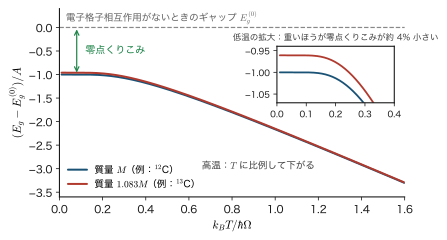
例題29.18 ダイヤモンドのギャップの同位体シフト（定性的な見積もり）
零点くりこみは原子の零点振動の 2 乗平均 $\langle u^2\rangle_0=\hbar/2M\Omega$ に比例するとする．(1) $\langle u^2\rangle_0$ が質量 $M$ のどんなべきに比例するか答えよ（$\Omega\propto M^{-1/2}$）．(2) $^{12}\mathrm{C}$ のダイヤモンドの零点くりこみを $-0.4\,\mathrm{eV}$ とすると，$^{13}\mathrm{C}$ のダイヤモンドのギャップは何 meV 大きいか．
解答．(1) $\langle u^2\rangle_0\propto\dfrac{1}{M\Omega}\propto\dfrac{1}{M\cdot M^{-1/2}}=M^{-1/2}$．
(2) $^{13}\mathrm{C}$ の零点くりこみは $$-0.4\,\mathrm{eV}\times(12/13)^{1/2}=-0.4\times0.9608\,\mathrm{eV}=-0.3843\,\mathrm{eV}$$．ギャップは $0.4-0.3843=0.0157\,\mathrm{eV}\approx16\,\mathrm{meV}$ 大きい．
∎ 化学的にはまったく同じ物質なのに，同位体を替えるだけでギャップが十数 meV 変わる．実際にダイヤモンドではこの程度の同位体シフトが測られており，零点振動によるくりこみが実在することの直接の証拠になっている（Cardona と Thewalt の総説）．超伝導の同位体効果（29.6.7 項）と同じく，「同位体で物性が変わる」ことは格子の量子的な振動が効いている印である．
29.9.2 ポーラロン
伝導帯の電子（または価電子帯の正孔）1 個のまわりで格子が歪み，電子がその歪みを引き連れて動くものを ポーラロン（polaron）という．29.5 節の質量増強は「Fermi 面の電子がフォノンの衣を着る」話だったが，ポーラロンは半導体や絶縁体の中の 1 個の電荷が衣を着る話である．極性結晶の LO フォノンとの Fröhlich 結合（結合定数 $\alpha_F$．第22章 22.3 節）による大きなポーラロンと，局所的な歪みに電子が自己束縛される小さなポーラロン（Holstein 模型）がある．小さなポーラロンの模型は，29.2 節の 2 準位＋格子の模型と同じ形の式になる．詳しくは第31章 31.6〜31.8 節（31.6 節）で扱う．
29.9.3 移動度と熱い電子のエネルギー緩和
半導体の移動度を決めるフォノン散乱（音響フォノンの変形ポテンシャル散乱，極性光学フォノン散乱，谷間散乱）は，29.5.4 項の虚部（散乱率）の半導体版である（第22章 22.1・22.3 節）．強い電場で加速されて格子より高い温度をもった電子（熱い電子）は，主に LO フォノンを放出してエネルギーを格子に渡す．GaAs では LO フォノン 1 個のエネルギーは $36\,\mathrm{meV}$ で，放出の時間はおよそ $0.1\,\mathrm{ps}$ の程度である．このエネルギー緩和の速さが，速度のオーバーシュートなどの高電界の現象を決める（第23章 23.1 節）．
29.9.4 熱電効果のフォノンドラッグ
温度勾配があると，フォノンは高温側から低温側へ流れる．フォノンは電子と運動量をやり取りするので，フォノンの流れが電子を「引きずって」低温側へ運ぶ．これを フォノンドラッグ（phonon drag）という．フォノンドラッグは熱起電力（Seebeck 係数）に余分な寄与を加え，フォノンの平均自由行程の長い低温（Debye 温度の数分の 1 程度）で熱起電力の山として現れる．純粋な金属（Cu など）や半導体（Si，Ge）でよく知られている．電子格子相互作用が「電子からフォノンへ」だけでなく「フォノンから電子へ」も運動量を渡すことの表れである．
29.9.5 超音波の吸収
金属に超音波（長波長の音響フォノン）を通すと，伝導電子がフォノンを吸収するので，超音波は減衰する．電子による吸収の大きさは，電子の平均自由行程と音波の波長の比で決まり，Fermi 面の形の情報も含む．超伝導状態では，Cooper 対はフォノンを吸収しても壊れにくく（ギャップ $2\Delta$ より小さいエネルギーでは対を壊せない），熱的に励起された準粒子だけが吸収するので，$T_c$ より下で吸収が急に減る．その温度変化は BCS 理論の予言（ギャップの存在とその温度依存性）の初期の重要な検証になった（第37章）．
29.9.6 Raman 線の Fano 形状
強くドープした半導体（たとえば高濃度に p 型にした Si）や金属の Raman スペクトルでは，光学フォノンのピークが左右非対称な形になる．これは，離散的な状態（フォノン）と，それと同じエネルギーにある連続的な電子の励起とが，電子格子相互作用で結合して干渉するためで，Fano（ファノ）形状という．線の形はおおよそ $I(\omega)\propto(q_{\rm Fano}+\varepsilon)^2/(1+\varepsilon^2)$（$\varepsilon=(\omega-\omega_0)/\Gamma$，$q_{\rm Fano}$ は非対称の程度を表す Fano のパラメーターで，$q_{\rm Fano}\to\infty$ で Lorentz 型に戻る）で表される（図29.22(c)）．非対称の程度と線幅から，フォノンと電子の結合の強さがわかる．Raman 分光そのものは第34章（34.8 節）で扱う．
29.9.7 光励起の後のコヒーレントフォノン
フェムト秒のレーザーパルスで電子を急に励起すると，電子の分布が変わったことで原子に働く力が一瞬で変わる．29.2 節の言葉でいえば，断熱ポテンシャルの谷の位置 $Q_0$ が急にずれる．原子はすぐには動けないので，新しい谷のまわりで一斉に振動を始める．位相のそろったこの振動を コヒーレントフォノン（coherent phonon）といい（図29.22(a)(b)），反射率の時間変化に振動として現れる（Bi や Sb の全対称モード，振動数は数 THz）．電子の励起が格子の平衡位置を変える，という静的な電子格子相互作用を，時間の領域で直接見ていることになる．
29.9.8 励起状態の格子緩和
局在した電子（色中心，不純物，分子性の結晶）を光で励起すると，励起状態では電子の分布が違うので，格子の平衡位置がずれる．原子は新しい平衡位置へ緩和しながら余分なエネルギーをフォノンとして放出し，その結果，発光のエネルギーは吸収のエネルギーより低くなる（Stokes（ストークス）シフト）．これを配位座標図で表したのが Franck–Condon（フランク・コンドン）原理で，第31章 31.4 節（31.4 節）で扱う．配位座標図は，基底状態と励起状態の 2 枚の断熱ポテンシャル（29.2 節の $E_\pm(Q)$ と同じ考え方）を描いたもので，図29.22(a) の 2 本の放物線がその最も簡単な形である．
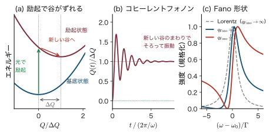
29.10 まとめと演習
29.10.1 まとめ
- 原子が $\uu_l$ だけ動くと電子のポテンシャルが $\delta V=-\sum_l\uu_l\cdot\nabla v$ だけ変わる．フォノンの量子化と組み合わせると，電子格子相互作用は $H_{\rm ep}=\sum g_{\kk\qq}c^\dagger_{\kk+\qq}c_\kk(a_\qq+a^\dagger_{-\qq})$ と書ける（式 \eqref{eq:29-Hep}）．頂点は「電子が $\kk\to\kk+\qq$ に移り，フォノン $\qq$ を吸収するか $-\qq$ を放出する」と読む．
- 電子格子相互作用には 2 つの顔がある．格子の変形に電子が瞬時に追随する静的な面（力定数を変える．行き着く先は虚数振動数を有するフォノン）と，Fermi 面の近くの電子がフォノンを出し入れする動的な面（質量・寿命・電子間引力．行き着く先は Cooper 対）である．分かれ目は時間の尺度（電子 $\hbar/E_F\sim0.1\,\mathrm{fs}$，格子 $1/\omega_D\sim20\,\mathrm{fs}$）にあり，動的な引力で遅れるのは重いイオンの応答の側である．
- 2 準位＋格子の模型 $E_\pm(Q)=\frac12KQ^2\pm\sqrt{\Delta_0^2+g^2Q^2}$ では，対称な構造の曲率は $K_{\rm eff}=K-g^2/\Delta_0$．$g^2\gt K\Delta_0$ で二重井戸になり，$Q_0$ と深さ $E_b=(g^2/2K)(1-K\Delta_0/g^2)^2$ が求まる（擬 Jahn–Teller 効果）．$\Delta_0=0$ では必ず歪み，$E_{\rm JT}=g^2/2K$（Jahn–Teller 効果）．
- 一般に $K_{\rm eff}=K_0-2\sum_n\abs{\bra n\partial H/\partial Q\ket0}^2/(E_n-E_0)$ で，電子の組み替えは必ず力定数を下げる（定理29.1）．それが $K_0$ を上回ったとき，調和振動数の 2 乗が負になる．
- $\omega^2\lt0$ のモードが 虚数振動数を有するフォノンで，高対称構造がそのモードの向きに不安定（山の頂上・鞍点）であることを表す．第一原理計算の分散図では負の値で描かれ，固有ベクトルが歪み方を，波数が超周期（$\Gamma$：強誘電，$R$・$M$：八面体回転，$2k_F$：Peierls・CDW）を教える．
- 虚数振動数があっても高温相は実在しうる．非調和性が有効な曲率を押し上げ，$\omega^2\propto T-T_c$ のソフトモードになる（第30章 30.8 節）．計算の不備（収束，音響総和則，スーパーセル）でも虚数振動数は出るので，固有ベクトルに沿った $E(Q)$ で確かめる．
- 金属のフォノンのくりこみ $\omega_q^2=\Omega_q^2[1-(2g^2/\hbar\Omega_q)\chi(q)]$ は 2 準位模型と同じ構造をもつ．$\chi(q)$ の $2k_F$ の特異性が，3 次元では Kohn 異常（傾きの折れ），1 次元では Peierls 不安定性（振動数が 0 になる）を生む．
- 電子がフォノンを仮想的に出し入れすると自己エネルギーが生じる．実部は Fermi 準位の近くで $-\lambda\xi$ となり，$m^*=m_b(1+\lambda)$，$\gamma=(1+\lambda)\gamma_b$，ARPES のキンクを生む．虚部は散乱率で，高温で $\hbar/\tau=2\pi\lambda k_BT$（$\rho\propto T$），低温で $\rho\propto T^5$（Bloch–Grüneisen）．
- 2 個の電子がフォノンを 1 個やり取りする 2 次摂動から $V_{\rm eff}=\abs{g_\qq}^2\cdot2\hbar\omega_\qq/[(\hbar\omega)^2-(\hbar\omega_\qq)^2]$ が得られ，$\abs{\hbar\omega}\lt\hbar\omega_\qq$ で引力になる．実空間では「電子が残した正電荷の跡」による遅延した引力で，Coulomb 斥力を避ける．同位体効果 $T_c\propto M^{-1/2}$ がその証拠である．
- Cooper 問題：詰まった Fermi 球の上の 2 個の電子は，どんなに弱い引力でも $\varepsilon\simeq-2\hbar\omega_D\ee^{-2/N(0)V}$ の束縛状態を作る．$V$ について展開できず，対は $(\kk\uparrow,-\kk\downarrow)$ の一重項で，大きさは原子間隔よりはるかに大きい．Fermi 球全体が不安定になり，多体の BCS 理論（第37章）へつながる．
- 結合の強さは Eliashberg 関数 $\alpha^2F(\omega)$ と $\lambda=2\int\alpha^2F/\omega\,\dd\omega$ で表され，トンネル分光や第一原理計算（DFPT，EPW）で求められる．McMillan・Allen–Dynes の式で $T_c$ が見積もれる．
- $T_c$ を上げるには高い振動数と強い結合が要る（$\mathrm{MgB_2}$，高圧の水素化物）．しかし強すぎる結合は虚数振動数（構造不安定）を生む．虚数振動数を有するフォノンと Cooper 対は，同じ電子格子相互作用の背中合わせの 2 つの顔である．
29.10.2 演習問題
演習29.1 二重井戸の谷での振動 — 振幅モード
2 準位＋格子の模型（式 \eqref{eq:29-Epm}）で $g^2\gt K\Delta_0$ とする．(1) 二重井戸の谷 $Q=Q_0$ での曲率 $K_A\equiv\dd^2E_-/\dd Q^2\big|_{Q_0}$ を求め，$K_A=K\bigl[1-(K\Delta_0/g^2)^2\bigr]$ となることを示せ．(2) $K_A\gt0$ であること（谷の底では振動数が実数）を確かめよ．(3) 例題29.2 の数値（$\Delta_0=0.5\,\mathrm{eV}$，$K=10\,\mathrm{eV/Å^2}$，$g=3\,\mathrm{eV/Å}$）で $K_A$ を求め，対称な構造の $\abs{K_{\rm eff}}$ と比べよ．
ヒント：$\dfrac{\dd^2}{\dd Q^2}\sqrt{\Delta_0^2+g^2Q^2}=\dfrac{g^2\Delta_0^2}{(\Delta_0^2+g^2Q^2)^{3/2}}$ に，谷の条件 $\sqrt{\Delta_0^2+g^2Q_0^2}=g^2/K$ を入れる．(3) は $K_A=10\times(1-0.309)=6.9\,\mathrm{eV/Å^2}$，$\abs{K_{\rm eff}}=8\,\mathrm{eV/Å^2}$．歪んだ構造の中の新しい振動が，Landau 理論の振幅モード（図29.9(b) の緑）に対応する．
演習29.2 有限温度の 2 準位模型 — 構造相転移の最も簡単な模型
2 準位＋格子の模型で，電子 1 個が温度 $T$ で 2 つの準位 $\pm E(Q)$（$E=\sqrt{\Delta_0^2+g^2Q^2}$）に熱的に分布するとする．(1) 電子の自由エネルギーが $-k_BT\ln\bigl[2\cosh(E/k_BT)\bigr]$ であることを示し，全体の自由エネルギー $F(Q)=\frac12KQ^2-k_BT\ln\bigl[2\cosh(E/k_BT)\bigr]$ の $Q=0$ での曲率が $K_{\rm eff}(T)=K-\dfrac{g^2}{\Delta_0}\tanh\dfrac{\Delta_0}{k_BT}$ になることを導け．(2) $g^2\gt K\Delta_0$ のとき，対称な構造が安定になる温度 $T_c$ が $\tanh(\Delta_0/k_BT_c)=K\Delta_0/g^2$ で決まることを示せ．(3) $\Delta_0=0.05\,\mathrm{eV}$，$K=10\,\mathrm{eV/Å^2}$，$g=0.8\,\mathrm{eV/Å}$ で $T_c$ を求めよ．(4) $T_c$ の近くで $K_{\rm eff}(T)\propto T-T_c$ となることを示せ．
ヒント：(1) 分配関数は $\ee^{E/k_BT}+\ee^{-E/k_BT}$．$$\dfrac{\dd}{\dd Q}\ln\cosh(E/k_BT)=\tanh(E/k_BT)\cdot\dfrac{1}{k_BT}\dfrac{g^2Q}{E}$$．(3) $K\Delta_0/g^2=0.781$，$T_c=\Delta_0/[k_B\,\tanh^{-1}(0.781)]=553\,\mathrm{K}$．(4) $K_{\rm eff}(T)$ を $T_c$ のまわりで 1 次まで展開する．温度で上の準位に電子が入ると，「下の準位の電子の得」が打ち消されてバネが元に戻る．
演習29.3 Bloch–Grüneisen の式の 2 つの極限
(1) 式 \eqref{eq:29-BG} で，$T\gg\Theta_R$ のとき $\rho_{\rm ph}\simeq\rho_1T/\Theta_R$，$T\ll\Theta_R$ のとき $\rho_{\rm ph}\simeq4\times5!\,\zeta(5)\,\rho_1(T/\Theta_R)^5$ となることを示せ．(2) 銅で $\Theta_R=343\,\mathrm{K}$ として，$\rho_{\rm ph}(10\,\mathrm{K})/\rho_{\rm ph}(300\,\mathrm{K})$ を見積もれ．残留抵抗比（RRR．室温と液体ヘリウム温度の抵抗率の比 $\rho(300\,\mathrm{K})/\rho(4\,\mathrm{K})$ で，純度の目安）が $1000$ の純度の高い銅では，$10\,\mathrm{K}$ の抵抗率の主な原因は何か．
ヒント：(1) $x\ll1$ で $(\ee^x-1)(1-\ee^{-x})\simeq x^2$．$\int_0^\infty x^5\ee^x/(\ee^x-1)^2\,\dd x=5!\,\zeta(5)=124.4$（付録A）．(2) $\rho_{\rm ph}(10\,\mathrm{K})/\rho_1=1.05\times10^{-5}$，$\rho_{\rm ph}(300\,\mathrm{K})/\rho_1=0.81$（数値積分）で，比は $1.3\times10^{-5}$．RRR $=1000$ なら $\rho_0/\rho(300\,\mathrm{K})=10^{-3}$ なので，$10\,\mathrm{K}$ では残留抵抗（不純物・欠陥）が支配的．
演習29.4 Bohm–Staver の音速
29.6.5 項のジェリウム模型で，小さい $q$ のフォノンは $\omega_\qq\simeq c_sq$，$c_s=\Omega_p/k_{TF}$ となる．(1) $\Omega_p^2=n_iZ^2e^2/\epsilon_0M$，$k_{TF}^2=3ne^2/2\epsilon_0E_F$（$n=Zn_i$ は電子の密度）を使って $c_s=\sqrt{\dfrac{Zm}{3M}}\,v_F$ を導け．(2) Na（$Z=1$，原子量 $22.99$，$v_F=1.07\times10^6\,\mathrm{m/s}$）と K（$Z=1$，原子量 $39.10$，$v_F=0.86\times10^6\,\mathrm{m/s}$）について $c_s$ を求めよ．
ヒント：(1) $$c_s^2=\Omega_p^2/k_{TF}^2=\dfrac{n_iZ^2e^2}{\epsilon_0M}\cdot\dfrac{2\epsilon_0E_F}{3Zn_ie^2}=\dfrac{2ZE_F}{3M}$$ に $E_F=\frac12mv_F^2$．(2) Na で $3.0\times10^3\,\mathrm{m/s}$，K で $1.9\times10^3\,\mathrm{m/s}$．アルカリ金属の実測の縦波の音速（数 km/s）と桁で一致する．イオンの振動に伝導電子の遮蔽が加わったものが音波である，という描像の確かめになる．
演習29.5 Fermi 球がないと束縛にしきい値がある
Cooper 問題と同じ手順で，Fermi 球のない真空中の 3 次元の 2 粒子（重心が静止）を考える．各粒子の運動エネルギーを $E_\kk=\hbar^2k^2/2m$ とする（2 個の和は $2E_\kk$）．引力 $-V$ は $0\lt E_\kk\lt E_c$ の範囲でだけ働くとし，1 粒子の状態密度を $N(E)=N_c\sqrt{E/E_c}$（$N_c$ は $E=E_c$ での値）とする．(1) 束縛状態の条件 $1=V\int_0^{E_c}N(E)\,\dd E/(2E-\varepsilon)$ を書け．(2) $\varepsilon\to0^-$ での右辺の値を求め，束縛状態ができるには $N_cV\ge1$ が必要であることを示せ．(3) Cooper 問題との違いを，状態密度の形から説明せよ．
ヒント：(2) $\varepsilon\to0^-$ で右辺は $$VN_c\int_0^1\dfrac{\sqrt t}{2t}\,\dd t=VN_c\Bigl[\sqrt t\Bigr]_0^1=VN_c$$．右辺は $\abs\varepsilon$ が増えると単調に減るので，$VN_c\lt1$ では解がない．(3) Cooper 問題では和が Fermi 面から始まり，状態密度がそこで有限（一定）なので，$\varepsilon\to0^-$ で右辺が対数的に発散する．
演習29.6 McMillan の式から Al の $\lambda$ を逆算する
Al は $T_c=1.14\,\mathrm{K}$，$\Theta_D=428\,\mathrm{K}$ である（表29.4）．$\mu^*=0.10$ として，式 \eqref{eq:29-mcmillan} から $\lambda$ を求めよ．得られた $\lambda$ から，Fermi 準位での電子比熱の増強 $\gamma/\gamma_b$ を予言せよ．
ヒント：$x\equiv1.45T_c/\Theta_D=0.003\,86$ とおくと $\ln(1/x)=5.56$ で，$1.04(1+\lambda)=5.56\,[\lambda-0.10(1+0.62\lambda)]$ を $\lambda$ について解く（1 次方程式）．$\lambda\approx0.38$，$\gamma/\gamma_b=1+\lambda\approx1.4$．$\lambda$ が小さいので $T_c$ は $\Theta_D$ の $0.3\%$ にとどまる．
演習29.7 ARPES のキンクから結合の強さを読む
ある金属の表面のバンドを ARPES で測ったところ，Fermi 準位のすぐ近くの分散の傾き（速度）は，Fermi 準位から $100\,\mathrm{meV}$ 以上深いところの傾きの $0.45$ 倍だった（模型の値）．(1) 式 \eqref{eq:29-mstar} から $\lambda$ を求めよ．(2) キンクの位置が $-40\,\mathrm{meV}$ だったとすると，結合しているフォノンのエネルギーはおよそいくらか．(3) 高温での散乱率 $\hbar/\tau$ の温度に対する傾き（$\mathrm{meV/K}$）と，$300\,\mathrm{K}$ での $\hbar/\tau$ を見積もれ．
ヒント：(1) $1/(1+\lambda)=0.45$ より $\lambda=1.22$．(2) キンクは $\abs E\approx\hbar\omega$ に現れるので約 $40\,\mathrm{meV}$．(3) $$2\pi\lambda k_B=2\pi\times1.22\times0.0862\,\mathrm{meV/K}=0.66\,\mathrm{meV/K}$$，$300\,\mathrm{K}$ で約 $0.2\,\mathrm{eV}$（ARPES のピークの幅として見える）．ただし $k_BT\gg\hbar\omega$ という高温の条件は $300\,\mathrm{K}$（$26\,\mathrm{meV}$）では満たされないので，実際はこれより小さい（Einstein 模型の式 $\hbar/\tau=2\pi\lambda\hbar\omega_E\,[n+f(\hbar\omega_E)]$ で $\hbar\omega_E=40\,\mathrm{meV}$ とすると約 $0.14\,\mathrm{eV}$）．
参考文献
- J. M. Ziman, Electrons and Phonons, Oxford University Press (1960). —— 29.1 節の電子格子相互作用のハミルトニアン，29.5 節の電気抵抗と Bloch–Grüneisen の式の標準的な扱い．
- G. Grimvall, The Electron–Phonon Interaction in Metals, North-Holland (1981). —— 29.5 節の質量増強と表29.4 の $\lambda$ の目安，29.8 節の $\alpha^2F(\omega)$ と $\lambda$ の定義．
- F. Giustino, "Electron-phonon interactions from first principles", Rev. Mod. Phys. 89, 015003 (2017). —— 29.1 節の一般形 $g_{mn\nu}(\kk,\qq)$，29.5 節のキンク，29.8.5 項の第一原理計算（EPW），29.9.1 項の零点くりこみ．
- N. W. Ashcroft, N. D. Mermin, Solid State Physics, Saunders (1976), Chapters 26, 34. —— 29.1 節の断熱近似，29.6 節の遮蔽とジェリウム模型の有効相互作用，29.7 節の Cooper 問題．
- I. B. Bersuker, The Jahn–Teller Effect, Cambridge University Press (2006). —— 29.2 節の擬 Jahn–Teller 効果（2 次の Jahn–Teller 効果）と，有効な力定数の 2 次摂動の式．
- H. A. Jahn, E. Teller, "Stability of polyatomic molecules in degenerate electronic states. I. Orbital degeneracy", Proc. R. Soc. Lond. A 161, 220 (1937). —— 29.2.6 項の Jahn–Teller の定理（定理29.2）．
- W. Cochran, "Crystal stability and the theory of ferroelectricity", Adv. Phys. 9, 387 (1960). —— 29.3 節のソフトモードと，強誘電の格子力学的な起源．
- S. Baroni, S. de Gironcoli, A. Dal Corso, P. Giannozzi, "Phonons and related crystal properties from density-functional perturbation theory", Rev. Mod. Phys. 73, 515 (2001). —— 29.3.2 項の第一原理フォノン計算（DFPT）と，29.8.5 項の電子格子結合の計算．
- W. Kohn, "Image of the Fermi surface in the vibration spectrum of a metal", Phys. Rev. Lett. 2, 393 (1959). —— 29.4 節の Kohn 異常．
- B. N. Brockhouse ほか，Pb の中性子非弾性散乱による Kohn 異常の観測，Phys. Rev. (1962). —— 29.4.3 項の Kohn 異常の実験的な確認．
- M. D. Johannes, I. I. Mazin, "Fermi surface nesting and the origin of charge density waves in metals", Phys. Rev. B 77, 165135 (2008). —— 29.4.5 項の 2 次元の電荷密度波と結合の波数依存性．
- A. B. Migdal, "Interaction between electrons and lattice vibrations in a normal metal", Sov. Phys. JETP 7, 996 (1958). —— 29.5.3 項の Migdal の議論（頂点補正が小さいこと）．
- H. Fröhlich, "Theory of the superconducting state. I. The ground state at the absolute zero of temperature", Phys. Rev. 79, 845 (1950). —— 29.6 節のフォノンを介した電子間の引力と同位体効果の理論．
- E. Maxwell, "Isotope effect in the superconductivity of mercury", Phys. Rev. 78, 477 (1950)；C. A. Reynolds, B. Serin, W. H. Wright, L. B. Nesbitt, "Superconductivity of isotopes of mercury", Phys. Rev. 78, 487 (1950). —— 29.6.7 項の同位体効果の発見．
- J. Bardeen, D. Pines, "Electron-phonon interaction in metals", Phys. Rev. 99, 1140 (1955). —— 29.6.5 項の Bardeen–Pines の有効相互作用（式 \eqref{eq:29-BP}）．
- P. Morel, P. W. Anderson, "Calculation of the superconducting state parameters with retarded electron-phonon interaction", Phys. Rev. 125, 1263 (1962). —— 29.6.6 項の Coulomb 擬ポテンシャル $\mu^*$．
- L. N. Cooper, "Bound electron pairs in a degenerate Fermi gas", Phys. Rev. 104, 1189 (1956). —— 29.7 節の Cooper 問題（定理29.3）．
- J. Bardeen, L. N. Cooper, J. R. Schrieffer, "Theory of superconductivity", Phys. Rev. 108, 1175 (1957). —— 29.7.5 項の多体の BCS 理論への接続（詳しくは第37章）．
- W. L. McMillan, J. M. Rowell, "Lead phonon spectrum calculated from superconducting density of states", Phys. Rev. Lett. 14, 108 (1965). —— 29.8.2 項のトンネル分光による Pb の $\alpha^2F(\omega)$ の決定．
- W. L. McMillan, "Transition temperature of strong-coupled superconductors", Phys. Rev. 167, 331 (1968). —— 29.8.3 項の McMillan の式（式 \eqref{eq:29-mcmillan}）．
- P. B. Allen, R. C. Dynes, "Transition temperature of strong-coupled superconductors reanalyzed", Phys. Rev. B 12, 905 (1975). —— 29.8.3 項の Allen–Dynes の式と $\omega_{\log}$．
- J. Nagamatsu, N. Nakagawa, T. Muranaka, Y. Zenitani, J. Akimitsu, "Superconductivity at 39 K in magnesium diboride", Nature 410, 63 (2001). —— 29.8.4 項の $\mathrm{MgB_2}$ の発見（秋光純らのグループ）．
- A. P. Drozdov, M. I. Eremets, I. A. Troyan, V. Ksenofontov, S. I. Shylin, "Conventional superconductivity at 203 kelvin at high pressures in the sulfur hydride system", Nature 525, 73 (2015). —— 29.8.4 項の $\mathrm{H_3S}$ の高温超伝導．
- A. P. Drozdov ほか，Nature (2019)；M. Somayazulu ほか，Phys. Rev. Lett. (2019). —— 29.8.4 項の $\mathrm{LaH_{10}}$ の約 $250$〜$260\,\mathrm{K}$ の超伝導．
- N. W. Ashcroft, "Metallic hydrogen: a high-temperature superconductor?", Phys. Rev. Lett. 21, 1748 (1968). —— 29.8.4 項の金属水素の高温超伝導の予想．
- M. Cardona, M. L. W. Thewalt, "Isotope effects on the optical spectra of semiconductors", Rev. Mod. Phys. 77, 1173 (2005). —— 29.9.1 項の零点くりこみとギャップの同位体シフト（例題29.18）．
- Y. P. Varshni, "Temperature dependence of the energy gap in semiconductors", Physica 34, 149 (1967). —— 29.9.1 項の Varshni の式．
- M. Tinkham, Introduction to Superconductivity, 2nd ed., McGraw-Hill (1996). —— 29.6〜29.8 節の超伝導の実験事実（同位体効果，トンネル分光，超音波吸収）の確認．
- G. D. Mahan, Many-Particle Physics, 3rd ed., Kluwer Academic/Plenum (2000). —— 29.5 節の自己エネルギーと 29.6 節の有効相互作用の結果の確認．
- C. Kittel, Introduction to Solid State Physics, 8th ed., Wiley (2005). —— 例題で使った Debye 温度・電子比熱係数・抵抗率の値．